| アスラクライン（10） 科學部カイメツ (電撃文庫) | |
| 三雲 岳斗 & 和狸 ナオ | |
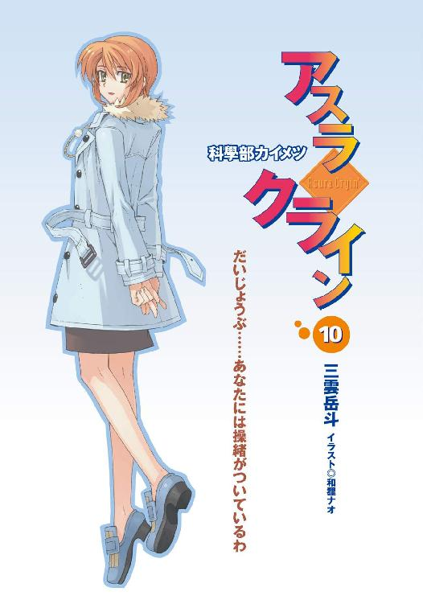
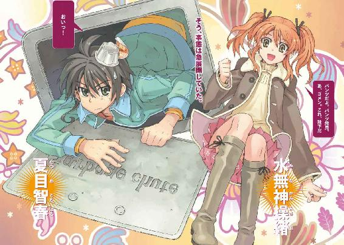
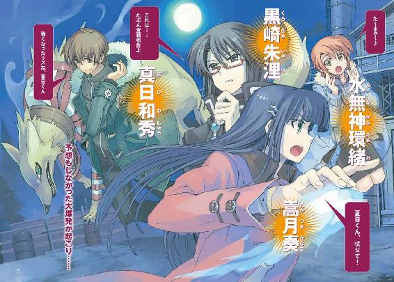
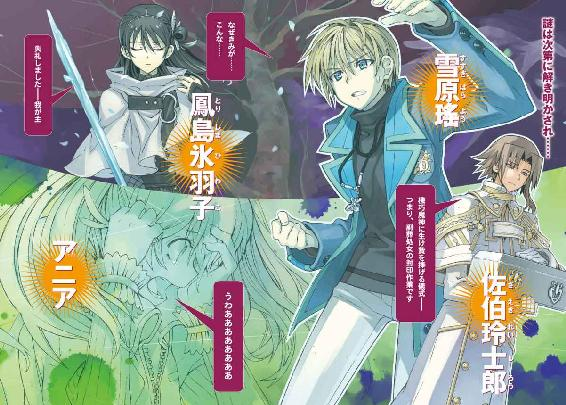
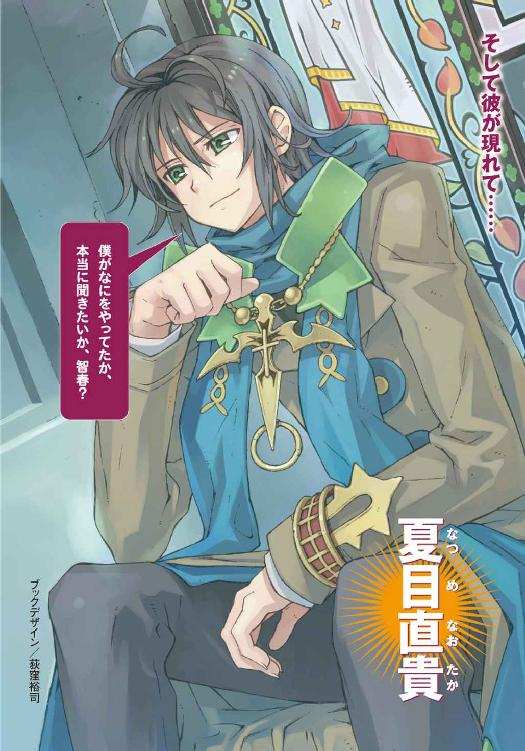
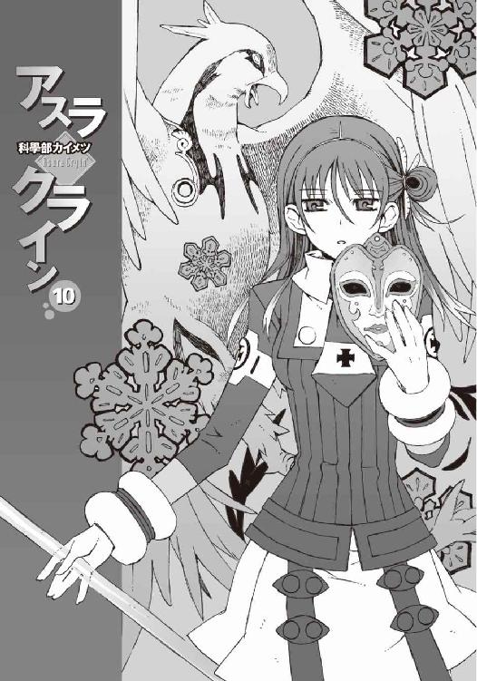
本書（電子版）に掲載されているコンテンツ（ソフトウェア／プログラム／データ／情報を含む）の著作権およびその他の権利は、すべて株式会社アスキー・メディアワークスおよび正当な権利を有する第三者に帰属しています。
法律の定めがある場合または権利者の明示的な承諾がある場合を除き、これらのコンテンツを複製・転載、改変・編集、翻案・翻訳、放送・出版、公衆送信（送信可能化を含む）・再配信、販売・頒布、貸与等に使用することはできません。
φ プロローグ
夕陽が、建物を赤く照らしている。
巨大なピラミッドの底辺を無理やり四方に引き延ばしたような、無闇に特徴的な形の建物だ。
遠目には、それは湖上に浮かんでいるようにも見えた。浄水施設を兼ねた冷却水のプールが建物を完全に取り囲み、ゆるゆると波打つ水面が、夕焼けを反射して赤く染まっている。
その建物に窓はない。無表情なコンクリートの外壁が、周囲を完全に覆っている。
その外観は最先端の研究所というよりも、すでに滅びた古代文明の王墓のようだと僕は思う。
生き物に死臭というものがあるように、滅びる直前の文明というやつも、似たような匂いを漂わせているものなのかも知れなかった。べつにどうでもいいことだけれど。
十字稜──というのが、その建物の名前だ。
墓に似たその静かな建物の中に、僕たちは立っている。
頭上の採光スリットから夕暮れの陽射しが降り注ぎ、僕たちの足下に濃い影を落としていた。
その足下の床の上には、金属製のケースが置かれている。
銀色の巨大なトランクケースが。
「ふたつ......だけですか」
白衣を来た彼女の背中に、僕は問いかけた。髪を揺らして、潮泉律都はゆっくり振り返った。
夕陽が彼女の白衣を赤く染めている。
「そう。たった二種類だけ」
可愛らしく微笑みながら、彼女は答えた。彼女の手元で、紅茶のカップが湯気を立てていた。その湯気すらも夕陽の中で、淡く赤い色に染まっている。
「生命とはなにか──って問いかけは、人類が有史以来、幾度となく繰り返してきたものだけど、その定義は大別すれば二種類しか存在しない」
彼女の言葉を、僕は黙って聞いた。
少し──意外な気がした。
宗教家、科学者、哲学者、医師、そして名も無き多くの人々。生命とはなにかという疑問の答えは、気が遠くなるほどの昔から誰もが探し求めていたはずだ。
その答えがわずか二種類に分類されてしまうというのは、やはりどこか意外に思えた。
「二種類というのは？」
困惑の混じった僕の質問に、律都さんは静かに告げた。
「すなわち──魂の存在を認めるか否か」
「魂......」
僕はうなずいた。その分け方なら、たしかにふたつにしか分類できない。
「たとえばある宗教では、魂とは世界の造物主──神の一部だと考えられている。人は死ねば、その魂は神の許に返っていくものだと......また別の宗教では、魂というものが輪廻の輪に組みこまれて何度も生を繰り返すものだと考えられている。これらは、まるで違うことを語っているようで、肉体とは魂の乗り物である、という意味では同じ思想であるともいえる」
「はい」
「その一方で──脳の神経回路内部に生じた電気信号こそが魂の正体である、と考える人々もいるわ。モノにも魂が宿るという仮説。精霊信仰に近い考え方ね」
「............」
もう一度、うなずく。前者の説では、肉体とは別に魂が独立して存在し、後者の説であれば、魂とは肉体というハードウェアの上に存在する一時的な情報でしかないということになる。
たしかに二種類の定義が存在する。
だがそれだけでは、まだ足りない。
真実がどちらなのか、まだわからない。人類はまだ解答に辿り着いていないのだ。
「兄貴は......なんて言ってたんです？」と僕は訊いた。
僕が彼の存在──今はもういない男の存在を口にした瞬間、律都さんの表情に哀しげな影がよぎった。
「あなたのお兄さんは、魂とは一種のデータの集合体だと考えていたみたいね」
「データ？」
律都さんの答えに、僕は首を傾げた。魂などという実体のない曖昧な存在と、データというデジタルな言葉の響きが、僕の中で上手く結びつかない。
しかし律都さんは、愉快そうに肩をすぼめて笑い、
「そう。世界という巨大な、実体を持つ仮想空間を構成するデータの一部。私たちは、その魂によって肉体という素粒子の集合体を維持し、行動する──ちょうど、ゲームの世界のキャラクターのように」
「......よくわかりません」
「そうよね。私も完全に理解できているわけではないもの」
律都さんは平然とそう言って笑った。
「悪魔と呼ばれる人々は、私たちとは異なる世界から来訪した〝人類〟よ。だから彼らの魂は、私たちとは異なるデータ構造を持っている。その魂は、バグやウィルス的な働きをして、この世界に破壊的な影響を与えることができるわ──炎や雷や、異形の怪物を召喚する、というような現象を起こしてね」
「それは──」
知っている。僕はそのことを知っている。
「だけど、彼らの魂は、もともとはこの世界のものではないから、世界に影響を与えることで自らも消耗していく。この世界からの抵抗でね。減ってしまった魂の補給は不可能よ──彼らは陸に打ち上げられた魚のようなものなの。力を使い果たせばそれでおしまい」
「......だから彼らは契約者を必要とする？」
ひび割れた乾いた声で僕は訊いた。
「ええ......彼らは〝契約〟という形で、この世界の人間の魂の一部を分け与えてもらう。彼ら自身に対する愛情や記憶を消費することで、この世界でようやく安定できる」
そう、僕たちはそれを知っている。
だから、なのだ。だから彼女は契約を拒んだ。僕が彼女の記憶を、彼女に対して感じている想いを失うことを──拒んだ。自らの消滅と引き替えにしてでも──それらを守ろうとした。
「非在化というのは──つまり、彼女たちの魂が、肉体を維持できないほど消耗してしまった状態、ということですね」
僕は呟き、正面の窓に視線を向けた。
この建物の外壁には窓がない。だからそれは、外の景色を見るためのものではなく、建物の中心部。研究室に設置された水槽を見るための窓だった。
「そうなるわね」
律都さんはうなずいた。
白衣を着た彼女の肩越しに、水槽の中に浮かんでいる影が見える。
それは若い少女の姿をしていた。手術を受ける患者のような薄いシャツを身につけて、それ以外はなにも着ていない。彼女の腕や口元には何本もの管が繋がれて、羊水に似た成分の液体の中を漂っている。シャツの裾から伸びた細い脚は、うっすらと背後が透けていた。
ガラスのように輝くその脚から、さらさらと透明な破片が、砂のようにこぼれ落ちていく。
僕は唇を噛んで、律都さんを見上げた。
「彼らの存在を復活させる方法は？」
「それは簡単よ。理屈の上では」
律都さんは即答した。
「彼らを、彼らが普通の〝人間〟でいられる世界──すなわち、彼らの本来の世界に戻すこと。あるいは、そもそも彼らがこの世界に出現するのを防ぐこと。つまり......」
「──歴史を変えてしまうこと」
彼女の言葉を引き継いで、僕は言った。
「そう」
律都さんは表情を変えない。
なるほど、と僕は苦笑した。たしかにそれは簡単だ──理屈の上では。
「シンプルでいいですね。わかりやすくて助かります」
笑いながら呟く僕を見つめ、律都さんは無感動な声でぽつりと言った。
「今なら、まだやめられるわよ」
「............」
僕は笑顔を消して、沈黙した。
そして、足下に置かれたトランクケースを見下ろした。銀色の見慣れない金属で造られた、継ぎ目のない、奇妙な形のケースだった。真新しいその表面には、短い英文が印字されている。
"Final Production Run"──最終生産品。
「だけど、そのためにあなたたちは──こいつを作ったんですよね。彼女を生け贄にして」
そう言って僕は自分の背後を見上げた。
そこには、もう一人の少女が浮かんでいた。実体を持たない幽霊の少女だ。彼女は僕と目を合わせて、少し困ったような表情で悪戯っぽく微笑んだ。
「......そうよ」
律都さんは、なぜか寂しそうに笑って目を細めた。
「それは、私たちが生み出した最後の希望なの。二巡目の世界を生みだし、歴史を変える能力を与えられた、ただ一機の──完成体の機巧魔神」
「......希望」
僕は我知らず微苦笑を洩らした。ずいぶんと不細工で物騒な希望もあったものだ、と皮肉な気分で思う。
トランクケースには、左右二カ所の留め金があった。
鍵穴も、本体と蓋を接合するヒンジも見あたらない──したがって、どうやって開くのかもわからない奇妙なケースだが、なぜか留め金だけがあり、そのふざけた留め金を、僕は無造作に外していく。
軽く溜息をついて、隣を見る──と、そこには幽霊の少女の横顔があった。
大きな瞳と透けるような白い肌。生真面目そうに結んだ唇。
僕の視線に気づいて振り返り、彼女は僕を励ますように無言で微笑んだ。
彼女の髪が、少し遅れて、まるで水の中にいるようにふわりと揺れる。
艶やかな長い黒髪が。
「それが、きみの選択なの？ つらい思いをすることになるわよ......？」
白衣の女が夕陽を浴びながら──どこか哀れんでいるような口調で言った。
「それでアイツが救えるのなら」
留め金を開放したトランクの上に手を置き、僕はもう一度、水槽の中の少女を見上げた。
淡い水色の液体の中を、色素の薄い彼女の髪が、音もなくゆらゆらと揺れている。
目を閉じた彼女の横顔を見て、僕は笑った。
彼女が喋れるなら、きっと言ってくれただろう──だいじょうぶ、と。
隣にいる幽霊の少女と顔を見合わせ、僕たちはタイミングを計るように互いにうなずきあった。そして多少の照れを感じながら、叫んだ。
「来い──！」
銀色のトランクの蓋が弾け飛び、幽霊の少女の身体がモザイク状に揺らいで、消滅した。
トランクの中に詰まっていたのは、闇だった。
まったく光を反射しない──虚無の闇。それは夕陽が落とす僕の影と一体となって、床の上に闇色の裂け目を生み出した。
その裂け目をこじ開けるようにして、闇の中から迫り上がってきたものがある。
鈍く輝く金属の鎧に覆われた腕だ。
人間の身体ほどもある巨大な──人形の腕。
機械仕掛けの人工の悪魔、機巧魔神の腕だった。
やがて完全に姿を現した機械の悪魔は、全身に埋めこまれた歯車を回転させ、獣の咆吼に似た轟音を放った。
全身を包む鋼色の装甲に、夕暮れの赤い陽射しを浴びて。
左手に握った巨大な剣を、闇色の影に突き立てて。
「来い、鋼！」
それが僕の──夏目智春の見た記憶。
この世界の最後の記憶だった。
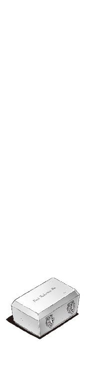
一章
ダストシュートの縦坑の中は狭かった。そして暗かった。もともと人間が通るようには造られていないのだから当然といえば当然だが、傾斜はほとんど垂直で、ハシゴや手すりのような気の利いたものは一切ない。おまけにコンクリート剥き出しの壁には、ねばねばとした液体があちこちこびりついている。その感触を掌に覚えて、僕はひどく切ない気分になった。
おまけになんというか、この臭い。縦坑には、発酵した果実のような甘ったるい臭気が充満していて、それだけで目が回りそうになる。燃えるゴミ専用と書かれていたのだが、おそらく菓子の包み紙とか香水とか、その他の女の子的なものの臭いがいろいろ混じっているのだろう。たとえ女子寮から出たゴミといえども、しょせんゴミはゴミなのだった。
『あ、智春、パンツだよ。パンツ発見』
操緒が、ダストシュートの途中に引っかかっている布きれを見つけて騒ぎ立てる。
「べつにいいよそんなの、興味ないよ」
と言いつつ、僕が頭上を見上げた直後、
『あ、ゴメン。これ、靴下だ』
「おいっ！」
いくら暗くてもそれは間違えないだろ、と僕は脱力した。その勢いで一気に三メートルほどずり落ち、ゴミの山の中に腰まで埋まる。そんな僕の頭上にふわふわと舞い降りて、操緒は、くすくすと意地悪く笑った。
僕はうんざりと操緒を睨む。よっぽどこいつのパンツをのぞいてやろうかとも思うのだが、たいした長さでもないくせに操緒のスカートは鉄壁の防御で、どうやってものぞけそうにないので諦めた。べつにそこまでしてパンツが見たかったわけでもないのだ。いやほんと。
ダストシュートは、そのまま女子寮の外のゴミ回収コンテナにつながっていた。重い金属の蓋を開け、ゴミをかき分け、僕が息も絶え絶えにゴミ溜めの外に這い出すと、
「遅いわよ、智春クン」
今度は、環緒さんに怒られた。操緒にそっくりの顔をした彼女の実の姉──操緒をそのまま五歳ほど成長させたような姿の女子大生だ。
外部からの連絡を遮断して引きこもっていた彼女に会うために、僕たちは苦労して女子寮に侵入し、そして現在に至っているのだった。
「狭くて抜け出すのに苦労したんですよ」
僕は、ダストシュート内の謎の女子寮汁で汚れた手を、嵩月にもらったティッシュで拭きながら、
「もっとマシな出口はなかったんですか。あと、この服装も......なんというか」
「贅沢言わない。それとも、もう一度女装して玄関から出たかった？」
「いや、それは遠慮しときます」
環緒さんに冷たく言われて、僕はやれやれと首を振る。
僕が女子寮侵入時に使った女装用のカツラはゴキブリ騒ぎで失われていたし、着ていた女物の服も、その直後の爆発に巻きこまれてボロボロだった。
そんなわけで僕が着ているのは、環緒さんがどこからか調達してきた古着のジャージ上下とＴシャツだった。ウエストのサイズは問題なかったのだが、やはり女物ということでズボンの丈はぱっつんぱっつん。上着は若干サイズもきつめで前のファスナーが止まらない。
そしてＴシャツの胸にプリントされているのは、『アイ・ラブ・ビーフ』という謎の英文のロゴだった。タダでもらっておいて言っちゃあなんだが、このＴシャツを買った元の持ち主のセンスは、かなり最悪に近いと思う。
「汚れが落ちたなら、荷物を運ぶの手伝って」
環緒さんが腰に手をあてて僕を呼んだ。
本人たちは気づいてないのだろうが、それは普段の操緒にそっくりの仕草だった。違うのは、彼女が宙に浮かんでいるわけではないということくらいだ。嵩月もそれに気づいたのか、操緒たち姉妹の姿を見比べて、少し面白そうな表情を浮かべている。
環緒さんの足下には、旅行用のスーツケースやバッグが所狭しと並べられていた。よく見ればヘアドライヤーやらパソコンやらの家電製品まで紛れこんでいる。
「なんだか......夜逃げみたいですね」
ずっしりと重い荷物を両手に抱えて、僕がぼやき混じりに呟くと、
「みたいっていうか、夜逃げなんだけどね」
環緒さんがさらりと答えた。
「え、そうなんですか？ なんで？ もうここには戻ってこないつもりなんですか？」
「あたしがここにいるのを知られちゃったからね。さっきのヤツ、見たでしょ？」
「ああ......」
僕は表情を微妙に引きつらせてうなずいた。嵩月が、ひくっ、と怯えたように動きを止めた。ゴキブリに似せて作られていた、監視メカの姿を思い出したのだろう。
ここ最近、僕たちのことを尾行していたあのメカは、おそらく破壊される直前、環緒さんの姿を監視者に送信したはずだ。監視者の目的が環緒さんの居場所を知ることなら、あのメカは、与えられた役割をほぼ果たしたことになる。
「わりと気に入ってたんだけどねえ。普通に女子大生やるのも」
環緒さんが、どこかのんきな口調で言った。彼女の言葉に、僕はいくらかの責任を感じて、
「すみません、僕たちのせいで」
「気にすることないわよ。きみたちに見つかるくらいだから、ほかの連中も遅かれ早かれ、あたしの居場所をつきとめてたと思うしね」
環緒さんはそう言って、あっけらかんと微笑んだ。特に強がっているようには見えなかった。あまりにも彼女が平然としているので、むしろ僕たちのほうが逆に不安になる。
『で、結局、なんでお姉ちゃんはこそこそ隠れたり逃げ回ったりしてるわけ？ いったい誰に追われてるの？』
操緒が少し苛立ったように言う。ただの人間だと思っていた環緒さんの正体が実は悪魔で、しかもそれを今まで知らされていなかった、というのが不服なのだろう。しかし操緒も自分が幽霊になったことを環緒さんに教えてなかったわけで、お互い様ではないかなあ、と思う。
不機嫌そうに睨んでいる実の妹を、環緒さんは少し面白そうに見返して、
「さあ？」
『さあって......』
なんで知らないのよ、といわんばかりに頭を抱える操緒。同じ顔の姉はニヤニヤと笑って、
「心当たりが多すぎてね。借金の取り立てみたいな単純な話だったらよかったんだけど」
「......狙われる理由は？ それもわからないんですか？」
ふて腐れて黙りこんだ操緒の代わりに、僕が訊いた。
「ん、それはだいたいわかってる」
でかいスーツケースを引きずっていた環緒さんは、そう言うと一台の車の前で足を止めた。女子寮の裏にある、やたら高級そうなマンションの駐車場に停まったＢＭＷだ。
「焦らなくても説明してあげるわよ、全部。乗ってくでしょ？」
環緒さんが堂々とＢＭＷの運転席側に回りながら訊いてきた。
「あ、これって、環緒さんの車だったんですか？」
軽く驚いて僕は訊いた。スポーティな雰囲気の４ドアセダンで、革張りシートの内装は見るからに高価そうだ。思わず憧れの眼差しで見つめる僕に、環緒さんはきょとんと首を振り、
「ううん、違うよ。持ち主は、よく知らないオッサン」
「え？」
環緒さんはコートのポケットから、怪しげなリモコンを取り出すと、ＢＭＷの電子ロックをあっさり解除した。そして無造作に車のトランクを開け、スーツケースを放りこむ。
「って、環緒さん？ いったい何を？ 他人の車をそんな勝手に......」
「いいのいいの。この車って、近所の会社の成金社長が、見栄と税金逃れのためだけに買った車だからさ。盗難保険もがっつり利いてるし、むしろ誰か盗んでくれたほうが有り難いってくらいのシロモノなのよ。さ、乗って乗って」
盗んでくれたほうが有り難いって、もしかしてこれは車ドロボウの現行犯なのか？ そんな車に乗れといわれても困るのだが。
「いや......環緒さん。なんというか、これって普通に犯罪なのでは......？」
僕が説得を試みている間に、環緒さんはさっさと運転席に乗りこんで、勝手にハンドル周りを弄り始めていた。
「直貴の話だと、たしかこれでイモビライザが無効化できるはずなんだけど......あ、動いた」
環緒さんの口から、うちの兄貴の名前が出てきたことに驚愕する。あの男も共犯か！
「はい、地図。いちおうカーナビもついてるけど、使い方よくわかんないしね」
呆然と立ち尽くしている僕に向かって、環緒さんが分厚い道路地図を投げてくる。
それを受け取って、僕は渋々覚悟を決めた。どうやら僕が助手席に乗って、彼女の道案内をするのは、環緒さんの中では既定事項らしい。
どのみち、ここで環緒さんを見失ってしまったら、彼女に訊くはずだった疑問の答えはなにひとつわからないままだ。僕には最初から選択肢は残されていないのだった。
そして僕がＢＭＷの助手席に座ると、操緒と嵩月も当然のように後部座席に乗りこんできた。それを確認して、環緒さんは満足げにうなずき、
「さーて、それじゃあ、行きますか」
やたら愉しそうに環緒さんはアクセルを踏みこんだ。
その瞬間、ＢＭＷの車体が猛然と加速した。
三百馬力オーバーを誇るＶ８エンジンが咆吼し、でかい車体が蹴飛ばされたように走り出す。
車は一瞬で駐車場を飛び出して、街路樹の枝をなぎ払い、電柱脇のポリバケツをぶっ飛ばし、そのまま向かい側の民家に突っこむ寸前でかろうじて停止した。僕も操緒も、嵩月までもが、青ざめた顔を硬直させていた。まさか走り出してわずか一秒で、死にそうになるとは思わなかった。心臓が今ごろになってばくばくと音を立て始める。
「ちょっと失敗しちゃった。んー......と、バックするにはどうしたらいいんだっけ。あ、これか」
そう言って環緒さんがなにかレバーを操作する。と、いきなりワイパーがフロントガラスの掃除を始めた。僕たちはもはや言葉もない。
「やあね、冗談よ、冗談。ほら、あたしイギリス育ちだから、左側通行には慣れてなくて」
環緒さんが明るく笑いながら言い訳する。イギリスも右ハンドル左側通行だろ、とよっぽど突っこんでやりたかったのだが、喉が引きつって声が出せない。というか、そもそも今のは、右とか左とかいう以前の問題だろ。
そんな感じで僕たちが衝撃から立ち直れないでいる間に、環緒さんは車をバックさせることに成功し、見事に盗難車と化したＢＭＷはようやくまともに走り出した。
「た、環緒さん？ いちおう訊きますけど、免許持ってるんですよね？」
なぜか無口になってしまった環緒さんに、おそるおそる訊いてみる。
環緒さんは前を凝視したまま、
「運転はできるわよ」
なんだその回答、と僕は思った。僕は免許の有無を訊いたのだ。微妙に論点がズレてないか？
と、僕たちの不審の眼差しに気づいたのか、
「大丈夫、大丈夫。このくらい平気よ。えーと、年の功ってヤツ？」
環緒さんは、まったく説得力を感じさせない口調でそう言った。
僕はあわててシートベルトを締めた。道路法規ではなく、自分の命を守るために。
○
めきょ、と景気のいい音を立てて、紅白に塗り分けられた遮断機のバーが吹き飛んだ。
高速道路の入口。無人の料金所ゲート前である。
「わ、なにやってんですか、環緒さん」
僕は声を上擦らせながら、へし折れたウレタン製のバーを振り返る。しかし環緒さんは平然と車を加速した。まるで、道を譲らない開閉バーのほうが悪い、といわんばかりの態度だ。
「今のは環緒は悪くないわよ。ほら、この車、ＥＴＣ付いてるし。これって、機械が通行料金払ってくれるんでしょ？」
そのくらい知ってるのよえっへん、とばかりに環緒さんが胸を張る。
彼女が指さしたダッシュボードにはたしかに、それらしいロゴの入った機械が置かれていた。
高速道路のノンストップ自動料金収受システム。料金所を通過するだけで、料金の支払いを済ませてくれて、たまに料金割引サービスまでついてくるというたいへん便利な機械である。
だがしかし、
「ＥＴＣは専用のカードを差し込まないと動かないんですよ、たしか」
「え、そうなの？ うわ、せこっ......」
「いやだから、せこいとかそういう問題じゃなくて......」
助手席のシートに身体を埋めながら、僕は嘆息。車ドロボウの次は高速道路料金の踏み倒しか。どのみちあんなスピードで料金所ゲートに突っこんだら、ＥＴＣがまともに作動してても、反応したかどうか怪しいものである。
「どうしたの、智春クン？ そんな指名手配写真の犯人みたいな仏頂面して？ こんな美人と一緒にドライブしてるのに嬉しくないわけ？」
からかうような口調で環緒さんが訊いてくる。僕は長い溜息でその質問に答えた。無理やり犯罪に巻きこんでおいて、どうして僕が喜ぶと思うのだ。
たしかに同乗者は美人かもしれないが、中身は特殊能力を持った悪魔が二人と、僕に憑いてる幽霊が一人。まともな人間が誰もいない。おまけに車は盗難車で運転手は無免許。この状況で鼻の下を伸ばしていられる者がいるとしたら、そいつはよほどの豪傑かただのバカだ。
とはいえ、僕が環緒さんに文句を言うのは筋が違う。ひっそりと隠れて暮らしていた彼女の許に、無理やり押しかけたのは僕たちのほうだからだ。
「さっき言いましたよね、全部説明してくれるって」
膝の上に広げた地図で現在地を確認しながら、僕は訊いた。
「ん、言ったよ」
環緒さんは、ハンドルを握ったまま肩をすくめた。
「......ホントはなにも知らないほうがいいと思うんだけども」
「説明してください」
僕は彼女の横顔を睨んだ。
「あなたは何者なんですか。どうして悪魔の力が使えるんです？ あなたが狙われてる理由は？ あの鋼色の機巧魔神の演操者は、いったい何者なんですか？」
そこで後部座席の操緒が、ぬっと顔を突き出して、
『──あと、お姉ちゃんの部屋にあった大量の謎トランクのこともね』
「そうそれ」
うなずく僕に、
「せっかちだなあ」
環緒さんが苦笑した。
「質問するなら順番にしてよね。ちゃんと説明してあげるからさ。でも、その前に、そろそろ行き先を決めないと」
思わず僕は声を裏返らせて、
「行き先も決めずに走ってたんですか──!?」
環緒さんは少し傷ついたように唇を尖らせて、
「あのねえ、一介の女子大生が、秘密の隠れ家なんて都合のいいモノを、いくつも用意できるわけないでしょうが。怪しまれずに安全に身を隠せて、それでいて外部の情報が手に入る場所なんて、あんまりないのよ。あの女子寮だって、手配するの、けっこう苦労したんだからね」
『とりあえず、ウチに帰ればいいじゃん。おばちゃん、けっこう綺麗にしてくれてたよ』
操緒が呆れたように言った。環緒さんは、はん、と鼻で笑って、
「バカねえ。ウチの実家なんか監視されてるに決まってるでしょ」
『あ......操緒のこと、バカって言った！』
ムッと不機嫌な表情を浮かべる操緒。環緒さんはさらに挑発するように、
「何回でも言ってあげるわよ、バーカ、バーカ」
『ぐ......この貧乳女子大生......』
「貧っ!? あんた......よくもそんな天に唾するようなことを......！」
環緒さんが、操緒と同じように顔を引きつらせる。まるで、同じ人間同士が言い争っているみたいだな、と僕は思う。姉妹というのは、こういうのが普通なのだろうか？
ひとしきり悪態をついたあと、環緒さんはぜえぜえと息を弾ませながら、
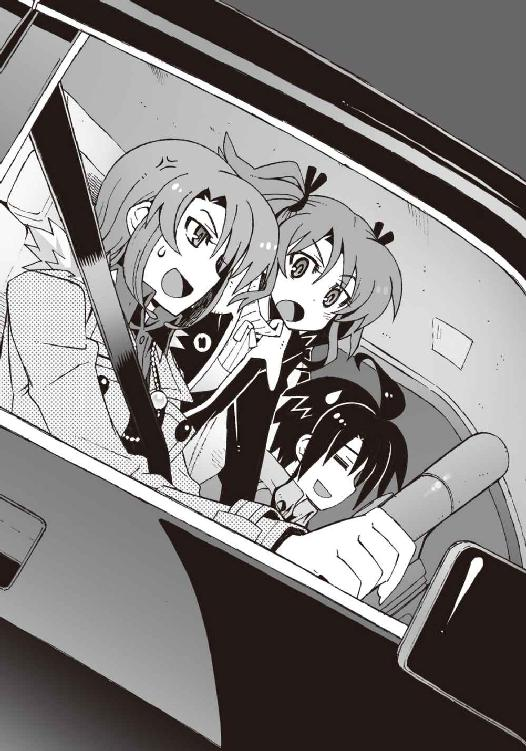
「あったまきた。あんたが覚えてることも忘れてることも全部ばらしてやる！」
『なにそれ。今さら智春相手に、子どものころの話をされても痛くもかゆくもないよ』
「ふふん......だといいけどね」
意味深な口調で言い放つ環緒さん。彼女はそこで突然ハンドルを切って道を曲がった。サービスエリアに続く分岐路だ。だだっ広い駐車場の端っこに、やや危なっかしい運転で車を止め、
「智春クン、食べ物買ってきてくれる？」
「え......食べ物？」
いきなりだなあ、と僕は思う。本当に操緒の気まぐれを見ているようだ。
しかし腹が減っているのは僕も同じだった。外はすっかり暗くなってるし、いろいろあって僕たちは昼間からなにも食べていない。
「いやでも、この恰好で外を出歩くのはちょっと......」
ぱっつんぱっつんのジャージを着た自分を見下ろし、僕は尻込みする。この服装で店に入るのはかなり勇気が必要だった。なにしろアイ・ラブ・ビーフだし。ベジタリアンに見られたら、いきなり後ろから殴られそうだ。
「大丈夫。高速道路のサービスエリアの客なんか、みんなそんなもんだってば」
他人事だと思って、根拠なく断言する環緒さん。まあたしかに、高速道路で休憩するのに、あえてオシャレする必要もないとは思うが。
「あたし、焼きそばと揚げジャガイモね。あとメロンソーダ。嵩月さんは？」
環緒さんに訊かれて、嵩月は少し恥ずかしそうに、
「あ......わたしは、こういうところでなにが売っているのか、あまりよくわからないので......」
「ああ、もう！ 相変わらず可愛いなあ、奏は！」
シートから身を乗り出して、嵩月を無理やり抱き寄せる環緒さん。
「う......あ......」
嵩月はしばらく無抵抗のまま、環緒さんにもみくちゃにされて目を白黒させていたが、不意に表情を硬くして、
「あの......どうしてわたしの名前を？」
「え？」
「わたしは、あなたに名乗っていない......なのに、どうして？」
警戒するような視線で、嵩月は環緒さんをじっと見つめた。
「ああ、そうか......そうね。こっちのあなたとは今日が初対面だったっけか」
環緒さんは、軽く髪をかき上げながら苦笑して、
「いいわ。だったら、そこから説明しましょう。とりあえず、その前にメロンソーダ！」
「あー......はいはい」
環緒さんに命令されて、僕は仕方なく車を降りた。サービスエリアの売店に立ち寄り、環緒さんのご所望の品と、あとは適当に食べ物を買い集める。
「なあ、環緒さんって昔からあんな性格だったっけ？」
注文の品が出てくるまでの間に、くっついてきた操緒に訊いてみる。
操緒は、ん、と首を傾げて、
『あんな性格って？』
「え......いや、大雑把というかのんきというか......」
まるで操緒みたいな、と言いかけて僕はその言葉を呑みこんだ。なんとなく、姉妹のどちらからも怒られそうな気がしたからだ。
『んー......そういえば昔はもっと大人しいってか、よそよそしい感じだった気がするけど、ま、あんなものじゃない？ ムダに自信たっぷりだったよ、あの人。前から』
「............」
ムダに自信たっぷりに断言する操緒を見返して、僕は軽く溜息をついた。
焦げたソースの匂いが漂う紙袋を抱いて、盗難ＢＭＷに戻る。僕が買ってきた焼きそばを見て、環緒さんは子どものように嬉しそうに笑った。
「んー......いいね。この計画性皆無のグダグダ感。やっぱドライブはこうでないと」
焼きそばを口に頬張ったまま、環緒さんは再び車を発進させる。気持ちはわからないでもないが、そういうことを言うのは、他人を巻きこまないときだけにして欲しい。
「えーと、ごめん。それでなんの話だったっけ？」
加速したＢＭＷが再び高速道路に戻ったところで、環緒さんが訊いてきた。そして僕たちが答えるよりも先に、
「まーいいや。面倒くさいからさ、勝手に話させてもらうわ。きみに聞かされた話を、きみにそのまま話すのもバカみたいだし──まー、それはきみの責任じゃないんだけどさ」
「はい......？」
なにを言ってるのかさっぱりわからない。しかし環緒さんは、僕たちを無視して一方的に話し始めた。車はいちおう洛央市方面──彼女の実家や、洛高のある街へと向かっている。
「つまりね、あたしたちは、世界の一部である──ＯＫ？」
「はあ。それはまあ」
僕は曖昧にうなずいた。以前に加賀篝に聞かされた説明も、たいがいわかりにくかったが、どうしてこの人たちの話はいつも、世界とか宇宙とかスケールのでかいところから始まるのか。
そして環緒さんは、困惑している僕にダメ押しするように訊いてくる。
「だったらさ......世界ってのは、なんだろうね？」
「はい？」
「べつに哲学的な答えを求めてるわけじゃないのよ。ただの喩え話」
環緒さんは、まろやかに微笑んで話を続けた。
「あなた......のお兄さん──えーと、夏目直貴は、この世界ってのは、超巨大で高性能で欠陥だらけのサーバみたいなものだと言ってたわ。わかる？」
「いや、あんまり」
僕は大人しく首を振り、助けを求めるような視線を後席に座る二人に送った。仕方ないなあ、というふうに操緒が身を乗り出してきて、
『サーバって、あれだよね。ネットワークなんかのデータを記録してるでかいコンピュータ』
「そうそう。オンライン・ゲームなんかだと、ゲームの中の仮想世界が、そのサーバの中で動いてたりするわよね」
わりと適当な口調で同意する環緒さん。この人も、実はあまりよくわかってないっぽい。
コンピュータの内部に構築された、人工的な仮想世界。
それも、世界といえばいえないことはないのだろう。そしてうちの兄貴は、この世界そのものも実はその同類だと言っているのだ。それが人工物か、神が作った天然モノかの違いだけで。
言いたいことはわからないでもないが、ピンと来ない。
やはり頭のいい連中の考えることはよくわからん。
「オンライン・ゲームのサーバにはデジタルデータが記録されてる。モンスターの行動パターンとか、プレイヤーのデータとか、あるいは舞台となる世界そのものとかね」
「......はあ。なるほど」
相変わらずよくわからなかったが、話が進まないので相づちだけ打っておく。
「あたしたちがプレイしてるゲームってのは、要するに、そのデータの変化を見てるわけ。それはわかる？」
「なんとか」
「でもって、あたしたちのいるこの世界も、細かくバラしちゃえばなんか素粒子とかそういう、ちょー微細なデータの集合体なわけよ。あたしたちの力じゃ変えられないデータは、運命とか物理法則とか呼ばれるし、そのデータの変化の記録が記憶とか歴史とか呼ばれるの」
「......あの、すいません。なんの話をしてたんでしたっけ？」
さすがについていけなくなって、僕は口を挟もうとした。しかし環緒さんはそれを無視して、
「で、問題なのは、〝世界〟って名前のそのサーバは、一台だけじゃなかったってこと。加賀篝隆也から、膜宇宙の話は聞いたんでしょ？」
「......あ」
ようやく話がつながった──気がした。
加賀篝隆也が言っていた。重力を量子論的に説明するための理論──超弦理論を突き詰めていくと、それは一種の並行世界の存在に行き着くらしい。
世界は無数に存在する。実は物理法則でそれが予見されているのだ。
そして今から近い未来。
それらの世界同士が接触するような事件が起きる──
「本来は独立したサーバだったはずの世界同士が接触することによって、あたしたちの世界のデータと、ヨソの世界のデータの一部が入れ替わってしまった」
「......入れ替わった？」
「喩えるなら、べつのゲームの戦士だのモンスターだのが乱入してきたようなものよ。それは当然、この世界に歪みを生んだ──現在の世界のデータが書き換えられれば、過去にさかのぼって歴史も変わるし、物理法則も変わるってこと」
環緒さんが何気なく告げた言葉に、僕はヒヤリとした感覚を覚えた。
そう、僕たちはそのことを知っている。佐伯兄や加賀篝たちに前に何度も聞かされたから。
だが、なぜ環緒さんがそれを知っている？ 普通の女子大生だったはずの彼女が──
「もちろん歪みの影響を受けるのは、世界の一部であるあたしたち人間も例外じゃないわよね。そしてその歪みは、今も発生し続けている──」
「え？」
環緒さんの言葉に、僕だけでなく、操緒や嵩月までもが驚きの声を洩らす。
それは僕たちも初めて聞く情報だったのだ。
『......それってどういう意味？』
操緒が、環緒さんに顔を近づけて訊いた。しかし環緒さんはのんびりした口調で、
「ん？ そのまんま。つまり、今日は普通の人間だったあなたの知り合いが、明日には悪魔になってることもあり得るって話」
『......え!?』
操緒が、衝撃を受けたように頭を揺らした。
『じゃあ......もしかしてお姉ちゃんが悪魔化したのって......もしかして』
「まあ、せいぜい五十点かな。その答えじゃ」
環緒さんは、たいして表情も変えずに冷たく言い放った。操緒は少し呆気にとられた様子で、
『はい？』
環緒さんは、ちらちらとルームミラーに視線を向けながら、
「だからいちおう正解よ。半分だけ」
『なんで半分なの？』
操緒が不満げに唇を曲げて訊いた。環緒さんは億劫そうに溜息を洩らして、
「あたしが持っている悪魔の能力が、生まれつきのものではないというのは本当だけど、それだけじゃ、いろいろ説明つかないことがあるでしょ」
そういえば、と僕は思い出す。操緒の実家に、姉の写真が一枚もなかったこと。環緒さんの部屋に残されていた謎トランク。そして、なぜ彼女が追われているのか、ということ。うちの兄貴や加賀篝との関係──悪魔であるという以前に、環緒さんには謎が多すぎる。
『うう、なんかムカつく。もったいぶってないで、ちゃっちゃと説明してよ！』
ついに操緒がキレ気味に叫んだ。環緒さんは両手で強くハンドルを握りしめ、
「だからこうして説明してやってるでしょ──と」
彼女はアクセルをめいっぱい踏みこんだ。八気筒のエンジンが唸りを上げて、ＢＭＷの車体が加速した。乱暴な車線変更を繰り返しながら、環緒さんは、前を走る車を次々に追い抜いていった。どこかで見たような光景だと思ったら、これはたぶんあれに似ているのだ。ニュース番組でたまに流れる、アメリカのハイウェイでの警察と逃走犯のカーチェイス。
「ちょ......環緒さん!? いったい何やってんですか......こんな、いきなり」
軽く放心していた僕は、ふと正気を取り戻して環緒さんに呼びかけた。
環緒さんはちらちらとミラーをのぞきこみながら、短く言った。
「バレたわ」
「え？」
「追いつかれたみたい。思ったより早かったわね」
そう言って環緒さんが唇を噛む。
「け、警察ですか？」
僕は、ぎょっとしながら後続車のほうを振り返った。やはりバレたのか、と妙に冷静な気分で考える。車ドロボウの件か、でなければ料金所を強行突破した件か──とにかく身に覚えがありすぎて困る。なんだかんだで、やはり日本の警察は優秀だ。僕はただ助手席に座っていただけなのだが、やはり共犯ということになるのだろうか──？
しかし追跡してくるはずのパトカーは見えないし、それらしいサイレンも聞こえない。
「あ......上、です、夏目くん」
軽くうろたえていた僕の耳元に、嵩月が緊張した声で囁いた。
「......上!?」
まさかヘリに追跡されているのか!? ますますアメリカのカーチェイスみたいだなあ、と驚きながら、僕は顔を上げた。助手席側の窓を開け、身を乗り出すようにして頭上を仰ぐ。
しかし、そこで僕が目にしたものはヘリではなかった。
「げっ！」
それは飛行船でも飛行機でもない。もっと常軌を逸した存在だった。
獣だ。
全身に風をまとった巨大な四足獣が、空中を駆けるようにして、高速道路をぶっ飛ばすＢＭＷを追ってくる。その光景は、趣味の悪い都市伝説以外の何物でもなかった。子どもだましの怪談のほうがまだマシな嘘をつくだろう。
だが僕は、それが怪談でも作り話でもないことを知っていた。その獣の正体を知っている。
「使い魔......！」
僕の呟きを聞きつけたように、その巨大な獣が風を巻いて咆吼した。
○
しだいに距離をつめてくる獣をミラー越しに眺めて、環緒さんが拗ねたように言う。
「なにあれ!? 時速百八十キロ出しても振り切れないの!?」
「え......ちょっ......百八十キロて!?」
環緒さんの運転で時速百八十キロも出ているという、その事実に僕はゾッとした。道理でさっきから車がふらふら揺れているわけだ。どう考えても制限速度オーバーだ。
しかし、その暴走車両に追いついてくる使い魔も、やはり普通ではない。
狐によく似たその獣を見上げて、操緒は嫌そうな表情を浮かべ、
『あのさ、智春。あの使い魔って......真日和の......』
「......だよな」
僕は顔をしかめてうなずいた。
金色の毛並みの、風を操る使い魔──そいつの飼い主には心当たりがあった。洛高第二生徒会の会計担当、真日和秀の風獣。ヴィヴィアンだ。
「なによ、知り合いなの？」
環緒さんが不満そうな顔で訊いてくる。
「ええまあ......知っているというかなんというか」
ヤツを知っているからといって、なにかの役に立つわけではないのが困ったところだ。
真日和が所属する第二生徒会は、表向き、洛高の委員会活動を管轄していることになっている。だが、その実体は何でも屋だ。彼らは経済力こそが世界を救う鍵だと信じていて、金さえ払えば、どんな汚い仕事でも引き受ける。金儲けのためなら身内をも売り渡すというから徹底している。だから今回も、環緒さんの追跡を誰かに依頼されただけなのだろう。
真日和はおそらくなにも知らない。ヤツを捕まえたところで、雇い主の情報は手に入らないはずだ。そして厄介なことに、真日和の使い魔は恐ろしく素早い。超音速のジェット戦闘機でも持ち出さない限り、スピードであの使い魔を引き離すことは不可能だ。
「ちっ」
環緒さんが乱暴にＢＭＷの進路を変えた。高速走行中の急なハンドル操作に振り回されて、ＢＭＷの車体は呆気なく安定を失い、激しく蛇行する。その真横で、道路が弾けた。
アスファルトの路面が砕けて、その破片が飛び散った。
風獣の攻撃だ。
真日和の使い魔は、風を操る。圧縮した大気を弾丸のように撃ち出して、道路のアスファルトを破砕したのだ。いや、もちろん風獣が狙っていたのは、道路ではない。僕たちの乗っているＢＭＷだ。環緒さんが咄嗟にハンドルを切らなければ、風撃に前輪を撃ち抜かれて、僕たちは今ごろ中央分離帯のガードレールに突き刺さっていたかもしれない。
「真日和......あのバカ！」
胸に食いこむシートベルトの圧力に呻きながら、僕は呪詛の言葉を吐いた。
風獣の攻撃が繰り返されて、そのたびに道路に亀裂が穿たれていく。後続車が巻きこまれて事故るんじゃないかとか、誰が修理するのかとか、気になることはいくつもあったが、他人の心配をしている場合ではなかった。なにしろ狙われているのは、僕たちなのだ。
唯一の救いは、風獣が、僕たちを直接は狙っていないことだった。
おそらく真日和の目的は、環緒さんを生きて捕まえることなのだろう。風獣はＢＭＷの車体やエンジンを狙っても、運転席に近い場所を直接攻撃してはこない。
とはいえ、このスピードで蛇行を続けていたら、風獣の狙いがズレないとも限らない。その前に環緒さんが事故を起こす可能性も大だった。
「あんな使い魔が相手じゃ、逃げ場のない高速道路は不利ね......」
環緒さんが、悔しげに呟いた。まあまあ冷静な状況判断だ。
走行中の車の中では、僕の機巧魔神は使えない。嵩月の炎も、この距離では届かない。
かといって、高速道路を下りたところで、どうにかなるとも思えなかった。真日和の使い魔は、直接的な攻撃力はそれほどでもないが、ヤツの風撃は目に見えないだけに防御が難しい。おまけに、あの敏捷性はかなりの脅威だ。僕の機巧魔神──《 鐵》は正直、相性が悪い。ましてや、使い魔を持たない嵩月や、環緒さんが勝てる相手ではない。
鐵》は正直、相性が悪い。ましてや、使い魔を持たない嵩月や、環緒さんが勝てる相手ではない。
『智春、真日和の携帯の番号はわかる──？』
「そ、そうか......」
操緒に言われて、僕は携帯電話を取り出した。
追跡者の正体が真日和なら、話し合いで解決するという選択肢がある。べつに僕たちが相手だからといって、それだけで攻撃をやめてくれるような友情は期待できないが、条件次第では、交渉の余地があるかもしれない。このまま一方的に攻撃され続けるよりはなんぼかマシだ。
かすかな期待をこめて、僕は真日和の電話番号を呼び出した。
ＢＭＷはめちゃくちゃな速度で走り続けていたが、電話はちゃんと繋がった。人類の技術の進歩に感謝しながら応答を待つが、聞こえてきたのは無情な留守電メッセージだった。
「駄目だ......通じない。ドライブマナーモードになってやがる！」
『マナーモードって......まあ、いちおうアレも運転中っていえば運転中か』
疾走する使い魔の姿をリアガラス越しに眺めて、操緒が呆れたように嘆息する。
『なんか妙なところで律儀だね......どうする？ 六夏会長に頼んでみる？』
真日和の上司──第二生徒会会長、倉澤六夏の悪人っぽい美貌を思い出して、僕は弱々しく首を振った。今回の襲撃が、本当に第二生徒会に依頼された仕事なら、金にド汚いあの女が、僕の交渉なんかに応じるとは思えない。
僕は携帯のアドレス帳から、べつの番号を呼び出してコールした。そこから聞こえてきたのも、留守電センターの冷酷な応答メッセージだった。僕は顔をしかめながら息を吸い、
「あ、もしもし、朱浬さんですか!? 夏目ですけど、実は今、真日和に襲われてまして......」
『うわー......情けない......』
必死で助けを呼ぶ僕を眺めて、操緒が落胆したように肩を落とした。
非常事態なんだから仕方ないだろ──と、僕が言い返そうとしたところで、車が揺れた。
環緒さんがいきなり車線を変更して、デタラメな速度で急カーブに突っこんだのだ。それは高速道路を下りるためのインターチェンジだった。遠心力でドア側に吹き飛ばされ、衝撃で僕は携帯電話を落としてしまう。あわてて拾い上げようとしたが、その瞬間、アンダーステアで曲がり損ねたＢＭＷの車体がガードレールに接触。反動で僕はダッシュボードに頭をぶつけた。
「ぐわっ......」
通話中だった携帯電話は、シートの下に滑りこんで行方不明になってしまう。なんてこった、と僕は頭を抱えた。朱浬さんにはまだ、僕たちの居場所を伝えていないのだ。
その間にも真日和の使い魔の攻撃は続いており、携帯電話を拾い上げているような余裕はなかった。環緒さんの運転するＢＭＷは、再び高速道路出口の料金所に接近。当然のごとくＥＴＣの開閉バーを吹き飛ばして、料金所を突破する。
高速道路を走っていたときよりも速度は落ちていたものの、それでも車は時速百キロ以上で走り続けていた。道が狭くなったぶん、むしろ余計にスピードが出ているような印象がある。
その速度でアクセルを踏みこんだまま環緒さんは背後を振り返り、
「智春クン、ハンドル持ってて！」
「は、はい!?」
ハンドルを手放す環緒さんの姿を、僕は唖然と目を見開いて見つめた。
「ちょ、ちょっと、環緒さん!?」
僕が放心している間にも、目の前に緩い山道のカーブが近づいてくる。助手席から必死で手を伸ばし、僕は無理やりハンドルを操作した。パワステの仕組みがどうなっているのか知らないが、ハンドルはやたらに重かった。そんな無茶な状況にもかかわらず、ＢＭＷの前輪はきっちり仕事をした。不自然に車体を横滑りさせながら、それでもどうにかカーブを乗り越える。
環緒さんは、その隙に窓から上体を乗り出して、拳銃のように伸ばした人差し指で真日和の使い魔に狙いをつけていた。
その指先に滲み出た鮮血が、やがて漆黒の弾丸の形に変わる。命中したものすべてを消滅させる、悪魔としての環緒さんの能力──
「──神無！」
環緒さんの指先が、弾丸を撃ち放った。それは本物の弾丸と同じ速度で、風獣の前肢を狙って飛んだ。そして命中すると思われた直後、
風獣は、跳躍して、あっさりとそれを回避した。
「よけた!? あのスピードで──!?」
軽くショックを受けた表情で、環緒さんは呻いた。こうなふうにすぐに熱くなるところも、操緒にそっくりだ。しかし、さすが年の功というべきか、環緒さんはすぐに立ち直り、
「なら、これはどーよ!?」
タイミングを計って再び風獣の足下を狙い撃つ。
人間の肉眼では視認できない速度で飛ぶ漆黒の弾丸を、風獣は小ジャンプで華麗にかわした。
その瞬間、環緒さんがニヤリと笑う。
跳躍した風獣の前方には、行く手を阻む金属製の巨大なプレート。道案内の道路標識だ。
風獣の背中に乗っていた真日和の、あわてふためく姿が見えた。
本来の使い魔の能力なら、その程度の標識、簡単に破壊できただろう。しかし、風獣は契約者を背中に乗せたまま、時速百キロ以上で疾走中。おまけに環緒さんの弾丸に注意を奪われていた。
風獣は、尖った鼻先から、為す術もなく道路標識に突っこんだ。
鈍い激突音が響き渡り、痛々しい鳴き声が遅れて聞こえた。ついでに使い魔の背中から投げ出された真日和の、情けない悲鳴も聞こえてくる。
環緒さんはもぞもぞと運転席に戻って、ふふん、と勝ち誇った笑みを浮かべた。
操緒が姉をねぎらうように手を叩き、
『やった！ さすが年の功』
「年の功言うな！」
『お姉ちゃんが自分で言ってたんじゃん』
ムッとする操緒に、環緒さんはむっつりと唇を歪めて、
「あんたに言われると腹が立つのよ」
『なにそれ、ワケわかんない』
ふん、と互いにそっぽを向く二人。それを見つめて、オロオロとしている嵩月。こんなところで喧嘩するなよ、と僕はうんざり溜息をついた。
「とにかく、これで当分は追ってこれないでしょ」
ＢＭＷのスピードをようやく少し緩めながら、環緒さんは呟いた。
「......だけど、なんで真日和が環緒さんを狙って......？」
僕は背後の山道を振り返って首を傾げた。
洛高第二生徒会は、金銭のためにしか働かない。ということはつまり、真日和が環緒さんを狙ってきたのは、それが金になる仕事だからだ。だからといって、身代金目当ての誘拐というわけでもないだろう。環緒さんは、なにかを持っているのだ。なにか相当な価値のある情報を。
「たぶん、これかな？」
環緒さんは自分の服の中に手を入れると、もぞもぞと胸のあたりからなにかを取り出した。消しゴムほどの大きさの、プラスチック製のケースだった。
「これって......フラッシュメモリですか？」
いちおうそれくらいの知識は僕にもある。
環緒さんは、自分の頬に手を当ててうなずき、
「ほかに価値のあるもの、持ってないのよね。このハリウッド級の美貌を別にすれば」
それを聞いて『けっ』と鼻で笑ったのは操緒だった。
環緒さんが無言で振り返り、妹のことをギロリと睨む。
「あ......な、中身は？」
姉妹の間に流れた不穏な空気を察して、めずらしく嵩月が自分から口を開いた。環緒さんは気を取り直したように肩をすくめ、
「......座標」と言った。
僕と嵩月は同時に首を傾げた。操緒は黙って眉を寄せている。
あの、と僕は怖ず怖ずと手を挙げ、
「座標？ 東経何度とか、北緯何度とかってアレですか？」
「そうだよ」
「その座標に、何があるんです？」
「この世界」
「はい？」
「だから、あたしたちが今いる、この世界よ。無数にある膜宇宙──並行世界の中で、あたしたちが〝二巡目の世界〟と呼んでる場所。その座標が記録されてるの」
僕は唖然として環緒さんの言葉を聞いた。
彼女がなにを言っているのかさっぱり理解できないが、それってものすごく重要な情報なんじゃないだろうか。もしかしたら国家機密とか、そのくらいに。
『......なんでお姉ちゃんがそんなもの持ってるのよ？』
さすがに操緒の瞳にも、混乱の色が浮かんでいる。しかし環緒さんはのんきな口調で、
「使ったから」
『なんに使うの、そんなもの？』
イラッとしたように操緒が眉を寄せ、環緒さんはお姉さんぶった余裕の表情で、
「座標ってのはね、移動したりモノを送ったりするときに使うものなのよ」
『そんなの知ってるわよ！ 知ってるけど、宅配便じゃないんだから場所がわかったからって、モノを送れるってもんでもないでしょ......！』
「............」
僕はふと思い出していた。加賀篝隆也が言った言葉。世界を移動することは、可能なのだ。巨大な重力がそれを可能にするのだと。
そして僕は、異なる世界から送りこまれてくる存在を実際に知っている。虚無の闇に包まれた、どことも知れない空間から現れる機械仕掛けの人工の悪魔──機巧魔神。
「まさか、あなたは......」
沈黙していた嵩月が、目を大きくして環緒さんを見つめた。
環緒さんは、そんな嵩月に微笑んで、なにかを伝えようと口を開きかけ──
そしていきなり、アクセルをめいっぱい踏みこんだ。
ＢＭＷが後輪を軋ませながら加速した。またかよ、と思いながら僕たちはシートに押しつけられた。
「た、環緒さん!? 今度はなんなんですかっ......!?」
急激な加減速の繰り返しで、こみ上げてきた吐き気をこらえながら僕は訊いた。
環緒さんは無表情にルームミラーを見上げ、
「後ろのバイクも、きみたちの知り合い？」
「......バイク？」
彼女に言われて、ようやく気づいた。
曲がりくねった暗い山道を狂ったような速度で飛ばすＢＭＷを、一台のバイクが追走してくる。漆黒に塗られたカワサキだ。
地元の走り屋という可能性もゼロではないが、その確率は絶望的に低そうだった。なぜなら追跡者のライダースーツの肩には、ごっついコンバットナイフの鞘が縫いつけられていたからだ。健全なバイク乗りの服には、普通そんなものはついてない。
「あの風獣使いの仲間か......あたしたちが高速道路を下りるのは、読まれてたってわけね......というより、あの使い魔はあたしたちをこの道に誘いこむために攻撃してきたのか。やるわね」
環緒さんが悔しげに舌打ちした。操緒はなかば呆れ顔になって、
『なんでそこまでして、そのデータを欲しがるわけ？ それって、そんな価値があるもの？』
「あるね」
環緒さんも薄く苦笑しながら、
「加賀篝隆也に聞かなかった？ ある世界から、べつの世界へ移動することはできる。それは数式上では証明されてるの。だけど行き先はわからない。跳躍した先が、どんな世界のいつの時代か、実際に移動してみるまでわからないの──もちろん、一方通行だしね」
操緒が、ハッと真顔になる。
『じゃあ......座標っていうのは......』
「そう、これがあれば、あたしたちが今いるこの世界に跳べる。過去に戻って歴史を変えることもできる。これは、そのためだけに集められたデータ。あたしたちの世界で、大勢の人間を犠牲にしてようやく手に入れた実証データなの」
そう呟いた瞬間、環緒さんの表情が一瞬だけ哀しげに歪んだ。
「ちょっと待ってください......環緒さん、さっき、そのデータを使ったって言いましたよね？」
僕はますますひどくなる吐き気に耐えながら、呻くように言った。
「使ったよ......五年前にね」
環緒さんが感情のこもらない声で告げた。
「あたしが使ったデータは最後の跳躍者の......もっとも精度の高いデータなの」
「五年前......!?」
ちょっと待て、と僕は口の中で呟く。五年前って、そのときの環緒さんは何歳だ。彼女は、僕や操緒よりも五歳年上で、そして五年前に──そのときの環緒さんになにがあった？
「くっ......」
僕たちの前方に、右曲がりの急なカーブが迫ってくる。環緒さんは対向車線にはみ出しながら、最短距離でカーブを突っ切ろうとする。しかし速度を十分に殺し切れていなかった。遠心力で進路がずるずると膨らみ──インが空いた。黒いカワサキは、そのわずかな隙間へと突っこんだ。無謀とも思える圧倒的な速度でＢＭＷを追い抜き、リアタイヤをスライドさせつつ、ものすごい勢いでカーブを駆け抜けていく。
その一瞬で、追う者と追われる者のポジションが逆転していた。
黒いカワサキが、僕たちのＢＭＷの前を走っている。
相手は小回りの利くバイクだ。Ｕターンして逃げるのは絶望的だった。もう一度、相手を追い抜いて前に出る以外、あのバイクの追跡を振り切る方法はない。だがしかし、
「なんてテクニック......何者よ!?」
環緒さんが、ぽかんと口を開けて呟いた。僕はもっと間の抜けた表情を浮かべていた。信じられない運転技術だった。あんなのテレビのレース中継でしか見たことがない。
さらに信じられないことには、黒いカワサキに跨ったライダーは女だった。
小柄だし、骨格が明らかに男性とは違う。細身の身体を黒いライダースーツに包んで、ヘルメットではなく、仮面で顔を隠している。よく見ると彼女の腰の後ろにも、バカでかいコンバットナイフが鞘ごとくくりつけられていた。
そして。
彼女がちらりと背後の僕たちのほうを振り返る。それを見た瞬間、
「ぶっ」
環緒さんが、いきなり噴き出した。その反動でハンドルが取られて、ＢＭＷの車体が大きくふらついた。操緒が慌てて身を乗り出し、
『ちょっと、なにやってるのよ、お姉ちゃん！ 笑ってる場合じゃ......うぷっ......』
環緒さんを咎めようとして、その直後、彼女も爆笑した。
振り返った黒ずくめの追跡者の仮面を見てしまったのだ。
追跡者の頭部を覆っていたのは、なぜか木彫りの仮面だった。それも恐ろしくシュールなデザインのマスクだ。ひょっとこと、東南アジアあたりの民芸品と、キュビズムの画家の人物画を足し合わせて三で割ったら、ちょうどこんな感じになるのではないかという、あまりにも芸術的すぎるシロモノだった。
『なにあのマスク!? センス悪っ──』
「ピカソの絵かと思ったわ......ぷ......」
水無神姉妹は、仮面の女を指さして馬鹿笑いを続けていた。いっちゃあなんだが、気持ちはわかる。緊迫した空気を一瞬で破壊する、どうしようもなく間の抜けたデザインのマスクだ。もちろん僕も笑っていたし、嵩月までもがうつむいて肩を震わせている。
そんな僕たちのふざけた態度が、追跡者の逆鱗に触れたのかもしれない。
黒いカワサキのライダーは、荒っぽい運転で僕たちにプレッシャーをかけてきた。道路工事の現場に転がっていたパイロンを蹴り飛ばし、ＢＭＷの進路をふさぐ。咄嗟に転がってきたパイロンを避けようとして、危うくスピンしそうになるＢＭＷ。
「くそ......やるわね、ピカソ仮面。智春クン、ハンドル！」
さすがに真顔に戻った環緒さんが、再び運転席の窓から右手を突き出した。指鉄砲を作って、バイクの後輪に狙いをつけ、
「くらえっ！ このっ！」
漆黒の弾丸が放たれたとき──しかし、バイクは僕たちの目の前にはいなかった。後輪が浮き上がるほどの急減速をかけ、黒いカワサキは一気にＢＭＷの真横に回りこむ。そしてカーブを旋回中のＢＭＷの後部を、今度は浮かせた前輪で叩きつけた。
もともとオーバースピード気味にカーブに突っこんで、リアタイヤの加重の抜けていたＢＭＷは、それだけであっさりと姿勢を崩した。横滑りしながら外側のガードレールにぶつかって、火花を散らしながら弾き飛ばされる。休みなく左右に振り回されて、僕の吐き気が絶望的にひどくなる。
「このおっ！」
環緒さんはなおもバイクを狙い撃ちしようとするが、
「ちょ......環緒さん、前見てください、前っ！」
僕の絶叫を聞いて、ハッと彼女は正気に返った。目の前に、ほとんど直角の急カーブが接近していた。いくらなんでもハンドル操作だけであれは曲がれない。環緒さんがあわててブレーキを踏み、白煙を噴き上げながらＢＭＷは急減速する。それでも完全には曲がりきれずに、路肩のコンクリと接触した後ろのバンパーが、嫌な音を立てて、ぼっこりとへこんだ。
仮面の女を乗せたバイクは、そんな僕たちを嘲笑うように、ＢＭＷのすぐ後ろについて、ハイビームのハロゲンヘッドライトをギラギラと輝かせている。
「なんてやつよ......」
環緒さんが、さすがに焦りを滲ませた口調で呻く。そんな彼女に、
「走って。真っ直ぐ......！」
嵩月が鋭い声で言った。
「あの人は、わたしが......」
走行中のＢＭＷの後部ドアを開けて、嵩月が身体を半分乗り出した。
彼女の右腕から伸びたのは一筋の眩い炎だった。それは細い鞭のように波打って、追跡してくる仮面の女のバイクを襲った。
巧い、と僕は感嘆する。直線的な軌道の環緒さんの弾丸と違って、嵩月の炎は立体的な攻撃だ。道路の上しか走れないバイクでは、その攻撃は避けられないはず。
それでも仮面の女は追跡を諦めようとはしなかった。バイクが加速し、僕たちのＢＭＷとの距離が詰まっていく。
舞うような仕草で手首を返し、嵩月が炎の鞭を放った。それは不用意に接近してきたバイクの前輪を正確に狙って、絡みつく──
そう思われた瞬間、バイクは炎をすり抜けた。
「う......」
嵩月が炎をまき散らしたままの姿勢で、驚愕に固まった。
黒いカワサキの前輪が宙に浮いていた。ウィリー走行、というヤツだ。
仮面の女は時速百キロを超えるスピードで前輪を浮かせて、さらに嵩月の炎をスラロームで避けながら、そのままバイクをさらに加速させたのだ。
なんだよそれ、と僕は思った。どんな人間離れした運動神経をしてたら、そんな無茶苦茶な運転ができるのだ!?
『すご......!? わっ!?』
目を丸くして叫んでいた操緒が、ＢＭＷの真横に移動したバイクに気づいて硬直した。
後部座席右側に座る操緒のすぐ隣。運転席右後ろ。そこは運転手にとって死角であり、そして嵩月の攻撃の死角でもある。黒いカワサキは、まるで亡霊のようにぴったりとＢＭＷの隣にくっついて併走する。そして二台の進行方向には、再び右回りの急カーブが迫っている。このままバイクに併走されたら、ＢＭＷは曲がれない──！
「ちょ......どいてどいてどいてどいて......どいてってば！」
環緒さんが半泣きになりながら絶叫した。ブレーキが間に合う距離ではなかった。併走するバイクはそのまま直進を続けている。旋回するＢＭＷがそのバイクを巻きこんだ。
二台の進路が交差して、ＢＭＷのどてっ腹に黒いカワサキが突っこんだ。
激突の衝撃を受けて、車は真横に数メートルほどスライドした。操緒の眼前で後部ドアが、ぐしゃりと歪んだ。彼女が幽霊でなかったら、歪んだドアに吹き飛ばされて、たぶん即死だ。
しかし操緒は幽霊だったし、車は頑丈さに定評のあるドイツ車だった。
ガラスはひび割れ、リアバンパーは脱落し、車体は歪んであちこち異音を発していたが、それでもＢＭＷは走り続けた。シートベルトを外していた嵩月が後部座席に転がっているが、いちおう彼女も無傷らしい。
問題なのはバイクのほうだった。
激突の反動で吹っ飛んで、バイクはそのまま空中で縦方向に回転した。
一回転目で前輪が吹き飛び、二回転目で燃料タンクが潰れた。三回転目でエンジンの熱に引火して炎上──地面に落下して回転が終わるころには、もはや車体は原形をとどめていなかった。確認するまでもなく、再起不能。もはやただの屑鉄だ。
だがしかし、その元バイクに跨っていたはずの仮面の女の姿は、どこにもない。
道路に投げ出された気配も、バイクの炎上に巻きこまれた気配も──ない。
それに気づいて、僕は混乱する。あの状況で、彼女が姿を消すとしたら、考えられる可能性はひとつだけだ。
「うそだろ......まさか......」
震える声で呟く僕の頭上で、ガッ、と鈍い音が響いた。ＢＭＷの車体、高張力鋼の屋根に、分厚いナイフの刃が突き立つ音だ。
「──あの状況で、車の屋根に飛び移ったのか!?」
愕然として頭上を見上げた僕の目の前に、ＢＭＷの屋根を突き抜けたコンバットナイフの刃先が伸びてきた。僕はたまらず悲鳴を上げた。
間違いなかった。仮面の女だ。あの悪趣味なマスクを被った黒ずくめの女が、ＢＭＷの屋根に張りついているのだ。しかしあの一瞬でそんなことできるものなのか。いったいこいつはなんという種類の化け物だ......!?
ガッ、と二本目のコンバットナイフが屋根に突き刺さり、
「うわああああああっ！」
たまらず僕は悲鳴を上げた。仮面の女は、ただ車にしがみついているだけではない。いや、それだけでも十分怖いが、彼女はさらに、コンバットナイフをハーケン代わりに、屋根の上を自由自在に移動していた。
「か、神無っ──！」
環緒さんが車の天井に向けて、漆黒の弾丸を乱射した。触れるものすべてを消滅させる魔力の弾丸が、ＢＭＷの屋根に無数の穴を開けた。しかし命中の手応えはない。
仮面の女は平然と移動を続け、そしてナイフの柄でＢＭＷのフロントガラスを殴りつけた。
その一撃で、ガラスは真っ白にひび割れた。さらに、もう一撃。たちまちフロントガラスは砕け散り、風通しのよくなった窓から──
ぬっ、と仮面が顔を出す。
「──っ!?」
環緒さんが、声にならない悲鳴を上げた。
なんというかメチャメチャ怖かった。仮面が間抜けな顔をしているのが、余計に怖かった。
操緒も悲鳴を上げていたし、もちろん僕も絶叫していた。
仮面の女は音もなく身を翻すと、疾走中のＢＭＷのボンネットに着地した。
運転席の環緒さん目がけて、ぬっ、と二挺のコンバットナイフを構え──その直後。
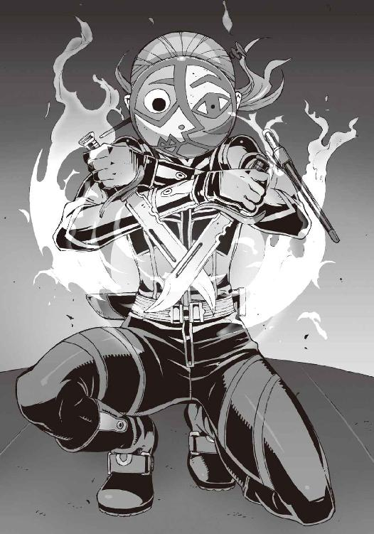
「夏目くん、伏せて！」
「えっ!?」
わけがわからないまま、嵩月に言われるままに僕は頭を下げた。その頭上を、灼熱の炎の奔流が駆け抜けた。嵩月の操る、摂氏数千度の地獄の業火だ。
それは巨大な火球となって、ボンネットに膝立ちの仮面の女を襲う。絶対によけられない一撃だった。そして彼女は、それをよけなかった。
二挺のナイフを交差させ、仮面の女は嵩月の炎を受け止めた。
地獄の業火をナイフで止めて、その両腕を、彼女は一気に広げた。風圧で炎は十字に切り裂かれ、そして──
『うそっ!?』
「かき消した!?」
操緒と環緒さんの悲鳴が重なった。
嵩月が、唖然とした表情でそれを見ていた。仮面の女はナイフの一閃で、嵩月の炎をかき消してみせたのだ。でたらめにもほどがある。
「冗談じゃないわよっ......！」
環緒さんが恐怖に声を引きつらせ、漆黒の弾丸を乱射した。
それは面白いように命中した。着弾の衝撃を受けて、仮面の女の身体が、そのたびに揺れた。彼女の黒いライダースーツに、何発分もの弾痕が穿たれる。が、それだけだ。
車のボンネットにナイフを突き立て、彼女は平然と僕たちを睨みつけている。
『き......効いてない!?』
操緒が涙声になって環緒さんにしがみつく。僕は恐怖で言葉をなくしている。
仮面の女はＢＭＷのボンネットを、ざくざくとナイフでめった刺しにする。
キャベツのようにみじん切りにされたボンネットを残して、彼女はふわりと跳躍した。
そのまま車から転げ落ちる──と思われたとき、疾風とともに飛来した影が、仮面の女を拾い上げた。その姿に気づいて、僕は、はうあっ、と間抜けな声を漏らす。
「──風獣!?」
一度は引き離したはずの真日和の使い魔が、背後からＢＭＷに肉薄している。仮面の女に気を取られて、速度が落ちていたせいだ。
「う、ヤバ......逃げ切れないかも」
環緒さんが追い詰められた表情で呟いた。
ＢＭＷのエンジン出力が、やけに不安定になっている。仮面の女の攻撃で、なにやら深刻な障害が発生しているらしい。ガスが漏れるような不安な音が聞こえてくるし、うっすら白煙も噴いている。これって相当ヤバいんじゃなかろうか。
「どうなってんのよ!? あんな未来世界の殺人ロボみたいなのを相手にどうしろって......」
環緒さんが必死でアクセルを踏みこむが、スピードが乗らない。明らかに出力が落ちている。
『どうする......智春？』
操緒が僕の耳元で訊いてきた。車を止めて外に出れば、機巧魔神を喚び出すことができる。そのことを言っているのだろう。
しかし、あの人間離れした仮面の女と風獣をまともに相手して、勝てる気はしなかった。それに環緒さんや嵩月を、これ以上は戦闘に巻きこみたくない。契約者を持たない彼女たちが悪魔としての能力を使えば、非在化の危険が高まるからだ。
しかしこのままでは、環緒さんは間違いなく敵の手に落ちる。
どうすりゃいいんだ、と僕が頭を抱えたとき、
「──あ！」
嵩月が、息を呑むようにして叫んだ。彼女が見ていたのは、僕たちの進行方向。山道を抜け、市街地に向けて道路幅が広くなる。そのすぐ先の空だった。
街灯の光に照らし出されて、巨大な鳥が舞っていた。水晶に似た透きとおった翼を持つ鳥だ。その翼長は余裕で十メートルを超え、周囲を白く冷気の霧が覆っている。
「使い魔が、もう一体!?」
環緒さんが、悲鳴を上げた。
「──鳳島氷羽子!?」
僕は全身の血が音を立てて引いていくのを感じた。冷気をまとう巨大な妖鳥。氷の不死鳥。
その上に立つほっそりとした人影に気づいて、声が詰まる。
ゴス風のド派手なファッションに身を包んだ、黒髪の美少女。その手には透きとおった氷の薙刀が握られている。ヤバいヤバいヤバいヤバい。彼女だけは最悪だ。もしかしたら真日和の雇い主と、あの女の契約者は同じ人間なのか──!?
「まずいっ......環緒さん、スピード上げて！ 逃げて！」
「え、なに!? そんなヤバい相手なの!?」
驚いて環緒さんが振り返る。僕は強張った顔でうなずいた。
「極めつけに......！」
氷の不死鳥の上で、氷羽子が嫣然と微笑んだ。
彼女の使い魔が、一度だけ翼を羽ばたかせる。その翼から放たれたのは、子どもの背丈ほどもありそうな巨大な氷の羽根だ。その先端は鋭く尖って、氷柱となって道路に突き刺さる。
「ちょ......ちょっ!?」
無数の氷柱に進路をふさがれて、環緒さんが取り乱す。
「ふーっ！」
威嚇中の猫に似たうなり声を上げ、嵩月が僕の肩越しに爆炎を放つ。
炎の奔流が氷柱を一瞬で蒸発させて、進路を開いた。溶け残った氷柱に車体をぶつけながら、ＢＭＷはかろうじて氷羽子の攻撃を突破する。
「なんなのよ、あの女!?」
悠然と空を舞う氷羽子を睨んで、環緒さんが顔を歪めた。操緒もまったく同じ表情で、
『加賀篝が回収しようとしていた〝一巡目の世界〟の遺産を奪ったのも彼女なの──』
「......なるほどね。あの子には、このメモリを欲しがる理由があるわけか」
環緒さんの瞳が、一瞬、醒めた色の光を放つ。
「だったら尚更こいつを渡すわけにはいかないのよね......」
『って、お姉ちゃん......いくらなんでも敵が多すぎるんじゃないの......どうすんのよ!?』
操緒が声を低くして訊いた。
使い魔が二匹と、契約者持ちの悪魔が一人。そして化け物じみた戦闘力を持つ仮面の女。いくらなんでも僕たちだけでは荷が重すぎる。あんな連中を相手にどうにかできるとしたら、洛高の生徒会長クラスの人間だけだろう。
これはもうダメかもしれんなあ、と僕がナチュラルに絶望を覚えたとき、足下で音楽が聞こえてきた。携帯電話の着信音。僕がさっき落とした携帯が鳴っている。
「......朱浬さん！」
液晶画面に表示された名前を見て、僕は思わず歓声を上げた。電話口からいつものおっとりした声が流れ出す。その声が今は異様に頼もしく聞こえる。
『はぁい、トモハル......どうやら無事に環緒さんに会えたみたいね？』
「そうそう、そうなんですけど、そのせいで今ちょっとヤバいことに──」
言いかけた瞬間、ＢＭＷの車体が大きく跳ねた。今度は、真日和の使い魔の攻撃だ。突き上げるような衝撃を喰らって、僕はくぐもった悲鳴を洩らした。腰にきたぞ、今の攻撃は。
『──状況はだいたいわかってるわ。なんか愉快なことになってるわね』
うふふふふ、と電話の向こうで朱浬さんが笑う。やたら愉しそうなその声の響きに、僕は嫌な予感を覚えた。彼女があんなふうに笑うのは、なにか過激なことを考えているときなのだ。
『その道、もう少ししたら右手に廃工場が見えてくるから──そこに入ってくれる？』
朱浬さんが、薄笑いを含んだ声で言った。
確認する。たしかにそれらしき建物が見える。
「え？ でも、その先って行き止まりなんじゃ......」
廃工場の裏手は切り立った崖になっていて、車が通れそうな道はどこにもない。そんなところに逃げこんだら、追い詰められるだけではないのだろうか。
朱浬さんもそれは否定せず、
『うん。でも、そこに呼んどいたから』
「呼んだって、誰を？」
『助っ人』
一方的に電話が切れた。僕は呆然と電話機を見つめた。いつものことだが、まったくわけがわからない。しかし迷っている時間もない。僕は言われたとおりに廃工場の敷地に入るようにと環緒さんに告げ、
「助っ人って誰？ 洛高生じゃないわよね？」
環緒さんが首を傾げて訊き返す。そういえばそうだった。このあたりから洛高までは、まだ二十キロ近くは離れている。空を飛べる使い魔を持ってなければ、こんな短時間で、ここまで来ることはできないはずだ。
『──他校の生徒ってことかも』
操緒がぽつりと呟いた。僕は困惑気味に記憶を辿る。たしかに、もともとこのあたりに住んでる生徒なら、待ち伏せすることもできるだろうが──
「だけど、あんな化け物に対抗できそうな他校生の知り合いなんていたっけ......？」
『んー......さあ？』
僕の問いかけに、操緒も腕を組んで考えこむ。その直後、環緒さんが短く悲鳴を上げた。
「しまっ......」
氷羽子の使い魔が放った氷柱が、ＢＭＷのボンネットを貫いていた。エンジンの直撃は免れていたが、氷柱はフェンダー部分を貫通して、右の前輪に突き刺さっている。
コントロールを失った車体は呆気なくスピンした。
タイヤが横滑りする耳障りな音をまき散らしながら、僕たちを乗せたＢＭＷは、奇しくも目的の廃工場の敷地へと突っこんでいった。そしてコンクリートブロックの壁に激突して止まる。
なぜか助手席側のエアバッグだけが作動した。爆発的に膨張したエアバッグ本体に僕はしこたま鼻先を打ちつけた。軽い脳震盪を起こして、くらくらと視界が揺らいだ。
幸い、たいしたスピードではなかったので怪我はない。しかしＢＭＷの車体は完全に潰れた。
逃げられない僕たちを取り囲むようにして、真日和の風獣と、氷羽子の不死鳥。そして、仮面の女が近づいてくる。
環緒さんの反撃を警戒しているのか、彼らの動きは慎重だった。
置き去りにされたコンテナや、積み上げられた鉄骨を盾にして、ゆっくりと距離を詰めてくる。そんな彼らの眼前で、そのコンテナや鉄骨が爆発した。
「──!?」
氷羽子たちの表情に、動揺が波紋のように広がった。
爆弾が仕掛けられていたわけではない。そんなものがあれば、使い魔たちが気配に気づかないはずがない。そうではなく、何の変哲もない錆びた鉄骨やコンテナ、それ自体が爆弾と化して爆発したのだ。至近距離からの爆炎に、使い魔たちがたじろぎ、後退して距離を取る。
燃え上がる炎で煌々と照らし出された廃工場の敷地。
人型の巨大な影と、それを従えた小柄な少女の姿が現れる。
「こんな街中で、使い魔を戦闘に使たらあきまへんえ」
朗らかな笑い声と、どこかパチモン臭い京都弁の声が聞こえてきた。その声の主を僕たちは知っていた。小柄な少女の見慣れない制服の胸元には、ＧＤと刺繍されたエンブレム──
「学生連盟......武装生徒指導員──!?」
環緒さんが唖然と呟いた。
○
炎の照り返しを浴びながら立っていたのは、純白の機巧魔神だった。
細身の機体に巨大な籠手を装備して、演操者の少女を守るように立っている。
「千代原さん!?」
大破したＢＭＷから這い出して、僕は彼女の名前を呼んだ。
千代原はる奈と、彼女の機巧魔神──《亜鉛華》だ。どうやら彼女の本来の所属校は、この近くにあったらしい。
「あら、夏目くん......お久しゅう」
はる奈は僕の姿に気づいて、にこやかに目を細めた。
余裕めかした態度だが、その間も彼女は真日和たちの動きをしっかり警戒している。隙がない。彼女たち武装生徒指導員とは、学生連盟加盟校の中でも、最強クラスの機巧魔神使いで構成された実戦部隊の隊長格なのだ。
「千代原さん、なんでここに？」
「通報があったんどす。学校外で演操者や契約者が起こした事件の始末は、ウチらＧＤの管轄ですさかいに」
そう言ってはる奈は、無造作に前に歩み出た。しかし、氷羽子たちにも引き下がる素振りはない。真日和の使い魔が低く身構え、仮面の女がナイフを抜く。
「おやおや......相手がＧＤと知った上で戦り合うつもりですのん？」
はる奈はむしろ愉快そうに笑った。
操緒が、ちょうど正面にいた真日和を、苛立ったように睨みつけ、
『ちょっと、真日和......あなた、なんのつもりなの!? 今度は誰に雇われたのよ!?」
しかし真日和は答えない。特徴的な細いタレ目をますます細くして、困ったように眉を上げただけだ。代わりに口を開いたのは、氷羽子だった。
「夏目さま、水無神環緒の身柄を渡してくださいまし」
「......環緒さんを？」
予想された要求だったが、実際に聞かされると、やはりその言葉には僕を動揺させるだけの威力があった。人違いやなにかの間違いではなく、氷羽子たちは環緒さんを狙っているのだ。操緒の実の姉を。
「それができないのでしたら、心苦しいのですが、鳳島は皆様を排除しなければなりません」
氷羽子は静かに呟いた。それはまぎれもない最後通牒だった。
「......彼女は、わたしが」
僕の耳にだけ聞こえるように、嵩月がそっと呟いた。彼女の掌の中にはすでに、灼熱の炎が小さく渦を巻いている。
「嵩月......」
僕は激しい葛藤を覚えた。できることなら、彼女を氷羽子と戦わせたくない。しかし環緒さんを氷羽子たちに渡すわけにもいかない。はる奈の《亜鉛華》は強力な機巧魔神だが、いくらなんでも氷羽子たち全員を同時に相手するのは無理だろう。
嵩月も環緒さんも救う方法は、たったひとつ──
僕が《鐵》を喚び出して、自分で氷羽子たちを倒すしかない。
しかし相手は機巧魔神ではないのだ。真日和や氷羽子の使い魔はともかく、生身の氷羽子や仮面の女を、《鐵》の拳で攻撃できるのか──？
殺してしまうかもしれないのに？
そんな僕の迷いを嘲笑うように、最初に動いたのは仮面の女だった。コンバットナイフの二刀流で、真っ直ぐ環緒さんのほうへと駆け寄ろうとして、
「──亜鉛華」
はる奈の呟きとともに放たれた糸が、仮面の女に巻きついた。白い機巧魔神の腕から、細いコードが蜘蛛の糸のように伸びて、仮面の女を縛ったのだ。
その糸を切断しようとして、仮面の女は動きを止めた。はる奈は満足そうにうなずいて、
「動いたらあきまへんえ。亜鉛華の糸は導火線。切断されたところから点火して、巻きついたものを爆発させます──人間の身体も例外ではおまへんさかいに」
そうか──と僕は感動に身震いした。その手があったか。
《亜鉛華》の糸は、巻きついたものを爆発させる。しかし、それは導火線である糸が切れたときだけだ。はる奈が自ら糸を切断するか、敵が誤って糸を切らない限り、爆発することはない。その能力ならば、機巧魔神でも生身の人間を傷つけることなく捕らえることができる。
「──参ります」
動きを封じられた仮面の女を冷ややかに眺めて、氷羽子が跳躍した。氷の薙刀を振り上げて、ＢＭＷから這い出した環緒さんに襲いかかる。
「させないっ」
その攻撃を受け止めたのは、嵩月だった。嵩月の腕に握られているのは、灼熱の炎の刀。氷の薙刀と炎の刀が激突し、接触した部分が小規模な爆発を起こした。互いに武器を構え直し、背格好のよく似た二人の少女が睨み合う。
もちろん氷羽子の使い魔は、それを黙って見ていたわけではない。氷の翼を広げて舞い上がり、凛冽な冷気の息を吐く。
「くっ──来い、鐵！」
もはや迷っている余裕はなかった。
僕の叫びに応じて、隣に浮かんでいた操緒の霊体がかき消えた。
そして僕の足下の影の色が変わった。
闇よりもさらに暗い深淵の虚無の色へと。その影をこじ開けるようにして、巨大な人形の腕が浮上する。漆黒の鎧に覆われた機巧魔神の腕が──
天空に向けて突き出した《鐵》の拳から、濃密な闇が洩れ出した。
それは闇色の球体へと姿を変えた。機巧魔神の重力制御が生み出した超重力の砲弾だ。
「当たれっ......！」
《鐵》が重力球を撃ち放ち、それは周囲の大気を巻きこみながら、氷羽子の使い魔の純白のブレスと激突した。
重力球に呑みこまれて、冷気のブレスは消滅する。だが、氷の不死鳥はすでに重力球の進路上にはいない。直進する漆黒の砲弾を嘲笑うように旋回して、氷羽子の使い魔は、召喚主の命令を忠実に実行しようとした。すなわち環緒さんへと襲いかかる。
「こいつ──！」
《鐵》の左腕が新たな重力球を生み出して、氷の不死鳥を撃ち落とそうと狙いをつけた。それを突き飛ばすようにして、金色の獣が突っこんでくる。真日和の風獣だ。暴風をまとった体当たりをまともに喰らって、《鐵》の機体がよろめいた。
「真日和！」
漆黒の機巧魔神が、使い魔に向けて黒の拳撃を放つ。しかし風獣の動きは速かった。あっさりと《鐵》の死角へと回りこみ、無防備な背後へと風撃を叩きこむ。どうにかそれを防御しながら、僕は後退した。
べつに侮っていたつもりはないが、まともに戦うと、こいつも半端なく強い。強敵だ。
「夏目くん、彼女を渡すッス......これはあんたとは関係ない話ッスよ」
正面から《鐵》と対峙して、真日和が言った。なに言ってやがる、と僕は憤激した。
「関係ないことあるか。だいたい、なんで環緒さんなんだよ──彼女が持ってるデータが欲しいんなら、お得意の交渉でもなんでもすればいいだろ！」
その僕の言葉が終わるより早く、真日和を乗せた彼の使い魔が跳躍した。
残像を残すほどの圧倒的な速度で、僕たちの背後に再び回りこむ。
しかしその攻撃を僕は読んでいた。《鐵》の右腕で、重力場の防壁を展開。そして左腕で小規模な重力球を放つ。風獣本体ではなく、その足下の地面へと。
超圧縮された重力の砲弾で、風獣の着地点の地面が陥没した。
足場を失った風獣は、それ以上の攻撃を諦め、仕方なく距離を取る。
真日和は、少し驚いたように息を吐き、
「......強くなったッスね、夏目くん」
どこか晴れ晴れとした笑顔でそう言った。僕は投げやりな表情で、
「おまえんとこの会長なんかの相手をしてると、このくらいでないと生き残れないんだよ」
「はは......違いないッス」
真日和が肩を揺らして笑った。そして彼は、なぜか寂しげに視線を落として呟いた。
「だけど、それは何を犠牲にして手に入れた、誰のための力なんスか......？」
「......誰のための......力？」
思いがけない真日和の問いに、僕は戸惑う。
真日和のタレ目には、いつになく真面目な光が宿っていた。
「その女を、渡してください。夏目くんが彼女を守る理由はないんスよ」
まるで僕を気遣うような口調で、真日和が告げる。僕はさらに困惑し、
「どういう意味だよ、真日和......おまえ、なにを知って──」
言いかけた僕の眼前を、なにかが風に舞ってふわりと通り過ぎた。
それは砕け散った氷の欠片。そして炎の破片だった。
無数の氷柱を鎧のようにまとった氷羽子と、全身を炎に包んだ嵩月が、凄まじい勢いで切り結んでいた。二人の武器がぶつかるたびに、凄まじい魔力が放出されて、氷片と炎が飛び散った。それは彼女たちの生命力そのものだった。そして、この世界から彼女たちが受ける反動の大きさをも現している。
「嵩月......！」
苛烈過ぎる二人の戦いに、僕はどうしようもなく動揺した。今すぐに彼女たちを止めなければならない。だが、どうすれば今の二人を止められる──？
「どくッス、夏目くん──彼女たちを止めるには、その女を俺らに渡すしかないッス。それとも夏目くんが鳳島氷羽子を攻撃するッスか？」
真日和が淡々と問いかけてくる。僕は唖然として、その質問を繰り返す。
「......僕が......攻撃する？ 鳳島を......」
氷羽子の使い魔──氷の不死鳥は環緒さんと戦っていた。
正確には、環緒さんは主に逃げ回っているだけで、妖鳥を攻撃しているのは、はる奈の機巧魔神だ。環緒さんを傷つけないように命令されているのか、はる奈の一方的な攻撃に、氷羽子の使い魔はかなり手こずっている。
そして氷羽子は、嵩月との戦いに完全に意識を奪われていた。
嵩月に気を取られている今ならば、簡単に氷羽子の不意を衝けるはずだ。僕は氷羽子を倒すことができる。その機会が与えられている。
しかし僕は動けない。生身の氷羽子への攻撃を、《鐵》に命じることができない。
そんな僕の戸惑いを衝くように、真日和が叫んだ。
「ヴィヴィアン──！」
真日和の使い魔が、圧縮された大気の弾丸を吐き出した。
「しまっ──」
風獣の攻撃は、僕を狙ってはいなかった。それならばまだ防ぐ手段があった。だが風獣が狙っていたのは、環緒さんだ。
「......っ！」
予想外の方向からの不可視の攻撃をまともに喰らって、環緒さんは声もなく吹き飛んだ。そのまま地面を転がって、彼女はぐったりと動きを止めた。
「真日和っ......！」
僕は怒声を上げた。しかし真日和は悪びれもせずに笑った。
「まだまだ甘いッスよ、夏目くん。その甘さ、いつか命取りに──」
その笑顔が途中で引きつった。真日和と彼の使い魔の全身に、どこからともなく伸びてきた純白の糸が絡みついたのだ。
「勝ち誇るのはまだ早よおますえ」
はんなりとした笑みを浮かべて、はる奈が告げる。《亜鉛華》の糸は、投網のように広がって、完全に真日和と風獣を捕らえていた。
真日和の使い魔がどれだけ敏捷でも、この状態から抜け出すことはできない。下手に動けば、主人もろとも爆発する運命が待っている。
「さて......ほな、大人しく降伏してもらいまひょか」
はる奈は微笑みを絶やさずに、しかし有無を言わせぬ口調で告げた。真日和には拒否権は残されていない。逆らえば爆死するだけだからだ。残る敵は、氷羽子と彼女の使い魔だけだ。
そう思って、僕が真日和に背を向けようとしたとき──
「............」
仮面の女が、無言でナイフを構えた。
はる奈が鋭い声で警告した。
「あきまへん。この導火線を切断しはったら、あんた、爆発しますえ。ウチかて、その爆発は止められへん。死にたなかったら──」
「............」
仮面の女は、はる奈の警告を無視した。コンバットナイフを振り上げて、自分の身体を縛っていた糸を躊躇なく切断する。はる奈の表情が強張った。
切断された糸の断面が発火して、その炎は一瞬で仮面の女まで達した。
爆発する──はる奈も、僕もそう思って身構えた。
しかし、爆発は起きなかった。
機巧魔神《亜鉛華》の物質爆破能力は不発だ。能力が無効化されたのだ。
「え......!?」
はる奈の一瞬の戸惑いの隙を衝いて、仮面の女が駆け出した。疾走を続けながら、彼女は、舞うように回転し、《亜鉛華》の糸を片っ端から切り裂いていく。
「その能力......あんた、まさか!?」
はる奈の表情が、驚愕に歪んだ。
仮面の女が、十分な助走をつけて空中に跳んだ。
そして彼女は両腕のナイフで、《亜鉛華》の左腕に斬りつけた。コンバットナイフの分厚い刃が、鎧の継ぎ目に突き刺さる。
機巧魔神の鎧の表面に、虹色の魔法陣が浮かび上がった。
魔力によって展開された、護法結界だ。機械仕掛けの人工の悪魔である機巧魔神は、ただの兵器とは違う。その機体は結界に保護されて、通常兵器の攻撃を一切受けつけない。
だがしかし、仮面の女のナイフは、その結界をやすやすと切り裂いた。
《亜鉛華》の巨大な腕が、肘関節から切断されて──落下した。
左腕を失った純白の機巧魔神が、機体を震わせて苦悶の咆吼を上げる。
「護法結界を切り裂いた──!?」
僕は、そのときようやく仮面の女の正体に気づいた。
嵩月の炎を消し飛ばし、環緒さんの弾丸を受けても平然としていた理由も理解した。彼女と同じ能力の持ち主を知っていたからだ。
元演操者の魔法無効化能力──！
「失礼するッス！」
《亜鉛華》が左腕を破壊されたことで、その左腕に拘束されていた真日和と、彼の使い魔が自由になっていた。彼らは巻きついた糸をふりほどき、倒れたままの環緒さんへと疾走した。
咄嗟にそれを阻止しようとした僕の目の前に、巨大な妖鳥が舞い降りてくる。
氷羽子の使い魔。氷の不死鳥だ。
妖鳥が氷の羽根を飛ばし、その攻撃を防ぐために《鐵》は動けない。
その間に真日和の使い魔は、環緒さんの許に駆け寄って、彼女を咥え上げようとしていた。
間に合わない──！
僕が絶望を予感したその瞬間、その僕たちの遥か頭上から──
「トモハル、奏っちゃん！ 退がって──！」
「え!?」
聞き覚えのある声がした。
淡く輝く月を背景に、黒いコートを着こんだ長身の少女が飛んでいた。彼女の腕には巨大な回転式機関砲。そして彼女の背中には、六枚翼の飛行ユニットが装着されている。
その飛行ユニットに満載されているのは──ミサイルだった。数え切れないほど大量の空対地ミサイルが、一斉にルビー色の精密誘導用レーザーを放ち、
「発射──っ！」
轟音とともに撃ち出され、
そして頭上から僕たちに降り注いだ。
「う、うわあああああああああっ！」
流星のように降り注いだミサイルの大群は、一斉に着弾して爆発を起こした。
四方から押し寄せる容赦のない爆風に、僕は翻弄されて身動きできない。
それはあまりにも無茶で、無謀で、非常識で、デタラメな攻撃で、だからこそ戦い慣れした氷羽子や真日和や仮面の女も、どうすることもできなかった。轟音と爆煙と降り注ぐ破片。もはや目の前でなにが起きているのかもわからない。
こんな無茶苦茶なことをする心当たりは、知り合いの中に一人しかいなかった。
「──朱浬さん！」
舞い降りてくる一人機甲師団みたいな少女を見上げて、僕は叫んだ。
「はぁい。どうにか間に合ったわね」
肩のあたりでばっさり切り落とした髪と、真紅の瞳。科學部部長代理の黒崎朱浬は、どこか場違いなおっとりした笑顔でうなずいた。
どう見ても無差別爆撃にしか思えなかったが、しかし、いちおう敵味方の区別はつけていたらしい。あれだけのミサイルが降り注いだにもかかわらず、僕や嵩月、はる奈は無事だ。
環緒さんも気絶したままだが、無事だった。仰向けの彼女の隣に舞い降りて、朱浬さんは、油断なく機関砲を構えた。どう見ても女子高生の持ち物ではなかったが、すっかりそれを見慣れてしまった自分が少し哀しい。
爆煙が、晴れていく。
最初に見えたのは翼だった。白い冷気の霧をまとった氷の翼。氷羽子の使い魔だ。
使い魔の脚を椅子代わりにして、優雅に腰掛けている氷羽子の姿もある。
少し離れて真日和と風獣。そして仮面の女も無傷だった。
「さすがにあの程度で終わりってわけにはいかないか......どうする？ まだやる気、ある？」
うふふふふ、と異様に愉しそうに笑いながら、朱浬さんが機関砲の引き金に指をかけた。
氷羽子が音もなく薙刀を構え直す。
空気がねっとりと糸を引くような、息苦しい緊張感が高まっていく。そして、
「──ヒワコ」
仮面の女が、初めて声を出した。氷羽子の端整な顔に、一瞬だけ不満げな表情がよぎったが、結局、彼女は無言で武器を収めた。真日和がホッとしたように息を吐くのが見えた。
氷の不死鳥が一度だけ大きくはばたいて飛翔する。真日和の使い魔が、仮面の女を拾い上げ、そしてそのまま風に乗って疾走を始めた。
彼らの姿が見えなくなるまで、ほんの数秒もかからなかった。
○
極度の緊張が解けると同時に、忘れていた吐き気が戻ってきた。排水溝の上で背中を丸めて、僕は胃液の逆流するヤな感触に苦悶する。
心配そうに近づいてきた嵩月が、僕の背中をさすってくれていた。
決して恰好いい姿ではないので、できれば嵩月にはあまり見られたくなかったが、さすがに追い払うわけにもいかないので、僕は彼女にされるがままになっていた。背中に触れる嵩月の掌はひんやりとして心地よく、僕はものすごく微妙な感じの幸せを噛みしめる。
一方、操緒は心配するどころか、
『うっわ、情けないなあ。てか、さっき食べたの全部ゲロってるじゃん......もったいない！』
「......もったいないとか言うな。つか、見んな」
気を遣わないで済むのはありがたいが、もうちょっとなんか言い方はないのだろうか。
残りもののメロンソーダで口をすすぎ、僕は今イチさっぱりしない気分で車のほうに戻った。
朱浬さんのミサイル攻撃で、かつて廃工場だった場所は今、単なる瓦礫の山に変わっていた。
硝煙の臭いが消え残る爆心地近くで、はる奈が朱浬さんに話しかけている。
「おおきにな。ウチの借りにしといてな」
破壊された《亜鉛華》の腕に触れながら、はる奈が言った。朱浬さんは愛想よく微笑んで、
「いえいえ、それはお互い様ですから。それよりもさっきのアレ......何かご存じです？」
「元演操者のことどすか？」
はる奈が、軽く頬を膨らませて首を振る。
「残念やけど心当たりはあらしまへんな。けど、あれはただ者やおまへんえ。使い魔や機巧魔神の能力は通用せえへんし──あれとまともに戦えるのは、あんたか、橘高冬琉くらいやろね」
「......ですね」
朱浬さんは、特に謙遜するでもなくうなずいた。
かつての機巧魔神の持ち主──元演操者と呼ばれる人々は、あらゆる魔力を完全に無効化するという奇妙な体質を与えられる。一度でも機巧魔神を手に入れ、そして失ってしまった者は、もはや悪魔の力で自分の望みを叶えることができないのだ。
しかし、もしも生身で悪魔に匹敵する戦闘能力を持つ人間が、元演操者と化したなら──
その体質を逆に利用することで、その人物は使い魔や機巧魔神との戦いにおいて、圧倒的な優位を手に入れることになる。洛高第三生徒会の橘高冬琉は、そんな怪物の一人だった。
そしてあの仮面の女もまた、冬琉会長と同じ能力の持ち主なのだ。
「......難儀やね、彼女も」
はる奈はそう言って、同情するような視線を環緒さんに向けた。
環緒さんは大破したＢＭＷの後部座席に寝かされていた。
真日和の使い魔の攻撃を受けて気絶したあと、彼女は目を覚ましていないのだ。どうやら能力の使いすぎによる疲労が主な原因らしい。
呼吸も脈もしっかりしているし、頭を打ったわけでもないので、自然に起きるまで寝かせておいたほうがいい、というのが朱浬さんとはる奈の判断だった。
「鳳島氷羽子の追跡は、学生連盟にお任せしちゃっていいですよね」
「ま、そうなるやろね」
軽く肩をすくめて、はる奈が言った。いつもの余裕のある口調だが、明らかに顔が不機嫌だ。
「もともとあの子は、里見恭武の件で連盟にマークされてたし。今度はあの子の仲間がウチの亜鉛華の腕を斬り落として──これでお咎めなしっちゅうわけにはいかへんやろ。ＧＤとしてもメンツがあるしな」
「なるべく早く捕まえてくださいね──いろいろ気になることがあるので」
朱浬さんがめずらしく弱気なことを言う。はる奈は少し面白そうに微笑んで、
「護衛はほんまに要らへんの？ 瑤に頼んだったらええのに」
「うふふふふ、絶対ヤです！」
朱浬さんは引きつった笑顔で言い切った。学生連盟本部に連絡するというはる奈とはそこで別れて、朱浬さんが僕たちのほうに歩いてくる。
「トモハル、気分はもういいの？」
「ええ、まあ。なんとか」
「そ。似合うわね、そのＴシャツ」
朱浬さんが表情も変えずにそう言って、
「............」
僕は沈黙。この人の場合、皮肉ではなく本気でそう思っている可能性があるので、どう反応すればいいのかわからない。そして朱浬さんは僕の答えを待たずに、
「奏っちゃんは？」
「あ......平気です」
嵩月は、控えめにガッツポーズを作ってみせた。たしかに外傷はなさそうだったが、彼女の服はあちこち破れてボロボロになっていた。氷羽子との戦いの影響だ。その姿だけで、二人がどんな熾烈な戦いを繰り広げていたのかよくわかった。あちこち肌が露出して、目のやり場に少し困る。
朱浬さんは軽く溜息をついて、
「その恰好じゃタクシーってわけにもいかないわね。車を調達してきといてよかったわ」
「車？」
廃工場の敷地の入口に停められていた車に気づいて、僕は首を傾げた。普通の国産ワンボックスカーだった。僕がいろいろリバースしている間、朱浬さんの姿が見えないと思ってたら、こんなものを用意していたのか。
「......この車、どうしたんですか？ 朱浬さんの車じゃないですよね」
「違うよ。持ち主は誰か知らない人」
「え？」
「国道沿いに違法駐車してたから、撤去してあげたの。先に違反してるのは持ち主だし、べつに盗まれても文句は言わないでしょ」
「いや......文句言わないってことはないと思うんですけど」
いちおう弱々しく反論して溜息をつく。また盗難車か。まさか一日で、二度も盗難車に乗る羽目になるとは思わなかった。逮捕されたら余罪とかいろいろ追及されそうだ。
「......そういや、運転は誰がするんです？」
気絶中の環緒さんを新たな車に運びながら、ふと思いついて訊いてみる。
「べつに免許がなくても車は動くのよ」
というのが朱浬さんの答えだった。訊かなきゃよかった、と僕は深く後悔する。
『で......結局どこに行くことになったの？』
操緒が素朴な疑問をぶつけてくる。そういえば結局、環緒さんの次の隠れ家は決まってなかったんだったっけか。
「とりあえず鳴桜邸に戻りましょ」
運転席に乗りこみながら、朱浬さんが言う。
「え......ウチですか？」
「千代原はる奈が学生連盟を動かしてくれるって話だし、鳳島氷羽子もしばらくは大人しくしてるはずよ。今のうちに装備を整えておいたほうがいいでしょ」
「まあ......それもそうですね。とりあえず服も着替えたいし」
僕の呟きに嵩月も首肯する。環緒さんをどこかに送り届けるにしても、このボロボロの服のままでは、どうにもならない。普通に歩いているだけで警察に通報されそうだ。
「決まりね。行きましょ」
朱浬さんはそう言って、やけに慣れた態度で車を発進させた。免許が取れる年齢ではないはずなのに、環緒さんよりも遥かに運転が上手くて、それはそれで不安な気持ちになる。この人、いつもこんなことばかりやってるんじゃないだろうな。
『でもさ、よかったよね』
気絶している環緒さんの寝顔を眺めて、操緒が不謹慎なことを言う。僕は顔をしかめながら、
「よかったって......なにが？」
『お姉ちゃんを狙ってる相手がわかってさ。あの女──鳳島氷羽子』
「そうか......」
そういう考え方もあるな、と僕は思った。そういえば暮海崎の遺跡で、加賀篝から一巡目の世界の遺産を奪ったのも氷羽子だった。だから氷羽子が環緒さんのことを狙ってきても不思議なことはなにもない。環緒さんも言っていたが、彼女にはそうする理由があるのだ。
『ピカソ仮面のことはちょっと気になるけどね......どのみち真日和なんかを雇うってことは、そんな大きな組織が背後にいるってわけじゃないよね、きっと』
「わざとそう思わせようとしただけかもしれないけどね」
楽観的な感想を述べる操緒を脅かすように、朱浬さんが皮肉っぽく微笑んで告げた。
『あー......そうか......』
少しがっかりしたように肩を落とす操緒。あまり仲のよくない姉妹だが、いちおう彼女なりに環緒さんのことを心配してはいるらしい。
「で......そろそろ、なにがあったのか説明してもらえると嬉しいわ」
朱浬さんが、のんびりした口調で訊いてくる。
僕たちは道すがら、環緒さんから聞いた話を説明した。途中でいろいろ刺激的な出来事があったせいで、全員かなり記憶が混乱していたが、三人がかりでどうにか情報を再現する。
曰く、環緒さんは、家系とは無関係に突然に悪魔化した人間であること。
曰く、環緒さんは、この世界の跳躍に必要な座標とやらのデータを持っていること。
そして、その座標とやらは、五年前に一度使われたということ。
「......五年前？」
それまで黙って話を聞いていた朱浬さんが、初めて表情を動かした。いつもの伊達メガネに指先で触れながら、
「ああ、そうか......そういうこと」
「え？」
思いがけない朱浬さんの反応に、僕たちは戸惑った。なぜそこで納得する？
しかし朱浬さんは、長考中のプロ棋士のような遠い目つきになって独り言を呟き続け、
「だから彼女の写真はなかったのか......待って、だとしたら、彼も......ああ......！」
「あの......朱浬さん？」
漠然とした不安を感じて、僕は朱浬さんの横顔に声をかけた。
そのとき後ろの座席で、もぞもぞと誰かが起き上がる気配があった。
「ん、んん......」
嵩月に膝枕されていた環緒さんが、まだ少し寝ぼけた表情で上体を起こしている。ぐしぐしと乱暴に目を擦りながら顔を上げ、
「......あたたた、どこ？ ここ？」
見覚えのない車内を見回して、彼女はふわあ、と大きなアクビを洩らした。妹によく似て、緊張感のない人だ。
「もうすぐ、うちの下宿先に着くところです。昔、兄貴が住んでた洋館なんですけど」
「ああ、鳴桜邸？ そっか、この辺りにあるんだっけ？」
目の端に浮いた涙を拭いながら、環緒さんが言った。僕はうなずき、
「ですね。この道を真っ直ぐ進んで、あの交差点を過ぎたところ......に──」
ちょうど見えてきた古い洋館の屋根を指さし、説明しようとしたところで、それを見た。
一瞬の眩い閃光が、鳴桜邸の窓という窓から放出された。
それはたちまち炎の形に姿を変え、黒煙と、飛び散った煉瓦によって覆い隠された。
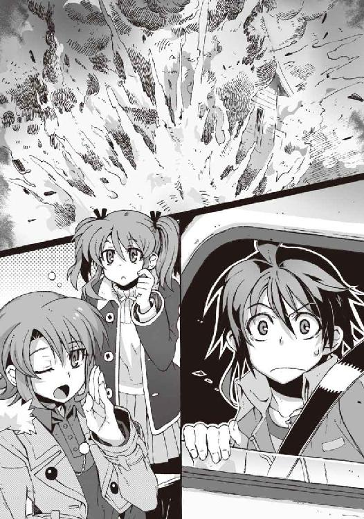
一瞬遅れて轟音が届いた。大気がびりびりと震動して、地面が揺れる。
そして屋根が崩れ落ちた。バランスを崩した積み木のお城のように、建物がゆっくり崩壊していく。もくもくと空に伸びていくのは、キノコ雲のような形をした爆煙だ。
「って、ええええええっ!?」
僕はわけもわからず絶叫した。たしかにそこには僕の下宿先の古い一軒家があって、それがなぜか炎と煙をまき散らして──
『爆発......したね』
操緒が冷静に呟いた。環緒さんは、きょとんと目を瞬きながら、
「あれって鳴桜邸......だよね」
「あー......」
嵩月がぽかんと目を丸くしている。朱浬さんは車を道路脇に寄せながら、
「かすかにアンモニア臭がするわね......鉱山作業用のアンホ爆薬かしら。あれって材料がどこでも手に入るから、犯人を特定しづらいのよね」
って、ちょっと待ってくれ。
「そんな客観的に分析してる場合じゃないですよ......め、鳴桜邸が......」
爆発して吹っ飛んだ。本当に一瞬の出来事だった。高層ビルの爆破解体工事を見ているようだった。ガス漏れとか手抜き工事とか、そんな生易しいものではなくて──爆破テロだ。
「これはさすがに警察に通報されちゃったかな......いったんここは離れたほうが良さそうね」
朱浬さんがそう言って、車を乱暴にＵターンさせる。
「え......だけど、犯人は？ いったい誰がこんな真似を......」
というか、僕は被害者だと思うのですが、なぜ警察に通報されて逃げなければならんのだ。
それはまあたしかに、あの屋敷の地下には、武器とか弾薬とか秘密の抜け穴とか、バレたら後ろに手が回りそうなものが大量に隠されていたのだが。
「たぶん、鳳島氷羽子のお仲間の仕業でしょ。実行犯は、たぶん真日和の殺人人形あたり──もしかしたら、人形が自爆したのかも」
「あ......」
あり得る。その光景が目に浮かぶ。
「だ、だけど何でうちの下宿を？」
「地下にある、科學部の武器庫を潰すのが目的だったんでしょ」
朱浬さんは、ほんの一瞬、ゾッとするような冷たい視線を、炎上する鳴桜邸の跡地に向けた。
「これは......たぶん宣戦布告よ。本格的な戦争になるかもね」
「戦争......？」
普通の高校生が口にするには、あまりにも場違いなその単語が、そのときやけに僕の記憶に強く焼きついた。
近くの高台から見下ろす鳴桜邸の建物は、完全に破壊されて、もはや原形をとどめていなかった。庭にある桜の大木だけが、ほとんど無傷で残されていて、それがなぜかひどく物悲しく思えた。住んでいたのは一年足らずだが、ボロくて古いあの建物に僕は愛着を感じていたのだ。
地下にある弾薬庫が誘爆したのか、屋敷が再び閃光とともに爆発する。
それを見た環緒さんが、車の窓に顔をおしつけて、他人事みたいなのんきな口調で呟いた。
「た〜まや〜♪」
勘弁してくれ、と僕は思った。
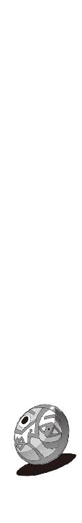
二章
車を乗り捨て、警察の検問をくぐり抜け──
ついでに駅のコインロッカーに預けていた制服を回収して、僕たちがその教会に辿り着いたのは、真夜中近くになってからのことだった。
「......前に来たときも思ったけど、相変わらずガラ悪い街だなあ」
周囲の街並みを見回しながら、僕はこっそり呟きを洩らす。
街灯の少ない薄暗い路地には、酒場の看板だけがやたらに目立っていた。道路には煙草の吸い殻や割れたガラスの破片が散乱し、たまに顔をボコボコに腫らした酔っぱらいが倒れている。
通行人のほとんどは、ド派手なコートを着た化粧の濃いお姉さんか、ごつい体つきの外国人だった。道の暗がりには、なにかヤバげなものを売ってそうな男が無言で突っ立っていて、めちゃめちゃ恐い。僕が落ち着かない態度でそれを眺めていると、
「あー......ごめんなさい」
なぜか嵩月が申し訳なさそうに頭を下げた。
操緒が不思議そうな顔で振り返り、
『なんで嵩月さんが謝るの？』
「あの......このあたりは庭場......なので、その、うちのお父さんの会社の......」
嵩月は歯切れの悪い口調で言った。
「庭場？ 嵩月の親父さんの会社って......」
僕は漠然と不安を感じながら思い出す。嵩月の親父さんというのは、黒塗りのベンツを乗り回し、強面の男たちに取り囲まれた──堅気ではない感じのオッサンだ。
操緒が少し声を潜めて、
『えーと、嵩月組の縄張りってやつ？』
「そうなのよ」
うなずいたのは朱浬さんだった。
「だから治安はあまりよくないけど、逆に安全だと思うわ。鳳島氷羽子も、嵩月組の縄張りで騒ぎを起こすのは避けたいと思ってるでしょうしね」
そう言いながら、朱浬さんは、教会の入口の扉を開ける。外国の映画に出てきそうな古い小さな教会だ。
「......ここが黒崎さんの自宅なの？」
建物に彫り込まれた十字架を、環緒さんが少し驚いたように見上げて訊く。
「意外ですか」
「ううん、似合うとは思うけど」
「......〝一巡目の世界〟のあたしは、どんなところに住んでました？」
朱浬さんが何気ない口調で質問を返した。
環緒さんは記憶を辿るように首を傾げて、
「ん、私はそんなに詳しく知ってるわけじゃないけど、たしか、どこかいいところのお嬢様で、双子の妹さんがいて、生徒会をやりながらモデルの仕事を......」
そこまで言ったところで、環緒さんは自分のミスに気づいたようにハッと表情を硬くした。
朱浬さんはおっとりと微笑んでうなずいた。
「なるほど」
「......意外に、人が悪いんだ」
環緒さんが、拗ねたように肩をすくめて言った。そのやりとりの意味が理解できずに、僕と操緒は顔を見合わせる。
礼拝堂を通り抜けると、その裏手は居住区になっていた。煉瓦造りのその建物の雰囲気は、爆破された鳴桜邸に少し似ていて、僕はちょっと気が滅入った。
建物には明かりが灯っていた。
「たっだいま。ニアちゃん、起きてる？」
朱浬さんが明るい声で呼びかけると、リビングから女の子が現れた。
ヌイグルミを抱いた小柄な少女だった。
金髪碧眼で、年齢は十歳前後。不機嫌そうな表情を浮かべているが、それを補ってあまりあるほどの美少女だ。中欧風の顔立ちや、人形のようなフリルの衣装は、この古い教会の建物によく似合っている。そのぶん彼女が胸に抱いているコアラのヌイグルミの姿が、異様に場違いに感じられた。見ただけで呪われそうな不細工なコアラなのだ。
「......遅かったな、朱浬。私はとてもお腹が減ったぞ」
弱々しい顔で朱浬さんを見上げて、少女は少し恨みがましい声を出す。
操緒が、驚いた顔で彼女を見返し、
『ニアちゃん、動き回って大丈夫なの？ 熱出して寝込んでたんでしょ？』
「ああ、平気だ。もう体調はなにも問題な......」
少女がそう言ってうなずこうとしたとき、
「なに、この子。この可愛い生き物！」
環緒さんが、少女をものすごい勢いで抱き寄せた。
無理やり頬をすり寄せてくる環緒さんに対して、本能的な恐怖を感じたのか、金髪の少女はじたばたと全身を揺すって、
「な、なにをする......離せ！ 吸うぞ、こら！」
「きゃー......日本語喋ってる！」
環緒さんは、何気に失礼なことを言いながら、少女──アニアの小柄な身体を抱え上げる。
とりあえず環緒さんを落ち着かせようと、僕はなるべく冷静な口調で、
「あの......その子はアニアといって、洛高に通ってる留学生なんですけど」
「洛高の留学生？ この小っちゃい子が？」
「ええ。兄貴の紹介でウチにホームステイしてて......環緒さんの居場所をつきとめたのも実は彼女が......」
「へー......へー......」
僕の言葉を、環緒さんは驚いたように目を丸くして聞いていた。
ようやく彼女から解放されたアニアが、うんざりしたように息を吐きながら、
「アニア・フォルチュナ・ソメシュル・ミク・クラウゼンブルヒだ。貴様が水無神環緒だな？」
「......クラウゼンブルヒって─運喰らいの悪魔の一族？」
少女の長ったらしい名前を聞いて、環緒さんが一瞬、真面目な表情に戻る。そして、
「あ、もしかして直貴が日本に連れてきたって言ってた......」
そう言いかけた環緒さんは、そこでふとアニアが抱いているヌイグルミに目を留めた。その不細工な外見に、笑い出す寸前のような表情を浮かべ、
「この趣味の悪い人形は？」
『......どうも』
「わっ」
いきなり喋り出したヌイグルミを見て、環緒さんが短く悲鳴を上げた。コアラは、いつもの目つきの悪い無表情のまま、丁寧に頭を下げ、
『科學部部長の塔貴也です。妹さんには、いつもお世話になってます』
「ぶ、部長？ これが？」
はーっ、と環緒さんは呆れたような溜息をついて、苦笑した。
「思ってた以上にカオスなことになってるみたいね、この世界は」
意外にあっさり納得した環緒さんを見て、やはり大雑把な人だなあ、と僕は妙に感心した。
アニアは、そんな環緒さんをしばらく呆れたように眺めていたが、
「やはり智春たちも一緒だったか......」
ふと僕に視線を向けて、なぜか厄介者を見るような表情を浮かべた。僕がここに来ることを予想していたような、彼女の口ぶりが少し気になった。
「やはりってどういう意味だよ？」
「鳴桜邸が爆破されたらしいな」
「え？」
「まったく、なんという不幸体質だ。あまり近寄るな。貴様の不幸が移る」
驚く僕を見返して、アニアが冷ややかに言う。
「なんでアニアが鳴桜邸のことを知ってるんだ......？」
「さっきからテレビのニュースでやってるぞ。現場からの生中継だそうだ」
「......テレビ中継!?」
僕はぎょっとしてリビングの奥を覗きこんだ。
つけっぱなしのテレビ画面には、見覚えのある景色が映っていた。鳴桜邸付近の商店街の通りだ。
そこには大勢の消防隊員と野次馬たち。そしてマイクを持ったレポーターが集まっている。
『──付近の住民の話では、この洋館では、これまでにも何度も同様の爆発事故が起きたことがあったそうで、不審な人物の出入りが目撃されたり、銃声らしきものが聞こえるなど、危険地帯として地元では広く知られていたそうです』
レポーターのお姉さんは、殊更に深刻な表情で、視聴者になにやら訴えていた。
僕は背中に汗が滲むのを感じる。ひどい言われようだったが、心当たりがあることばかりで反論できない。そして、
『現場からは大量の銃器や弾薬らしきものも発見されており、警察では建物の使用者である高校一年生の少年がなんらかの事情を知っているものとして、彼の行方を追っています──』
それが誰のことを言っているのか、すぐには把握できなかった。
理解するのを脳が無意識に拒否していたのかもしれない。
住宅街のド真ん中で民家が爆発して、その跡地から武器弾薬が出てきたら、それは当然、その建物の住民が疑われるだろう。しかもそいつが一人暮らしの高校生だったりしたら尚更だ。誰だってそいつが怪しいと思う。僕もたぶんそう思う。だがしかし、
『この高校一年生の少年って......智春のことだよねえ』
操緒がぽつりと呟いた。やっぱりそうなのか、と僕はうろたえた。いまだに状況がよくわかってないのだが、じわじわと焦りがこみ上げてくる。警察が僕を追っている？ それはもしかしてかなりマズイ状況ではないのだろうか。うわ。
『重要参考人ってヤツだよね』
操緒が僕の耳元に顔を寄せて、無責任に笑いながら囁いてくる。
「......なんでそんな嬉しそうなんだよ」
僕は情けない声で答えた。目眩がした。
○
なかば放心状態のまま、僕は、朱浬さん家の奥に案内された。そこで目にしたのは、些かショッキングな光景だった。
「......！」
『うわー』
嵩月が絶句し、操緒が小さく悲鳴を上げた。僕は無言のまま、部屋の入口で固まった。
部屋の中は意外に広かった。窓辺には色褪せたブラインドと観葉植物。中央には大きな応接セットとスチール机が置かれて、探偵事務所のような雰囲気を漂わせている。
そして部屋の中は、驚くほど──散らかっていた。
床一面に脱ぎ散らかした服が散乱し、新聞や雑誌や怪しげな薬品のビン、得体の知れない機械の部品が無秩序にそこら中に転がされている。
さすがに生ゴミは見あたらなかったが、ゴミ箱からは普通にゴミが溢れ出し、空のペットボトルや空き缶が僕たちの行方を遮っていた。
「うふふ......ちょっと散らかってるかもしれないけど、とりあえず座ってくつろいで」
朱浬さんは平然とそんなことを言うが、そもそも座れるようなスペースが見あたらなかった。これでちょっとということは、普段はもっとひどいということか？
僕は仕方なくソファの上の朱浬さんのコートをどけようとして、
「......うっ!?」
いきなりそこで洗いっぱなしの彼女の下着を見つけて硬直した。意外に清楚なデザインの花柄で、そのせいで余計に生々しく感じられた。なんなんだ、この部屋は。地雷原か。
「あ......う......」
ふと見れば、嵩月も困ったような顔で呻いていた。どうやら彼女も、なにかまずいものを見つけてしまったらしく、なぜか頬を真っ赤にしてうろたえている。
『まあ、あれだよね......朱浬さんにも欠点はあるってことだよね......』
操緒が嬉しそうな顔でそんなことを言う。たしかにそれはそのとおりだが、べつに知りたくなかったなあ、と僕は思った。
アニアや部長は、この部屋の惨状にも慣れているのか、慣れた様子でゴミをかき分け、平然と床の上に座っている。
「お手洗い借りるわねー」
環緒さんはあくまでマイペースを崩さず、勝手にバスルームの扉を開け、
「あら」
そこでちょっと驚いたように動きを止めた。バスルームには先客がいたからだ。
男物の服を着た、背の高い女性だ。少年のような髪型で、彫りの深い端整な顔立ちをしている。恐ろしくハンサムな少年のような少女だ。
鏡の前で髪型を整えていた彼女は、入ってきた環緒さんに気づくと、
「やあ......いらっしゃい。遅かったね」
男っぽく構えた口調でそう言って、平然と微笑んだ。奇妙な魅力のある中性的な笑顔だ。
「あなたは......？」
環緒さんが怪訝そうに小首を傾げ、その問いかけに、少年のような少女が答える前に、
「──瑤！」
朱浬さんが、何の警告もなく、自分の左腕に内蔵したショットガンをぶっ放した。
弾丸は、バスルームの鏡を粉砕し、シャワーカーテンを引きちぎったあげく、壁にめりこんで止まった。
撃ち出されたのは、暴徒鎮圧用の大口径のゴム弾だった。それが目の前をかすめていっても少女は表情ひとつ動かさず、
「......危ないな、朱浬。この家では、出会い頭にゴムスタン弾をぶっ放すのが、客人に対する挨拶なのかい？」
「誰が客人なのかしら？」
朱浬さんは銃口を向けたまま、引きつった笑顔を浮かべて言う。
「あんたなんかを呼んだ覚えはないわよ、瑤」
「久しぶりに会いに来た友人に、それは少し冷た過ぎるんじゃないかな？」
「あなたがいつあたしの友人になったのよ？」
朱浬さんが苛々と呟いた。
そんな朱浬さんの背中に怖ず怖ずと声をかけたのは、不細工なコアラのヌイグルミだった。
『すまない。彼女を家に入れたのは僕なんだが......』
「......はい？」
引きつった笑顔の朱浬さんに訊き返されて、不細工コアラが怯えたように後ずさった。
『いや、だって護衛に来てくれたっていうから......』
「護衛？」
『あ、ああ』
ほとんど命乞いをするような勢いで、不細工コアラが何度も頭を下げた。
洛高所属の武装生徒指導員──雪原瑤は、それを眺めてクスクスと笑いながら、
「はる奈に聞いたよ、朱浬。ずいぶん面倒な相手に狙われてるそうじゃないか。鳳島氷羽子と、所属不明の元演操者だって？」
「あのマロ眉......余計なことを......！」
朱浬さんがぼそりと文句を言った。僕たちが狙われていることを瑤に伝えたのは、どうやら千代原はる奈の仕業らしかった。はる奈としては気を利かせてくれたつもりなのだろうが、
「とにかく、あなたなんかに護衛してもらういわれはないわ。わかったらさっさと帰って」
朱浬さんが、なぜか頑なな口調で言った。
しかし瑤は気にした素振りもなく、
「ふーん......彼女が水無神環緒か。なるほど、妹によく似ているな──っと」
瑤が軽く上体を反らすと、その眼前を朱浬さんが撃った二発目のゴムスタン弾が横切った。
ゴムスタン弾はバスルームの窓を直撃して、窓枠ごとガラスを粉砕する。
「次は当てるわよ」
抑揚のない声で、朱浬さんが警告する。瑤は優雅に肩をすくめ、
「やれやれ......わかったよ。だけど本当にいいのかい？ 水無神環緒やほかの連中はともかく、そこの小さなレディは戦いに巻きこまれたら自分の身を守ることもできないんじゃないのか？」
そう言って瑤が見つめた先には、夜食のコンビニ弁当を頬張っているアニアの姿があった。
「ん......？」
唐突に話題にされて、金髪の幼い少女が怪訝そうに顔を上げる。
頬にご飯粒をつけた彼女を眺めて、そうなんだよな、と僕は溜息をついた。
今回の件では、アニアは基本的に部外者なのだが、僕たちと一緒にいると間違いなく彼女も巻き添えになる。実際、アニアがたまたま熱を出して朱浬さんの家に預けられていなかったら、鳴桜邸の爆発に巻きこまれて、彼女は命を落としていたかもしれないのだ。
だからといってアニアが帰るべき鳴桜邸はすでになく、彼女を一人で放り出すわけにもいかない。アニアはアニアで危険人物に狙われていたりするからだ。
そして朱浬さんは、強気な笑顔で瑤を睨み返し、
「生憎だけど彼女の護衛役には心当たりがあるの」
それを聞いて、瑤は面白そうに唇の端を上げた。
「ふうん......その言葉がただの強がりじゃなければいいけど。なにしろ、昔のきみときたら意地っ張りで泣きむ......」
瑤の言葉が終わらないうちに、朱浬さんのショットガンが火を噴いた。三発目のゴムスタン弾は瑤の顔面すれすれを通り過ぎて、彼女の前髪を揺らした。
瑤はやれやれと溜息をついて、
「じゃあ、そろそろ本気で退散するか。おっと、その前に、夏目クン」
「......はい？」
唐突に僕に歩み寄ってきた瑤が、僕の手になにかを握らせた。それは数字が書かれた小さなメモ用紙だった。そして彼女は僕の耳元に囁くように、
「これ、ボクの電話番号。困ったときにはいつでも電話しておいで」
そう言い残すと、唖然としている僕に手を振り、彼女は部屋を出て行った。
あまりにも洗練されたその行動に、僕は呆気にとられたまま、立ち去る彼女の後ろ姿を眺めた。もしも僕が女子だったら、今の一瞬で間違いなく恋に落ちていたと思う。
いや瑤もいちおう女性なので、どことなく矛盾しているが──
「なんというか、ムダに恰好いい人ですね......相変わらず」
ぼそりと呟いた僕を見て、朱浬さんが露骨に嫌そうな顔をした。
「なによ。トモハルまであいつの肩を持つわけ？」
「いや、そういうつもりではないですけど......でも、良かったんですか、アニアの護衛のこと」
瑤のことはさておき、アニアにも護衛が必要というのは事実だった。
彼女は運喰らいと呼ばれる珍しい種類の能力を持っているし、それとはべつに、氷羽子ではないほうの男の鳳島──鳳島蹴策にも狙われている。あの鳳島兄は、なぜかアニアのことを理想の妹と呼んで、しつこくつきまとっているのだ。
「いいのよべつに。ニアちゃんの護衛は、最初からほかの人に頼むつもりだったんだから」
朱浬さんは、まだ少し不機嫌そうな顔でそう言った。
「え、誰です。あ......冬琉会長とか？」
僕が真っ先に思いついたのは、アニアの友人でもある、洛高第三生徒会の会長だった。しかし朱浬さんは軽く顔を曇らせ、
「うーん......いや、あの人はマズイわね」
「そうなんですか？」
「鳴桜邸が吹っ飛ばされちゃったからね。あそこに住んでた生徒は科學部員で、隠してあった武器は科學部の持ち物でしょ......でもって科學部を管轄しているのは、第三生徒会なのよね」
「あ......」
「今ごろ、冬琉会長は、事件の揉み消し工作で護衛どころじゃないと思うのよ。あたしたちが下手に顔を出したら叩き斬られるかも......」
「そうかもしれないですね......」
なるほど、それはたしかにまずい。叩き斬られる、というのが、ただの冗談で済まないのが冬琉会長の恐いところだ。
「でも、ほかにアニアの面倒見てくれそうな人っていましたっけ？」
「も、もちろんよ」
朱浬さんがなぜか逡巡するように目を逸らした。僕たちは疑惑の視線で彼女を見る。まさか瑤に対する見栄だけで、護衛役の心当たりがある、などと言ったのではあるまいな。
朱浬さんは弁明するように慌てて首を振り、
「ホントよ。今からすぐに呼ぶから」
「はあ......」
携帯電話を取り出す朱浬さんを眺めて、僕は無意識に首を傾げた。
操緒が顔を近づけてきて、
『なんか......らしくないよね、朱浬さん』
「うん」
僕は同意する。いつも迷惑なほど余裕たっぷりの彼女が、今回はやけに動揺している。その理由はだいたいわかっていた。以前にも同じようなことがあったからだ。
雪原瑤が絡んでくると、朱浬さんは余裕をなくすのだ。
『きみたちは......黒崎くんが普段なにをやってるか知ってるかい？』
不細工なコアラのヌイグルミが僕たちを見上げて、部長の声で言った。
僕は操緒と顔を見合わせ、同時に首を振った。
『普段って、学校の外でってことですか？』
「いえ......そういわれると」
朱浬さんは、科學部の活動以外でも、たまに一人で危険な場所に出掛けて銃撃戦をしていることがある。しかし僕たちは、彼女がなぜそんなことをしているのか知らなかった。訊いても、いつもの余裕の微笑みで誤魔化されてしまっていたからだ。
不細工コアラはゆっくりとうなずき、静かに告げた。
『彼女は、本来ＧＤがやるべき仕事をやってるんだ......遺失した機巧魔神の装備を回収したり、演操者同士の戦いに介入して彼らを無力化したり』
「え？」
そんな馬鹿な、と僕は思った。ＧＤと呼ばれる連中は、学生連盟の加盟校の中でも、選りすぐりの戦闘力の持ち主だ。それだけに彼らに与えられる任務は過酷だ。凶悪な演奏者や悪魔に制裁を加えたり、あるいは危険な遺跡に潜入調査を行ったり。朱浬さんは、それを自分一人でやっていたというのか。誰に頼まれたわけでもなく──？
『なんでそんな危険なことをわざわざ......』
操緒が呆れたように呟いた。不細工コアラは、そのふざけた顔に似合わぬ真面目な口調で、
『雪原瑤を戦わせないようにするために』
『......雪原さんを......どうして？』
『雪原瑤の機巧魔神──白銀の副葬処女のことは？』
「......たしか、朱浬さんの妹さん......でしたっけ？」
僕は思い出す。朱浬さんとよく似た顔立ちの、髪の長い女性。
朱浬さんはあまり多くを語りたがらないが、機巧魔神《白銀》の体内には、彼女の双子の妹が封印されていたはずだ。
『機巧魔神が魔力を使えば、その代償として、生け贄である副葬処女の魂が失われる』
部長が素っ気なく呟いた。その言葉に僕はハッとした。副葬処女は、機巧魔神に捧げられた贄だ。機巧魔神が魔力を振るうたびに、彼女たちの魂は磨り減り、やがて消滅する。
『──黒崎くんの目的は、妹を機巧魔神の中から解き放つことだ。だから雪原瑤の機巧魔神に魔力を使わせたくないんだよ』
「あ......」
ＧＤの任務で出動すれば、瑤は機巧魔神を喚び出す可能性が高い。だから朱浬さんは彼女に先回りして事件を解決しようとしていたのだ。自らの身を危険に晒してでも──
朱浬さんが全身に仕込んだ大量のミサイルやショットガンは、そのための武器なのだ。
「......全然、知りませんでした。朱浬さんは、そんなこと......教えてくれなかったし......」
『うん』
部長は、尖った爪でカリカリと頭をかいた。朱浬さんが危険な活動をしていると知っていて、それを止められなかったことに、彼なりに責任を感じているのかもしれなかった。
それから部長は自分の腹のファスナーを開けて、中から小型のモバイルコンピュータを取りだした。インターネットに接続して、企業の製品カタログページを開き、
『まあ、それはともかくとして、先に確認しておきたいことがある。この写真の製品なんだが』
「あ......環緒さんが持ってたフラッシュメモリの写真......ですよね？」
細かいところまで同じかどうかはわからないが、見覚えのある形のメモリだった。そんなことより、ヌイグルミの腹の中からパソコンが出てきたことに僕は驚いていたのだが、
『うん。だけど、こいつはただのフラッシュメモリじゃない』
「はあ......」
そんなことを言われても僕にはよくわからない。マイナスイオンでも出てるのか？
『まずひとつ......この接続端子の形が普通のフラッシュメモリと違っているだろう？』
「そうなんですか？」
予想以上に地味な解答を聞かされて、僕は途方に暮れた。そんなのわかるわけがない。
『そうなんだよ。こいつは高速データ転送が可能な次世代規格のメモリなんだ。実際にはまだ規格が策定されたばかりで、市販されるのは早くても来年といわれていた。そして、こいつが本当に発売されることはなかった』
「え......でも」
『このメモリを製造した苑宮マイクロディスクという会社は、今はもう存在しないんだ』
「はい？」
『ＴＯＢでよその企業に買収されたんだよ。半年ばかり前に。買収した会社の名前はサエキ・エレクトロニクス工業』
「さ......佐伯？ ......ってもしかして？」
『うん。第一生徒会会長──佐伯玲士郎の親戚が経営している会社だ』
なんだそれ、と僕は混乱した。
環緒さんが持っているフラッシュメモリは、すでに存在しない会社が来年作る予定だった製品、ということか。歴史上存在しないはずのフラッシュメモリ。彼女は、それを持っているせいで氷羽子たちに狙われている──というのだろうか。
「佐伯家は、この世界では政財界に影響力を持つ名家だけど、それは彼らのバックにローマ・カトリック教団の対悪魔部隊である神聖防衛隊がついてるからなんだ。逆に言えば、悪魔と呼ばれる存在がいない世界では、彼らは今ほどの経済力を持ってなかったはずなんだよ」
「は？」
「つまり苑宮マイクロディスク社も買収されずに存続していた可能性が高いということになる。このメモリは、それ自体が、存在しないはずの〝一巡目の世界〟の遺産なんだ」
『なんで、うちのお姉ちゃんがそんなものを持ってるの？』
操緒が苛々したように部長を問い詰める。不細工コアラはゆっくりとうなずいて、
『存在しないはずの〝一巡目の世界〟から、これをこの世界に持ちこんだ者がいるのなら、その人物もまた〝一巡目の世界〟の出身ということになる』
『え......？』
あまりにも突拍子のない部長の言葉に、操緒が、ぽかんと間の抜けた表情を浮かべた。笑ってもいい場面かどうか量りかねている様子だった。
『お姉ちゃんが〝一巡目の世界〟の出身者？ どっかヨソの世界から来たってこと......？』
色素の薄い幽霊の少女が、軽く混乱した顔で、自分によく似た姉のほうを振り返る。
嵩月と二人でのんきに部屋の片付けをしていた環緒さんは、僕たちの困惑の視線に気づいて顔を上げ、
「あ、バレちゃった？」
悪びれもせずに、ぺろりと舌を出した。
○
いちおう天才少女であるところのアニアは、環緒さんの正体にとっくに気づいていたらしい。彼女は特に驚きもせずに、平然とコンビニ弁当を食べ続けていた。
朱浬さんは今も電話中。嵩月はそれなりに驚いていたようだが、とりあえず今は床に散らばる燃えないゴミを片付けるのが先だと判断したらしく、黙々とゴミ拾いを続けている。
そのため部長の言葉に真面目に動揺していたのは、結局、僕と操緒だけだった。
人々の意外なリアクションの薄さに部長は軽く落ち込んでいたが、そんなものを気遣う余裕は、僕たちには残されていなかった。
『バレちゃった......って、なんでそんな軽いノリなのよ!?』
操緒が、猛然と環緒さんに詰め寄って叫んだ。しかし環緒さんは表情も変えずに、
「べつに重々しくいったからって事実が変わるわけじゃないでしょ」
『う......まあ、それもそうか』
あっさりと説得されて引き下がる操緒。そんな理由で納得するなよ、と僕は軽く呆れた。やはりこの二人の思考パターンは基本的に同じものらしい。
仕方なく、僕は環緒さんと正面から向き合って、
「あの......〝一巡目の世界〟から来たっていうのは......いつ？」
「あたしにとっては五年前......だけど、きみたちの感覚では四年前ということになるのかな」
「......はい？」
またそんなわけのわからないことを、と僕は嘆息した。この人は、なにを言ってるんだ？
「だから、あたしは今から一年後の未来から五年ほど時間を跳躍したわけ。あたしにとって、この四年間は〝二巡目〟だったのよ。文字通りね」
『なんかよくわかんないな......一年進んで......五年戻る？』
操緒が、左右の手で指折り数えながら首を捻る。環緒さんは少し面白そうに、
「わかんない？ べつに難しいことは言ってないと思うけど」
『難しくはないけどややこしいよ』
色素の薄い幽霊の少女がムッと唇を尖らせる。
『──一年後の未来から、五年間ほど時間を巻き戻したのよね？ えーと、お姉ちゃんは結局いくつなわけ？』
「べつに年齢詐称なんかしてないわよ、失礼ね」
環緒さんが操緒と同じように唇を尖らせた。
「あたしは二十一歳の女子大生で、この世界に跳躍してきたのは十七歳のとき。当時は高校二年生だった計算になるわね」
『......それが今から四年前？』
難しいし、ややこしいだろ、と僕は思った。
そう、環緒さんは、この世界をゲームに喩えていた。
彼女は〝一巡目の世界〟で、今から一年後の日付まで過ごして、そこでなにかを体験した。世界がバッドエンドになるような破滅的なイベントを──
だから彼女は、そこから五年前に時間を戻してゲームを再会したのだ。五年ぶんの余分な経験値を持った、十七歳の水無神環緒という名のプレイヤーとして。
彼女がこの世界を〝二巡目〟と呼ぶのは──それが理由だ。
「......ちょっと待ってください......計算が合わなくないですか？ だって〝一巡目の世界〟の環緒さんが今から一年後に十七歳になるってことは、時間跳躍する前の環緒さんは......操緒と同じ年齢ってことに......え!?」
嘘だろ、と僕は思った。
環緒さんと操緒が同い年であるはずがないのだ。生まれた世界が違う彼女たちは、双子ではあり得ないからだ。ふたつの世界があって、それぞれの世界に同じ顔をした二人の少女が存在するとしたら......それはもはや姉妹ではなく──
『......そうか。そういうことだったのね』
操緒が、なんの動揺も感じさせない淡々とした口調で呟いた。
『お姉ちゃんはあたしなんだ。水無神環緒は、水無神操緒と同一人物──〝一巡目の世界〟から来た、老けたあたし』
環緒さんは否定しなかった。否定しない代わりに、ひくっ、と頬を引きつらせ、
「──老けた言うな！」
そこはあまり重要な部分ではないと思う。
『だって老けてるじゃん。歳くってるじゃん』
操緒が露骨にがっかりしたような表情で俯いた。環緒さんは、むうっと眉を吊り上げて、
「成長して綺麗になったとかいいなさいよね！」
『してないじゃん、成長！ 全然じゃん！ あたし今すごいショックだよ......！』
「ちょっと、どこ見て言ってんの!?」
ハッと自分の胸元を両腕で押さえて、環緒さんが唇を歪めた。たしかに、二十一歳になったからといって、そのあたりが成長した様子は感じられない。
「昔のあたしはこんな可愛くなかったかなあ......なんか落ちこむわ」
『そんなのお互い様だよー』
操緒はがっくりと肩を落として溜息をついている。
実の姉だと思っていた人が姉ではなかった──それどころか同じ世界の人間ですらなかったというのに、ショックを受けるのはそこなのか。
僕はまだ少し納得いかない気分で、
「でも、環緒さんが四年前にこの世界に移動してきたってことは......それまでの記録はどうなってたんです？ 住民票とか戸籍とか」
「もちろん存在しなかったわよ、そんなものは」
「え？ でも......」
「戸籍なんかは、科学狂会経由で工作してもらって。で、きみたちや家族の記憶は、ちょっと弄らせてもらったの」
「記憶を......弄った？」
なんかこの人、さらっととんでもないことを言わなかったか。
操緒もさすがに気になったらしく、
『って......操緒の記憶も？』
「きみたちの記憶を過去にさかのぼって改竄したわけじゃなくて、あたしに対する認識のほうを弄ったのよ。ほら、既視感ってあるでしょ？ あんな感じで。あたしを見たら、昔から知ってる人だ、と思うようにしてるわけ」
『......そんなこと......できるものなの？』
「普通の人間には無理だと思うよ。催眠術の達人ならどうだか知らないけど」
『じゃあ、いったいどうやって？』
「決まってるじゃん。悪魔の力、よ」
『あ......』
そうか、と僕はようやく腑に落ちた。魂と引き替えに、この世界の物理法則すらねじ曲げる悪魔の能力。それを使えば他人の認識を操作することなど容易いことだろう。
そう考えれば、操緒の実家に、環緒さんの写真が一枚もなかった理由もわかる。操緒の記憶を弄れても、存在しないものを生み出すことはできない。だから水無神環緒の写真はなかった。操緒の記憶の中にあった環緒さんの姿は、写真には写っていなかったのだ。
『その認識操作ってヤツは、今も続いてるの？』
操緒が、不快そうに顔をしかめて訊いた。環緒さんは肩をすくめて、
「たぶんね。あの男が解除命令を上書きするまでは」
『あの男って？』
「──夏目直貴」
『え？ 直貴くん？』
「強制認識操作能力──それが夏目直貴の悪魔としての能力なの」
「な......!?」
今度こそ僕は絶句した。どうにか声を出せるようになるまで、何度も深呼吸を繰り返し、
「待った。兄貴も......環緒さんと同じなんですか？ 〝一巡目の世界〟から来た僕......？」
「まあ、おおむね」
「......おおむね!?」
なにその曖昧な副詞。それって、そんなさらっと口にするような内容なのか？
「詳しいことは直接本人に訊けばいいと思うけど、少なくとも今のきみが知っている夏目直貴という男は、本物の夏目直貴じゃないわ。偽物よ」
「そんな......」
いきなりそんなことを言われても、実感がまるで沸いてこなかった。
傍若無人で傍迷惑な男だったが、それでも彼は昔から僕の兄貴だったような気がする。それとも認識操作能力とやらで、僕がそう思いこまされているだけなのか。
これも弄られた記憶なのか？
『ねえ、本当にどういうこと？ お姉ちゃんは直貴くんとどういう関係なの？』
操緒が軽く憤慨したように言った。いい加減わからないことばかりで頭に来ていたのだろう。
「べつに関係なんかないわよ」
環緒さんが、なぜか拗ねたように呟いた。操緒は面食らったような表情になって、
『え......でも二人で一緒に来たんだよね......〝一巡目の世界〟から？』
「べつに一緒じゃないわよ。到着した時間にはだいぶズレがあったし」
つん、と環緒さんは視線を逸らし、
「それに環緒は、ここに用があったわけでもないしね」
『用がなかった!?』
「だから女子寮の奥にこもって大人しくしてたでしょ」
『ああ......』
環緒さんの言葉に、僕は奇妙な説得力を感じた。彼女はなにか目的があって女子寮に隠れていたわけではなかった。その逆だ。目的がないから大人しくしていたのだ。
「あの男が今ごろどこでなにをやってるかなんて、あたしは知らないし、知りたくもないもの。あたしは、あいつとはもう無関係なの！ 一切！」
環緒さんは腰に手を当てて、怒っているときの操緒とそっくりの態度で、八つ当たり気味に断言した。操緒は、むー、と半眼になって彼女を睨み、疑わしげにぼそりと、
『......ふられたの？』
「ち、違っ......なんでそうなるのよ！」
『ふられたんだ』
操緒が、憐憫の瞳で環緒さんを見つめ、
『うわ......ほんとに？ よりによって直貴くん......ってか、智春なんかに』
「なに他人事みたいに哀れんでんのよ、この幽霊！」
環緒さんが唐突に、逆ギレ気味に怒り出した。彼女は両腕を突き出して、いきなり僕の頬をつかむと、そのまま力任せに左右に引っ張った。
「そんなに成仏したいか、このこの......」
「ちょ......環緒さん、痛いです。なんで僕が......」
「うるさいっ、あんたもこの幽霊の飼い主だから同罪よ！ てか、むしろあんたのせいよ！」
「ええっ、なんで......!?」
思いがけないとばっちりに、僕は涙目になって呻いた。なんで僕が身に覚えのないことで、こんな目に遭わされなければならないのだ。これもまたあのクソ兄貴のせいか。というか実はもはや兄貴ですらないのか、あの男は。もうなにがなんだかわからない。
そんな感じで僕が本気で泣きそうな気分になっていると、
「コラ──ッ！」
いきなり僕たちの背後で、ドアが蹴り開けられた。
響き渡った突然の怒声に、僕たちは唖然として振り返る。
そして全員が、戦闘態勢を取ることも忘れて目を丸くした。そこに立っていたのは、あまりにも場違いな服装の女だったからだ。メイドだ。
いや、正確にはメイド風ウェイトレスというヤツか。
「──来てやったわよ、黒崎朱浬！ こんな時間にあたしを呼びつけるなんて、いい度胸ね。もしくだらない用事だったら......げ、科學部!?」
やたら可愛らしい制服を着た、ちょっと険のある美貌の少女は、そう叫んだきり、嫌そうに顔をしかめて動きを止めた。僕は放心したまま彼女の名前を呼んだ。
「六夏......会長？」
『あ、その制服......』
操緒が、彼女の衣装に気づいて呟いた。それは、市内にある、ちょっと高級なファミレスの制服だった。グランクリユ、というのがその店の名前だ。洛高第二生徒会会長、倉澤六夏は、そのファミレスでアルバイトのフロアチーフを任されているのだった。
「バイト帰りに電話で呼び出されたのよ。黒崎朱浬に」
六夏は言い訳するような口調で、ぼそぼそと言った。
『......朱浬さんに？』
操緒が、むっと疑わしげな表情で六夏を睨む。そして僕は思い出した。彼女は第二生徒会の会長で、つまり真日和の上司なのだ。
「そうだ！ ひどいじゃないですか、六夏会長──！」
「ひどいってなにがよ？」
白々しくとぼける六夏を睨んで、僕と操緒が詰め寄っていく。
「真日和に僕らを襲わせたじゃないですか。あとうちの下宿を爆破したりとか──」
「はあ？ 真日和？ 爆破ってなんの話？」
六夏がきょとんと目を瞬いた。知っててとぼけているのだとしたら、なかなかの演技力だ。
「......てか、あんたたち、真日和がどこ行ったか知ってるの？」
「知ってるもなにも、ほんの何時間か前に風獣に襲われて死にかけたんですけど、僕ら」
僕は恨めしげに六夏を睨んで言った。思い出すと余計に腹が立ってきた。
しかし六夏も、なぜか軽く苛立ったような口調で、
「あんのバカ......生徒会の仕事もほったらかして、なにそんな金にならないことやってんのよ」
あれ、と操緒がようやくそこで異常に気づいた。
真日和が、金にならないことをやっている？
『六夏会長、知らないんですか？ うちのお姉......ってか、水無神環緒を襲撃するのは、第二生徒会が引き受けた仕事じゃないの......？』
「......は？ 環緒って誰？」
目の前に環緒さんがいるこの状況で、六夏が不思議そうに訊き返す。
ここまで来ると、さすがに演技とは思えない。思えないのだが、相手が六夏ということで、いちおう念には念を入れ、
「姫笹さん......ホントなんですか？」
僕は、六夏の背後に浮かんでいる、彼女の射影体の少女に訊いた。優しげな微笑を浮かべた、気品のある少女の幽霊だ。彼女はちょっと愉快そうに笑ってうなずき、
「あんた、なに姫笹に確認してんのよ。あたしの言うことが信用できないってわけ？」
さすがに六夏がキレ気味に喚いた。
「あんたたち、そんなくだらないことを確認するために、あたしを呼び出したの？」
フリルまみれの制服を揺すって、六夏は大げさに肩をすくめた。
「違いますよ」
クスクスと笑いながら、朱浬さんが彼女に歩み寄った。そういえば、さっきまで朱浬さんが電話していた相手というのは、この六夏だったのか。
「──正式に仕事を依頼したいんです、第二生徒会に」
「仕事？」
六夏の瞳が突然キラキラと輝き始めた。心なしか顔つきまで変わったような気がした。金が絡むとこの人はいつもこうなのだ。
朱浬さんは、そんな六夏を頼もしげに見つめて、
「ここにいるニアちゃんと、ついでに学校にいる間の科學部の部長の護衛です」
さすがに僕は動揺した。慌てて朱浬さんに近づき、声をひそめて、
「ちょ、ちょっと朱浬さん」
「ん、なに？」
「さっき言ってた助っ人って、六夏会長のことですか？ いいんですか、彼女なんかに任せて」
「聞こえてるわよ、夏目智春」
不快そうに顔をしかめて、六夏が僕を睨んだ。
「心配しなくても依頼された仕事はきっちり完遂するわよ。ただし、依頼料は高くつくけどね」
うわ、と僕は萎えた気分で六夏を見つめた。最初からぼったくる気満々だ。
しかし朱浬さんは、なぜか余裕の表情で、
「ああ、それは大丈夫です。ニアちゃんがきっちり稼ぎますから」
「稼ぐって、このガキんちょがなにを......あ！」
一瞬、怒りをあらわにしかけた六夏は、不意になにかに気づいたように真顔になって、
「いいの？ ホントにいいのね、この子を使って金儲けして」
唐突に満面の笑みを浮かべてそう言った。
あまりにも満足そうな彼女の表情に、僕はむしろ不安になって、
「......六夏会長、なに考えてるんですか？ まさかアニアにいかがわしい仕事をさせる気じゃ」
「ンなわけねーでしょうが」
さすがにそこまで性格が歪んでいるわけでもないらしい。まあ、なんだかんだで彼女もいちおう生徒会長だし、そのような悪事に手を出すつもりはないのかもしれない。
「この子、クラウゼンブルヒの運喰らいの一族でしょ。この子の運命確率操作能力があれば、金なんか稼ぎ放題じゃない。宝くじとか株とか競馬とか」
「............」
前言撤回。それって完璧にイカサマじゃないか。
『......いいの？ あんなこと言ってるけど』
操緒が、アニアに顔を寄せて耳打ちする。金髪の少女は、深々と息を吐き出して、
「まあ、仕方あるまい。私とて連中にただで借りをつくるのはご免だからな......かといって、ここに残って、おまえたちの足手まといになるのも好かん」
だが、とアニアは六夏を睨んだ。
「いちおう言っておくが、あまりでかい幸運を先に使うと、そのあとの反動がひどいぞ」
「そうか......それはまずいわね」
六夏は、ふん、と鼻を鳴らして黙考を始めた。どう見ても悪事を企んでいる人間の顔だった。
「まあいいわ、金を儲ける方法なんていくらでもあるからね」
そして六夏は、ニヤリと笑う。
それを見た朱浬さんは、おっとりと微笑んで、
「じゃあ、交渉成立ってことで。よろしくお願いしますね」
「任せて！ 明日朝イチでその子を迎えに来るわ。でもって、あんたたちがいいって言うまで護衛してればいいわけね」
ほーほっほっほ、と高笑いを始める六夏。
彼女の乱入のせいで、環緒さんから大切なことを聞き損ねた。そのことに僕が気づいたのは、それからしばらくあとになってから──すべてが手遅れになったあとのことだった。
○
たいていの一人暮らしの女の人の家がそうであるように、朱浬さんの家にはベッドがひとつしかなかった。幽霊の操緒と、ヌイグルミの部長はともかくとして、女三人と男一人と子ども一名が一緒に寝るのはかなりつらい。というよりも物理的に不可能に近い。
かといって荷物の散乱したあの部屋では、床に寝るというのも無理がある。
僕は仕方なく居住区を抜け出して、教会の長椅子で横になっていた。
ステンドグラス越しの月明かりが、だだっ広い礼拝堂を、ぼんやりと照らしている。
身体は疲れ切っていたのだが、目を閉じたからといって、簡単に眠れるものでもなかった。なにしろ今日は一日で、あまりにもいろんなことがありすぎた。女装して環緒さんの女子寮に忍びこんだのが、遠い昔の出来事のようだ。
それにしても、と礼拝堂の薄暗い天井を見上げて、僕は溜息をつく。
やはりショックだったのは、鳴桜邸が爆破されてしまったことだった。
財産なんてものはないに等しかったとはいえ、住む場所がなくなってしまったのはダメージがでかい。それに比べれば、兄貴の正体が異世界人だった事実など、吹けば飛ぶような些末な出来事だ。うちの母親の性格を考えると、今さら実家に戻るのも難しいし、明日からどこで暮らせばいいんだろう。いや、そもそも僕は警察に追われていたんだったか──
そんなことを考えていると、余計に目が冴えて、まったく眠れる気がしなかった。とっくに姿を消して眠ってしまっている操緒の脳天気さがちょっとうらやましい。悩んでどうにかなる問題ではないのだが、あんな話を聞かされたばかりで、普通もうちょっと悩まないか？
僕がもぞもぞと硬い長椅子の上で寝返りを打っていると、
「夏目くん──」
いつの間にか、僕のすぐ近くの暗がりの中に、気配もなく立っていた少女に声をかけられた。僕は慌てて飛び起きる。操緒が、寝ぼけ眼をこすりながら目を覚まし、
『あれ、嵩月さん......？』
月明かりを背にして、ちょっと人間離れした美貌の、長い黒髪の少女が立っている。場所は深夜の薄暗い教会。いっちゃなんだが少し恐かった。
しかし嵩月には、特に僕を驚かす意図はなかったらしく、
「あの......毛布、持ってきました。朱浬さんに頼まれて」
いつもの少しトロい口調でそう言って、畳んだ毛布を渡してくれた。
「ありがとう。助かる」
ほんわりとした毛布の温もりに僕は軽く感動する。いくら屋内とはいえ、寝具なしで寝るのは季節的にちょっとつらかったのだ。
くるまった毛布の暖かさを堪能していた僕は、ふと物言いたげに立っている嵩月に気づいて、顔を上げた。嵩月は怖ず怖ずとした口調で、
「あの......少し話をしても？」
「ああ、うん」
僕は頷き、朱浬さんの服を借りている嵩月のほっそりとした身体を見上げ、
「えーと、入る？」
特に深い考えもなくそう言って、毛布を開けた。この毛布の温もりをお裾分けしてあげたい、という単純な思考だったのだが、言ったあとで緊張がこみ上げてきた。
冷静に考えると、一枚の毛布に二人で入るのはかなりの密着状態のような気がする。操緒が、ジトっとした目つきで僕のことを睨んでいる。しかし僕はべつに下心があったわけではなくて、単に暖かいだろうと思っただけで。
幸い嵩月は嫌がる様子もなく僕の隣に座って、それから少し真顔になって、
「あの......頼んでおきましたから。お爺さまに」
「え？」
いきなりなにを言われているのかわからなかった。
「夏目くんの、指名手配のこと」
「いや、指名手配って......」
まあ実際、警察には追われているのだけれど。
「なんとかなるって......お爺さまが」
「嵩月のお爺さんって......鳴桜邸の大家さんの？」
部屋中に渦巻き模様をプリントした怪しい老人の姿を思い出して、僕は首を傾げた。
なんとかなる、というのは、もしかして事件を揉み消してくれるということか。そんなことができるものなのか？
「はい。爆発の原因は戦時中の不発弾で、発見された銃器も当時のものということで処理するように、警察の上層部と話をつけておいてくれるって」
嵩月はごく平然とそう言った。操緒が目を丸くして、
『なんとかなっちゃうものなんだ......』
こくり、とうなずく嵩月。
「でも......根回しに二、三日はかかりそうなので、それまでは外を出歩かないほうが......」
『あー......まあ、そうだよね。少しはほとぼりを冷まさないとね』
操緒も普通に納得する。僕はまだ最初の驚きから立ち直れないでいた。金持ちの力は凄いなあ。おかげで助かるのは事実だけど、これでいいのか、この国の司法は。
嵩月はそれからしばらくの間、黙ってステンドグラスの窓を見上げていた。
月明かりに照らされた彼女の横顔は、薄闇の中で異様に映えていた。その姿に僕が一瞬見とれたとき、
「なんだか懐かしい気がしますね」と彼女は言った。
「え？」
怪訝に首を傾げた僕に、
「夏目くんが最初にわたしを助けに来てくれたのが......礼拝堂だったから」
そう呟いて、嵩月は笑うように目を細めた。
僕はなにも言えなくなって黙りこむ。
嵩月はそう言ってくれるけれど、僕が彼女を助けたわけじゃない。あのとき、嵩月が最初に捕まったのはそもそも僕を助けようとしたせいで、そして彼女を救った機巧魔神を動かしていたのは操緒の魂だ。僕は結局、なにも出来ないまま、彼女たちに助けられてばかりだ──
そして挙げ句の果てに、現在は帰るべき場所を失ってホームレス状態である。これはへこむ。
「水無神さんは......平気？ 環緒さんのこと......」
僕が落ちこんでいるのに気づいた嵩月は、少し不安そうな顔で操緒を見上げた。同じ理由で、操緒も悩んでいるのではないかと心配したらしい。
しかし操緒は、小さくアクビしながら、
『あ、うん。あたしはね』
緊張感のない声でそう言った。
『まあ、あれだね。認識操作......とか言ってたけど、たぶん薄々は気づいてたんだよ」
「......気づいてた？」
「ほら、家族って理屈じゃなくて、身体が覚えてる部分ってあるじゃない？ だからあんまりショックはないんだよねえ。うちの両親にしてみれば、あたしもお姉ちゃんも同じ自分たちの娘なんだろうけど......あたしはなんか違和感あったし」
操緒は、そう言って少し乾いた声で笑った。そうかもしれないな、と僕は思った。姉がいた、という実体験が操緒にはなかったから、たとえ悪魔の能力でその認識を弄ったとしても、それを上手く実感できなかったのかもしれない。
まあ、それでなくても環緒さんが出現したときは、操緒はすでに幽霊と化していて、姉妹の絆を意識するようなことはなかったのだろうが──
「......え？」
そこでなにかが、ふと僕の意識の底で引っかかった。
加賀篝や環緒さんは、たしかに世界間の移動は可能だと僕らに語った。だが彼らは、自由に行き来ができる、とまでは言わなかった。
他の世界から来た存在は、元の世界にあった存在と入れ替わる──存在が上書きされるのだ。
ちょうど二台のコンピュータ間を移動した同名のファイルが、上書きされて置き換わるのと同じように──古いほうが消える。同じセーブポイントに記録できるデータはひとつだけだ。
そして環緒さんが出現したときには、操緒はすでに幽霊になっていた。
彼女の本体はすでに機巧魔神の副葬処女として、どことも知れない空間に封印されていた。
だから彼女たちは上書きされなかった。環緒さんと操緒は、同じ世界にはいなかったから。
それはわかる。ややこしいが、まあ理解できる。
だったら──兄貴と僕はどうなっているのだろう？
環緒さんが言うように、夏目直貴の正体が僕と同一人物なら──
なぜ僕は上書きされて消えていないんだ？
考えてわかるようなことではなかったが、それはなにか重要な鍵である気がした。
おそらく、それがすべての原因なのだ。今のこのややこしい状態の──
とりあえず明日になったら環緒さんに訊いてみよう、と僕は思って、
「そういえば......環緒さんは大丈夫なのかな」
『え？』
操緒が少し不思議そうに僕を見た。
「非在化のこと......アニアの姉さんみたいに、消滅したりしないだろうな」
僕たちが出会った環緒さんは、すでに非在化が始まっていた。肉体がガラスのように透けて、砂のように砕けて消滅していく──その兆候が見えていた。しかし環緒さんは、それをあまり気にしていないように見えたし、実際、平気で動き回っていたが。
「──それは大丈夫。まだ当分はね」
そのとき礼拝堂の中に響いたのは、若い男の声だった。
僕たちは驚いて、視線を教会の祭壇に向けた。男はそこで、十字架を背にして座っていた。
彼の声を僕は知っていた。しかし、一瞬それが誰の声だったか思い出すことができなかった。なぜならそれは、あまりにも意外な男の声だったからだ。
「非在化は、悪魔に対する世界からの拒絶反応だからね。その世界の外に出てしまえば拒絶反応は消滅して、非在化からも回復する。〝二巡目の世界〟に来た時点で水無神環緒の非在化はリセットされた。今の彼女の非在化は、ただの傷跡みたいなものなんだ。この世界に来る前に起きた大きな発作の後遺症とか、そんな感じかな」
「あんたは......」
僕は低い呻き声を洩らした。頭が混乱して言葉が出てこない。
「問題は、ここできみたちがあいつに接触して、騒ぎを起こしてくれたことのほうでね。まったく......思い通りにいかないもんだよ。どんどん歴史のズレがひどくなる」
「あ......」
その男はずいぶん僕とは雰囲気が違っていた。顔だけなら、似てないこともないのだろうが、僕より背が高く、顔つきが鋭い。年齢は二十歳過ぎ。ロングコートにマフラーを巻いて、金色の十字架を首からぶら下げている。
薄闇の中で彼の瞳は、淡く緑色に輝いていた。悪魔の瞳だ。
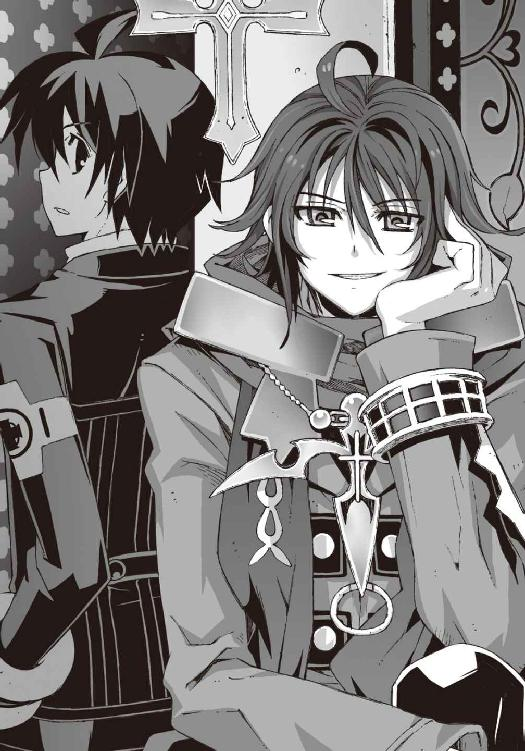
「やあ、久しぶり......〝二巡目の世界〟の夏目智春。それに操緒と奏か......若いな。二人とも」
『直貴くん......!?』
「なんで、あんたがここにいるんだよ!?」
操緒と僕が、ほぼ同時に叫んだ。
行方不明だったうちの兄貴──夏目直貴は、頬杖をついたままニヤニヤと笑い、
「べつに驚くようなことじゃないだろ。あんだけ派手な騒ぎを起こしておいて」
う、と僕は口ごもる。派手な騒ぎというのはたぶん、鳴桜邸の爆発事故のことだろう。
たしかにあんな映像がテレビで流れたら、この男が様子を見に来てもおかしくはない。もともと鳴桜邸というのは、直貴が借りていた建物だからだ。
直貴は、やれやれと鬱陶しげに髪をかき上げ、
「まさか鳴桜邸が吹っ飛ばされるとはね......さすがに僕もそこまでは予想してなかった」
溜息混じりにそう言った。そりゃ普通は予想しないわな。弟の下宿先が爆破されるとか。
まあ、それはさておき、
「あんた......なにやってたんだよ、今まで!? 何年も連絡を寄越さないで！」
「......聞きたいか？」
「え？」
直貴に真剣な表情で聞き返されて、僕は戸惑う。どういう意味だ。
「僕がなにをやってたか、本当に聞きたいか、智春？ 後悔しないか？」
「いや......後悔って......」
今でもたいがい後悔していることばかりなんだが、まだあるのか。深刻そうな直貴の警告に、僕は戸惑いながらも、
「......聞きたいよ。なにやってたんだよ？」
「声が小さい。語尾がはっきりしない。イラっとくる──不合格」
「ええっ!?」
突き放すような兄貴──と、かつて呼んでいた男の言葉に僕は呻き、
「なんてな、ハハ、冗談だよ......少しは成長したかと思ってたのにな。やれやれだ」
「あんたなあ......人を振り回すのもいい加減にしろよな」
面白そうに笑っている直貴を、僕は睨めつけた。自分をからかってそんなに愉しいか？
直貴は、ひとしきり腹を抱えて笑ったあと、
「ハハ。まあ、話すと長くなるし、もうわかってると思うけど、説明しづらいことも多いんだ。簡単にいうと僕はこのゲームを終わらせようとしてた」
「......ゲーム？」
なんのことだ、と僕は無表情に彼を見返した。直貴は面倒くさそうに首を振り、
「〝二巡目の世界〟とか呼ばれているふざけたゲームのことだよ。機巧魔神とか使い魔とか、本来はあっちゃいけない力なんだ。それはわかるだろ？ だから消滅させる」
「消滅させる？」
「接続されてしまった並行世界をすべて切り離す」
直貴は素っ気なく返答した。
「宇宙の時間の流れを川に喩えるなら、今のこの世界は、並行して流れているいくつもの川をパイプラインで連結している状態なんだ。そこから他の世界の影響力が流れこんで、存在を歪めている。外来種の魚が、本来の生態系を食い荒らすようにね」
外来種、というのは悪魔のことか。上手い喩えだと僕は思った。そして急激な水質の変化に耐えきれず、外来種そのものも苦しんでいる──
「だからそのパイプラインを破壊する。世界を連結している穴を消滅させるんだ」
『......そんなこと、できるの？』
操緒が疑わしげな眼差しで訊いた。
「なんとかするよ。そのためにいろいろと苦労してきたからね」
直貴は、そう言ってなぜか優しげな微笑を僕たちに向けた。
「あと少しだ。あと少しでカタがつく。おまえらが邪魔しなければな」
「邪魔って......あんたなあ、人を勝手に巻きこんでおいて、そういう言い種は──うあっ」
思わず言い返そうとした僕を目がけて、直貴が無造作になにかを放り投げた。
それは銀色のアタッシュケースだった。市販品のアルミ製の手提げケースだ。大きさはそれほどでもなかったが、けっこう重い。
「あ......ぶないな！ 受け取り損ねたら怪我するだろ！」
「そいつを環緒に渡してくれ」
僕の抗議を無視して、直貴が言った。操緒が、戸惑いの表情でケースを見下ろし、
『お姉ちゃんに──？』
「中に現金とパスポートが入ってる。しばらく南の島にでも行って、のんびり暮らすようにと言っといて欲しいんだ」
「それくらい自分で渡せよな」
僕はうんざりした顔で、ケースを直貴に突き返す。環緒さんは、廊下一本隔てた同じ建物の居住区で寝ているのだ。わざわざ他人に配達を頼むほどの距離じゃない。
「なんだったら今から呼んできても......」
「そうもいかない事情があってね」
直貴は薄く苦笑した。
「とにかく、おまえたちはもうこの件には手を出すな。鐵は、最悪の事態に備えてのスペアなんだ。こんなところで消耗させるわけにはいかない」
「スペア？」
「フラッシュメモリを欲しがってるやつにはくれてやればいいよ。どのみち、あのデータだけじゃなにもできない。世界の座標がわかっても、移動手段がなければどうしようもないからさ」
「なあ、直兄......それって......」
僕は慌てて直貴に詰め寄った。今の直貴の言葉だと、彼は移動手段を持っているみたいに聞こえる。それだけでなく、僕はこの男に訊かなければならないことが山ほどあるのだ。
なのに──
「......頼むぜ、智春。よけいなことはしてくれるなよ」
「え!?」
最後に勝手なセリフを言い残して、直貴の姿は祭壇の上から消えていた。
移動した痕跡すら残さずに直貴の姿はかき消えて、あとには安っぽいアルミケースだけが僕の手の中に残されていた。
○
直貴は完全に消えていた。祭壇に積もった埃の上に残された足跡は、彼が座っていた場所に唐突に出現して、そして同じ場所で途切れていた。
認識操作、とかいう彼の能力で、彼が消えたと思いこまされただけかもしれないと疑ったが、そうではなかった。直貴は、忽然とこの場所に現れて、そして消え去ったのだ。
ひかり先輩の瞬間移動と同じ種類の能力を使ったのかもしれないが──なにかが違う。
移動する瞬間、僕はその気配を感じなかった。直貴から魔力は放たれていなかった──！
「夏目くん！」
嵩月が窓の外を見て叫んだ。それは教会の隣にある広場だった。バスケットボールのコートがある空き地のような小さな公園だ。
薄暗い街灯に照らし出されて、その中央に直貴は立っていた。
「あいつ......！」
なんであんな場所に、と僕は呻いた。その僕の隣を、嵩月が素早く駆け抜けていった。
「追います！」
「あ、頼む！ 嵩月は正面から回ってくれ。僕たちは裏から──」
「はい」
礼拝堂の玄関に向かった嵩月と分かれて、僕は居住区側の裏口から外に出た。間に合う保証はなかったが、ここで直貴を見失ったら、次に会えるのはいつになるかわからない。どうにかしてやつを捕まえなければ、と焦る。
『智春!? 見て、あれ──！』
僕の肩越しに身を乗り出して、操緒が叫んだ。
広場の中央に立つ直貴の背後に、巨大な影が浮かび上がっている。直貴の倍近い身長の、人型の影。鋼色の鎧をまとった、機械仕掛けの人工の悪魔。
「鋼色の──機巧魔神!?」
必死で走り続けながら、僕は呻いた。
暮海崎の地底で遭遇した、鋼色の機巧魔神。そんなものが、どうして直貴の影の中から出現している!? さっき直貴を移動させたのも、あの機巧魔神の能力か──!?
「え!?」
驚愕する僕たちを嘲笑うように、鋼色の機巧魔神の姿が、波打つように揺らいで消滅した。
そして、そこにはなんの痕跡も残されていなかった。機巧魔神も直貴も消えている。
『消えた......よ!?』
操緒が周囲を見回しながら、呆然と呟いた。僕は黙ってうなずいた。
大通り側の入口から近づいてきた嵩月も、驚きの表情を浮かべていた。夢でも幻でもない。この直前まで、夏目直貴と呼ばれていた男はここにいたのだ。
『やっぱり瞬間移動能力なの......かな？ だけど、ひかり先輩は瞬間移動は障害物が多い地形じゃ使えないって言ってなかった？ どうしてこんな街中で......』
「......うん」
たぶん違う、と僕は思った。あの鋼色の機巧魔神の本来の能力は、ただの空間転移じゃない。もっとなにかが本質的に違う能力だ。
そして本能的に理解していた。もはや直貴に追いつく方法はない。あの男は、どこか遠くに行ってしまった。僕たちの手の届かないところに。
「あの......今のこと、朱浬さんや環緒さんに伝えてきます」
軽く息を弾ませたままそう言って、嵩月は教会のほうに戻ろうとした。
「そ、そうか......」
そうしたほうがよさそうだ、と僕も彼女のあとを追って走り出し──
その目の前で、嵩月がよろめくのを見た。
「えっ......？」
なにが起きたのか、本当に理解できなかった。
なにかに躓いた、という感じではなかった。糸の切れた人形のように、嵩月の全身から力が抜けた。彼女はそのまま無防備に倒れ込み、地面に頭を打つ直前をギリギリ僕が抱き止める。
「嵩月......？」
抱き止めた彼女の感触に、僕はゾッと背筋が逆立つのを感じた。
嵩月の体重が、まるで小さな子どものように軽い。片手で軽々と彼女を抱き上げられそうだ。いくらなんでも軽すぎる。
そして彼女の顔色は、血の気を失って紙のように白くなっている。まるで作り物の人形を見ているようだ。
「どうしたんだ、嵩月......いったいなにが......!?」
「へいき......です。ちょっと疲れただけ......急に走ったせい......」
嵩月が青ざめた唇を震わせた。微笑んでみせたつもりなのかもしれない。しかしその表情が、うっ、と苦痛に歪んだ。
『智春！』
操緒が叫んだ。驚愕に引きつった顔で彼女が見ていたのは、スカートの裾から伸びる嵩月の脚だった。素足の彼女の膝から足首にかけて、月光に照らし出された彼女の肌が、透けていた。
艶やかなガラスのように輝いて、ほのかにアスファルトの地面が透けて見える。
「まさか......非在化!? なんで......こんな急に......!?」
僕は声を震わせて叫んだ。
ほんの数分前まで、嵩月はごく普通に過ごしていた。同じ毛布にくるまって、微笑んでいた。
なのに、なぜ!?
「う......あ......！」
あの我慢強い嵩月が、耐えきれずに苦痛の呻き声を上げる。非在化は、彼女の脚だけで進行していたわけではない。細い首筋や袖口からのぞく腕も、淡く光を放っている。おそらく全身で同様の現象が起きているはずだ。
「あああああああああああああああっ──！」
「嵩月っ！」
全身を激しく痙攣させる嵩月を、僕は必死で押さえつけた。だが、それ以上のことはなにもできなかった。どう対処すればいいのかわからない。
『あたし、お姉ちゃん呼んでくる！』
操緒が今にも泣き出しそうな表情で言った。
ハッと僕は顔を上げた。同じ悪魔で、そして過去に非在化を経験している彼女なら、嵩月のこの症状を抑える方法を知っているかもしれない。
「頼む、操緒！」
『うん──待ってて、嵩月さん！』
操緒が、教会の居住区のほうへとすっ飛んでいく。
嵩月はその間も、ほとんど意識をなくしたまま苦悶の声を洩らし続けている。
そして僕は、彼女の身体に起きているもうひとつの異変に気づく。
嵩月の身体が熱い。
いや、そうではない。彼女の体温は氷のように冷たいままだ。むしろ今も下がり続けている。だが、彼女の周囲に高熱の炎が渦巻き始めているのだ。
意識を失って制御できなくなった彼女の魔力が暴走している──！
「くそ......こんな......どうすりゃいいんだ......！」
嵩月の身体を抱きしめたまま、僕は焦燥の声を洩らした。
非在化の進行があまりにも急激過ぎたのだ。このまま魔力が暴走を続けたら、嵩月の炎は、彼女自身を燃やし尽くしてしまうだろう。その前に、どうにかして彼女の意識を取り戻さなければならないが、だけどいったいどうすればいい!?
絶望する僕の耳元で、そのとき、聞き覚えのある声がした。
「──夏目くん！ これを！」
「えっ!?」
僕の前に差し出されたのは、小さなガラス瓶だった。首からぶら下げられるように、細い金の鎖に結ばれたペンダント型の小瓶だ。瓶の中には、小さな錠剤が一錠だけ入っている。
そしてその瓶を僕に差し出しているのは、金色の巨大な獣を従えた少年だった。
「真日和!? おまえ、なんで......!?」
僕は彼を睨みつけた。嵩月がこんなになるまで魔力を使ったのは、もとはといえばこいつらが襲ってきたせいでもあるのだ。そんなやつが今さらなんの用だ？
「話はあとッス！ こいつを噛み砕いて、彼女の舌の裏側に」
しかし真日和は、真剣な表情で小瓶の蓋を開け、中の錠剤を僕の手に握らせる。
「これは......!?」
「ニトロっス」
「......ニトロ!?」
あの爆薬に使われている薬品のことか？
「ニトロは血管拡張剤ッスよ。今の彼女は、急激な非在化でショック症状が起きてるから、とりあえず彼女の心肺を活性化させる必要があるんスよ！ それから彼女に声をかけ続けて！ 悪魔の非在化を防げるのは、契約者の強い感情だけッスから──！」
僕は嵩月の契約者じゃない──と言いかけて、やめる。今はそんなことを言ってる場合じゃない。しかし、
「舌の裏側って......でもどうやって......！」
意識をなくして呻き続ける今の嵩月に、錠剤を噛み砕くような余裕はない。ましてやそれを舌下に含ませるなんて。だが、どうにかしなければ、このままでは嵩月の命が危ない。
「くそっ......」
僕は咄嗟に、真日和に渡されたニトロ錠を自分の口に放りこんだ。そして嵩月の唇に自分の唇を重ねた。奥歯で噛み砕いた錠剤を、そのまま口移しで嵩月の中に送りこむ。
うまくいく、という自信はなかった。ただ、なにをしてでも彼女を助けたかったのだ。
「舌の粘膜から吸収されれば、一分程度で効果が出るはずッス」
真日和が僕を励ますように言う。
一分間。普段なら気にもならないほどの時間だが、この状況でそれは絶望的に長く感じられた。苦痛で叫び出そうとする嵩月の唇を塞いだまま、僕は祈るように目を閉じた。
「ぐ......」
嵩月の周囲を取り囲む炎が勢いを増した。彼女に直接触れている僕の手足は、もはや熱さを感じていない。ただ刃物で切られたような激痛だけがある。
肉が焼けるような嫌な音がして、僕は痛みに顔を歪めた。だが、悲鳴を上げるほどじゃない。これでもまだ、嵩月が感じている苦痛には遠く及ばないのだ──
真日和に言われるまでもなく、僕は強く嵩月のことを想った。嵩月が過去に僕のことを助けてくれたから、その借りを返そうとしたわけではなかった。そんなことは無関係に、ただ彼女を救いたいと思った。傍にいて、いつものように微笑んで欲しいと──
──嵩月！
「かはっ」
僕の腕の中で、嵩月がかすかに身じろぎした。弱々しい声が彼女の喉から漏れた。
荒れ狂っていた炎が収まって、彼女の全身の痙攣が止まる。
「発作が、治まってきたッス......」
真日和が安堵の息を洩らした。僕は脱力して、その場に座りこんだ。
ついさっきまでガラス状に透きとおっていた彼女の肌が、今は普通の姿に戻っている。
いまだに冷え切って羽根のように軽いが、それはいつもの柔らかな女の子の身体だった。非在化の発作が沈静化したのだ。
「これが......非在化か......」
弱々しくひび割れた声で、僕は呟いた。
「比較的軽い発作でよかったッス......さすがに強いッスね、彼女は」
真日和が感心したように嵩月を眺める。これでも軽いほうなのか、と僕は戦慄する。
「こんな急激に進行するものだなんて......思ってなかった」
「きっかけは、たぶん鳳島氷羽子との戦闘ッスけど......自覚症状は前からあったはずッスよ。契約者もいないのにあんな無茶な力の使い方をしてれば、こうなるのは時間の問題だったッス」
めずらしく真面目な口調で真日和が言った。
そのとき僕は思い出した。真日和の風獣は、大気を操ることで、可視光を屈折させて姿を消すことができる。彼はずっと僕たちのことを見張っていたのだ。嵩月組の縄張りになるこの教会には直接手を出せないから、仕方なく姿を消して監視していた。
そして監視していたことがばれるにもかかわらず、姿を現して嵩月を助けてくれたのだ。
礼を言わなければならないだろうな、と思って、そして僕はふと気づいた。
なぜ真日和は、この薬を持っていたのだろう。
どうして彼は非在化した悪魔への対処法を知っていたのだ？
使い魔持ちである契約者の真日和の、契約悪魔はなぜ今まで姿を見せなかった──？
「真日和......この薬......まさか、おまえの契約悪魔も......」
僕は、真日和を見上げて訊いた。
真日和は、ほとんど感情の読めない、いつも笑っているような顔のまま、
「──俺は、過去をもう一度やり直すチャンスがあるのなら......どんなことでもするッスよ、夏目くん。だから今度会うときは、本当に敵同士かも知れないッス」
そう言い残して、真日和は風獣の背中に跨った。誰よりも素早い彼の使い魔は、風をまとって舞い上がり、そのまま一瞬で飛び去って姿を消した。
僕が無言でそのまま空を見上げていると、すぐに嵩月が目を覚ます気配がした。
苦しげに荒い息を吐きながら無理に身体を起こそうとして、そして彼女は、焼け焦げた僕の制服に気づいて呆然と目を見開いた。
「夏目くん......わたし......」
「ああ」
焼けただれた自分の掌を見下ろして、僕は笑った。動かすだけで凄まじい痛みを感じるのに、そのことを僕は忘れていた。
「ごめんなさい......ごめんなさい......わたし......」
「いいんだ、嵩月。こんなの......たいした傷じゃない」
そう、本当にたいした傷じゃない。このままなにもできないまま、目の前で嵩月を失ってしまう恐怖に比べれば、この程度の苦痛はどうということはない──
伝わってくる痛みを無視して、なんともない、というふうに僕は掌を握ってみせた。
それを見た嵩月は安堵したように微笑むと、
「ごめんなさい......わたしは平気......今日は本当に疲れていただけ......だから最後まで......」
そう言って、気絶するように眠りに落ちた。
あなたを最後まで守らせて。意識を失う直前にそう動いた嵩月の唇を見つめ、僕は彼女を、もう一度強く抱きしめた。真日和の言ったとおりだ。嵩月は自分の身体の状態を知っていた。でなければ、最後なんて言葉が彼女の口から出てくるはずがない。
そんなことにはさせない、と僕は思う。だが。
「......どうすればいいんだ、兄貴」
存在しないはずの男に向かって、僕はぼそりと呟いた。
その問いかけに答える者はなく、ただ出口のない薄闇だけが僕たちを取り巻いていた。
三章
長い一日が終わって、次の朝が訪れた。
僕は朱浬さんの部屋でソファに座らされ、彼女と至近距離で向かい合っていた。
むっつりと唇を突き出した僕に、朱浬さんが真剣な表情で顔を近づけてくる。
朱浬さんの手に握られているのは、冬の新作の口紅だった。
リップブラシで丁寧に僕の唇に化粧を施して、
「はい、メイク完了、と」
「......すみません、いつも」
複雑な気分で彼女に礼を言いながら、僕は頭にカツラを被った。前とは少し髪型の異なる、新型の女装用ウィッグである。さらに洛高の女子の制服を身につけ、ソックスをはく。
そして鏡の前で入念に最終チェックをしていると、
「うわ......美少女......！」
部屋に入ってきた環緒さんが、僕の姿を見て声を裏返らせた。
「本気出すとこんな感じになるんだ。趣味もここまで極めると一種の才能よね」
「いや、だからべつに趣味じゃないんですってば」
僕は情けない表情になって、もごもごと口ごもる。
そういえば環緒さんと再会したときも、女子寮に忍びこむために僕は思いっきり女装していたのだった。こんな短期間で二度も女装した姿を見られていたら、そういう趣味の持ち主だと勘違いされても仕方がない。
しかしもちろん、僕は趣味でこんなことをしているわけではなかった。
「ほんとに好きでやってるわけじゃないんですよ。情報収集のために仕方なくですからね」
「はいはい。指名手配されてるきみが洛高に行くためには、変装するしかないのよね。うん、それはちゃんとわかってるわよ」
からかうような口調で環緒さんに言われて、僕は弱々しく肩を落とす。
そう、これは情報収集のための重要な任務なのだった。
ここにいれば安全だからといって、いつまでも教会に閉じこもっているわけにはいかない。状況を打開するためには、とりあえず敵である真日和や氷羽子の目的を知る必要がある。
真日和たちが登校してくるとは限らないが、洛高に行けば、少なくともなにか情報が手に入るはずだった。彼らが環緒さんを狙う理由がわかれば対策も立てられるし、うまくすれば仮面の女の正体もわかるかもしれない。
しかし問題は誰が、洛高に行くか、ということだ。
部長やアニアも、いちおう独自に情報を仕入れてくれることになっているのだが、直接的な戦闘能力を持たない彼らには、あまり危険なことはさせられない。ばったり氷羽子あたりと遭遇して、人質にでもされたりしたら目も当てられないからだ。
昨夜倒れたばかりの嵩月と、生徒ではない環緒さんはさすがに無理。
すると消去法で、洛高に行くのは僕と操緒の役目ということになってしまう。
なぜなら環緒さんを狙って氷羽子たちが襲ってきたときに、元演操者である仮面の女に対抗できるのは朱浬さんだけだからだ。機巧魔神の能力が通用しない相手に対しては、残念ながら僕は無力で、環緒さんの護衛は務まらない。そんなわけでやむを得ず女装する羽目になっているのだ。断じて僕の趣味というわけではない。
「火傷......たいしたことなくてよかったわね」
そんな僕の両腕に包帯を巻き直しながら、朱浬さんが言う。
「そうですね。すみません、手間かけちゃって」
僕は微笑んでうなずいた。
嵩月の魔力の暴走で負った火傷は、見た目ほどにはひどくはなかった。朱浬さんの処置が適切だったのと、彼女が持っていた怪しげな塗り薬の強力な効き目で、今朝には普通に動かせる程度にまで回復していた。細やかな作業はまだ無理だが、日常生活には支障はない。
「それで嵩月の容態は？」
僕はちらりとベッドルームのほうに目を向ける。彼女はあれから一度も目を覚まさずに眠り続けていた。しかし朱浬さんは、心配いらない、というふうに微笑んで、
「とりあえずは大丈夫。今はまだ眠ってるけど、非在化してた身体は戻ってるし、次の発作の兆候もなし。この先も悪魔の能力を使わずに、普通に生活するぶんには支障ないと思う」
そして彼女は、ふと真剣な視線で僕を見た。
「ただし次の発作が起きたら、どうなるか責任は持てないわよ......今のままだとね」
わかってます、と僕はうなずいた。
嵩月には契約者が必要なのだ。彼女がそれを得るまでは、僕たちはもう嵩月を巻きこむべきではない。
「律都さんに連絡はしないんですか？」
「本当は迎えに来てもらったほうがいいと思うけど......奏っちゃんが嫌がると思って」
朱浬さんはそう言って首を振った。
嵩月の性格を考えると、朱浬さんの判断は正しいだろうと思えた。姉妹同然の従姉が相手でも、嵩月にしてみれば、自分が非在化の発作を起こしたことは知られたくないはずだ。
『智春、そろそろ行かないと』
テレビの時刻表示を指さして、操緒が言った。たしかに、そろそろ出発しないと、登校中の一般生徒にまぎれるのが難しくなる時間だ。
「じゃあ、情報を集めたら、なるべく早く戻ってきますから」
身支度を調えながら、僕が不安げに振り返ると、
「そんなに心配しなくても、ここにいるぶんには奏っちゃんに危険はないわよ。昨日、真日和がうろついてたせいで、嵩月組の皆さんもピリピリしてるし、環緒さんも、あたしもいるしね」
朱浬さんが、いつもの余裕の表情で手を振った。
「どっちかといえば、指名手配中のともはちゃんのほうが危険だからね。がんばって」
「うう......行ってきます」
重い気分を引きずるようにして、僕は居住区の出口に向かった。
見送りに来てくれたのは環緒さんだった。
『なによ、ニヤニヤして』
やけに陽気な笑みを浮かべている彼女を、操緒が不審そうに見つめて訊くと、
「ううん、なんでもないわ。ちょっとめずらしかっただけ」
『......めずらしい？』
「ん、きみたちってば本当にいいチームだな、って思ったのよ。まるで本物の家族みたい」
環緒さんは軽くうなずきながら、少し遠くを見るような目をした。
「あたしたちにはそういうのはなかったからね。こっちの智春クンは、あたしの知ってるあの男とは違うんだなって思ったの......」
そう言って彼女は女装した僕の姿を上から下まで眺め回し、くっくっと喉を鳴らして笑った。
僕は、うんざりと溜息をつきながら念押しした。
「──いっときますけど、ホントに趣味でやってるわけじゃないですからね」
○
たとえ鳴桜邸が爆破されようとも、同級生が指名手配されようとも、大多数の一般生徒たちの日常に、たいした変化はないらしい。始業直前の洛高の正門前には、いつもどおりの平和な登校風景が繰り広げられていた。
『なんだか、久々に学校に来た気がするねえ......』
普通に歩くフリをしながら、変装用のメガネをかけた操緒が僕に声をかけてくる。
たしかに、と僕は首肯した。学校を休んでいたのは、土日を含めたほんの三日ばかりだったのだが、前に登校したときの記憶が、すぐには思い出せないくらい久しぶりな気がした。
『で......これからどうするの？ その恰好で教室に行く気はないでしょ？』
操緒が振り返って訊いてくる。たしかに、女装したまま自分の教室を訪れるほどの度胸は、僕にはない。
「とりあえず、科學部の部室に行こう。部長やアニアの様子も気になるし」
『そっか、部長の本体のほうは、今日も補習なんだっけ......あの人、卒業できんの？』
「さあ......とりあえず頭だけはいいから、受験はたぶん大丈夫なんだろうけど」
科學部部長の塔貴也という男は、ちょうど昨年の今ごろから半年近く引きこもり生活を続けていたせいで、致命的に出席日数が足りない。そのため夏休み期間中から、科學部の部室で補習三昧という、よくわからない学生生活をずっと続けているのだった。
おかげで科學部顧問の市原はいろいろと苦労しているらしいが、とにかく部室に行けば必ず彼に会えるわけで、便利といえば便利である。
「......って、なんだこれ」
しかし、その科學部の部室に近づいたところで、僕と操緒は困惑気味に足を止めた。
科學部の部室がある実験室棟校舎の周囲を、なぜか大勢の生徒たちが取り囲んでいた。
囲んでいるといっても、科學部に対して抗議デモを行っているというわけではないらしい。
どちらかといえば美味しいラーメン屋に並ぶ行列や、新作ゲームソフト発売を待つマニアの群れといった、盛り上がっている人々の雰囲気に近い。集まっている人数は七、八十人といったところ。それが順番に列を作って、校舎をぐるりと包囲している。
わけがわからなかったが、とりあえず様子を探るために、僕は部室に近づこうとした。
そのとき、僕たちのすぐ背後から声がした。
「す、すみません......そこは列の最後じゃないんです......」
「はい......？」
僕はわけがわからないまま振り返った。そこに立っていたのは、小柄な二年生の女子生徒だった。
やや小動物的な雰囲気の可愛らしい顔立ちをして、結んだ髪を左右に垂らしている。
彼女は、『最後尾』と書かれた矢印入りのプラカードを持ったまま、
「あの......予約整理券の受付でしたら、ほかの人の通行の邪魔にならないように、校舎沿いに回ってもらえますか？」
『ひかり先輩？』
操緒が、プラカードを持った女子生徒の名前を呼んで、
「あれ......ともはちゃん？」
ひかり先輩が、女装した僕に気づいてびっくりしたような表情を浮かべていた。以前、一緒にファミレスでバイトしたことがある関係で、彼女は〝夏目ともは〟とも知り合いなのだ。
「どうしたの、今日は？」
「......すみません。なにも訊かないでください」
僕は頼りなく俯いて首を振った。ひかり先輩は軽く混乱したように首を傾げている。
そんな彼女に、操緒は無遠慮に顔を寄せ、
『それよりもこの並んでる人たちってなんですか？ 科學部の部室でなにがあるんです？』
「あのね......開運の館っていうんだけど」
「......開運の館？」
うさんくさい名前だなあ、と僕は顔をしかめた。どこかのショッピングモールの片隅にある安っぽいアトラクションみたいだ。
そしてひかり先輩は、なぜか申し訳なさそうな表情を浮かべて、
「六夏ちゃんが考えたの。留学生のアニアちゃんを幸運を呼ぶ聖女ってことにして、お客様のささやかな願い事を叶えてあげるっていうサービスなんだけど......」
「あ」
僕は唐突に理解した。
六夏が昨晩、アニアの能力を使った金儲けの手段を考えると息巻いていたが、それがこれか。たしかにアニアの見た目なら、聖女という肩書きでも通用しないことはないだろうが。
『それって、ニアちゃんの運喰らいの能力を利用して......ってことですよね』
「うん。縁結びとか、合格祈願とかね。あとは開運グッズの販売とか、お祓いとか......」
『うわー......』
なんでもアリだな、第二生徒会は。いかにも六夏が考えそうなことだ。
『だけど......そんな幸運ばかり他人に振りまいて、大丈夫なんですか？ ニアちゃんの溜めた運気が枯渇するんじゃ』
「うん。それは依頼された内容以外で、ちゃんとバランス取るようにしてるから......縁結びが成功したらテストの点が下がるとか......あとは裏で呪いグッズの作成もやってるし」
そんなものまで売ってるのか、と僕は渋面になる。
運喰らいのアニアが作る呪いグッズは、マイナスの運気がこもった、本物の呪いのアイテムなのである。そんなものを校内で販売するのは、いくらなんでもまずくないか。
「まあ......そういう契約だから仕方ないですけど。アニアを護衛してもらえるのなら」
あとはアニアが呪いグッズ作製時に適当に手を抜いてくれることを祈るしかない。
『でも、よく一晩でこんなにお客が集まりましたね......？』
操緒が感心したように言った。たしかに、今朝から営業を始めたにしては、人が集まるのがずいぶん早い。大々的に宣伝したわけでもないだろうに。
「六夏ちゃんが、昨日のうちにいろいろ根回ししてたみたいだから......」
ひかり先輩が、少し良心の呵責を感じているような口調で言う。
それでいろいろ合点がいった。サクラとかデマとか、思いつく限りのあこぎな手段を使ったのだろう。それはいかにも六夏がやりそうなことだった。
しかし、護衛対象のアニアを使って客商売とか、普通やるかなあ、と僕は呆れる。あの人、本気で護衛する気はあるんだろうな？
「あの......もしかして六夏ちゃんになにか用事だった？」
唖然としている僕たちを見て、ひかり先輩が気遣うように訊いてくる。
「ええ、まあ用事というか......」
ひとこと文句を言ってやりたい気持ちはある。
ひかり先輩は、プラカードを下ろすと制服のポケットをもぞもぞと漁り、
「第二生徒会役員用の優先予約整理券があるけど、もしよかったら」
そう言って彼女は、生徒会のハンコが押されたメモ用紙を差し出してきた。そこには乱暴なマジックの殴り書きで、三時限目終了後の休憩時間の時刻が記されていた。
どうやら六夏は、すべての休憩時間ごとに、この開運の館とやらを開催するつもりらしい。つき合わされるアニアも、さぞかしうんざりしていることだろう。
まあ、とにかくこの整理券さえあれば、昼休み前には確実にアニアたちと面会できるというわけだ。とりあえずはそれで十分だ。
「あの......ありがとうございます」
僕はひかり先輩に感謝して頭を下げた。
「ともはちゃんも、なんだかよくわからないけど頑張ってね」
女装中の僕に微妙な励ましの言葉を残すと、彼女は再びプラカードを掲げて、列の整理作業に戻っていった。
○
僕たちが校舎内に辿り着いたころには登校してきた生徒たちの数も増え、校内は雑然とした雰囲気で満ちていた。見慣れたいつもの朝の風景だ。
普段と違っているところがあるとすれば、僕の行動が妙に注目されているということだった。指名手配中だから、ということではなく、単に女装しているせいである。夏目ともは、という少女は、なぜか知らないがやけに美人で、やたらに目立ってしまうのだ。潜入任務にはまったく不向きな変装だといえよう。
「鳳島氷羽子は......来てないか、やっぱり」
通りすがりに氷羽子の教室をのぞいて、彼女の不在を確認する。廊下からざっと見回しただけだが、あんな目立つ女を見落とすはずがない。
正直少し安心したが、実際のところ事態は深刻化しつつあった。いくらなんでも学校内では、氷羽子もおとなしくしているだろうし、ここで彼女と会って交渉できたほうがよかったのだ。
『彼女って、もともと保健室登校の子だっけ？』
操緒が独り言のような口調で呟いた。
「そうか......だったらいちおう保健室もチェックしておいたほうがいいのかな......」
僕はそう言って歩き出そうとして、そこで顔面を硬直させた。
見慣れた同級生たちが真正面から、僕たちのほうへと歩いてくるのが見えたからだ。
女子が二人と男子が一名。授業で使うプリントだかを職員室に取りに行った女の子二人に、男がつきまとっているという、わりとよくある構図だが、
「あ......あんた、夏目ともはっ！」
その中の約一名が、僕の顔を見るなり、くわっ、と目を剥いた。僕は声を上擦らせて、
「げっ、佐伯妹！」
「あ......あんた、こんなところでなにやってんのよ、またそんなカッコして！」
佐伯妹はプリントの束を抱きかかえたまま、ずかずかと僕に詰め寄ってきた。
彼女は、夏目ともはの正体を知る数少ない洛高生の一人だ。僕の女装による実質的な唯一の被害者ともいえる。当然、彼女は夏目ともはに対してめちゃめちゃ腹を立てており、くっきりした眉を吊り上げて憤怒の表情を浮かべていた。
「いや......これは......」
僕はへどもどと言い訳しようとするが、
「あれ、佐伯？ 誰だ、その子？ 見ない顔だけど、知り合いか？」
「......え？」
佐伯妹につきまとっていた樋口が、僕に興味を惹かれたように近づいてきた。なんてこった、と僕は青ざめた。いくらなんでもこれはバレるだろ。
べつにこいつにバレたからといって、なにが困るわけでもないのだが、ここで騒ぎになるのはまずかった。僕はいちおう指名手配中の身の上なのだ。
しかし一緒にいた杏も、無邪気な笑顔で僕に接近し、
「うわ......美人さんだねえ。あれ......でも、前にどっかで会ったことあったっけ？」
じろじろと僕の顔を眺め回して、首を傾げる。
僕は硬直したまま冷や汗を浮かべ、
「ごめん！ あたし、彼女とちょっと話があるから、二人とも先に行ってて！」
そのとき佐伯妹が、持っていたプリントの束を樋口に押しつけながら、早口で叫んだ。
杏はぱちぱちと大きな目を瞬き、
「え、そうなの？ 授業は？」
「なんか適当に誤魔化しといて──！」
佐伯妹はそう言い残すと、強引に僕の手を引いて歩き出した。僕は、彼女にされるがままに廊下を引っ張られていく。
「まったくもう、バカじゃないのホント。なんであたしがこんなヤツのためにこんな......」
佐伯妹はぷりぷりと怒って僕を罵っていたが、そんな彼女の背中を僕は不思議な気分で眺めた。もしかして助けてくれたのか？
彼女が僕を連れこんだのは、第一生徒会の生徒会室だった。分厚いコンクリートの壁に覆われた、紛争地帯の堡塁みたいな建物だ。ここにはあまりいい思い出がないのだが、とりあえず人目を避けられるのはありがたい。
「あ......ありがとう、佐伯。助かった」
ひと気のない生徒会室の応接間に辿り着いて、僕はぎこちない笑顔を浮かべた。
「助かった、じゃないわよ！ まったく！」
佐伯妹は、いつもの怒ったような表情で、
「あんたの下宿、爆発したって聞いたけど大丈夫なの!? 今度はなにをやったのよ？」
「いや、してない。なにもしてないよ。勝手に爆破されたんだって」
僕は疲れた口調で弁解した。
「......そうなの？」
疑わしげな眼差しで睨み続けている佐伯妹。
「当たり前だろ」
僕はのろのろと溜息をついた。誰がなにを好きこのんで、自分ちを爆破しなきゃならんのだ。
ふーん、と佐伯妹は小さく息を吐き出して、
「奏は？ あの子も今日は来てないんだけど......」
「あ......嵩月は、ちょっと体調を崩して寝てる。たいしたことはないんだけど、念のため」
僕はなんとか平静を装ってみた。佐伯妹は、む、と眉を寄せ、
「体調を崩したって、夏目がなんか変なことしたんじゃないでしょうね？」
「変なことって......」
僕がなにをしたら、嵩月が学校を休んで寝込むようなことになってしまうんだ──と、反論しようとして、その指摘があながち間違いでもないことに気づく。
「いや......でも、僕のせいかも......」
声を沈ませる僕を見て、佐伯妹はなぜか焦ったような表情を浮かべ、
「ちょっと、なんでそこで落ちこむのよ!?」
『......ここ、勝手に入ってよかったの？』
操緒は、僕たちのやりとりを無視して、マイペースで生徒会室を見回していた。
そういえば、佐伯妹はべつに生徒会の関係者というわけではないのだった。単に生徒会長の妹というだけで。
「よくはないんだけど、今日は、休み時間にお兄様のお手伝いをする約束をしてたから」
『手伝い？』
「佐伯家のスタッフが荷物の引き取りにくるから、その案内とかね」
『荷物って......もしかしてあれのこと？』
操緒が僕の背後の机の上を指さした。
振り返って、僕はハッと息を呑む。そこに置かれていたのは、金属製のトランクだった。
小振りな旅行用スーツケースほどの大きさで、どこにも継ぎ目がない奇妙な形をしている。その姿には見覚えがあった。それとよく似たトランクを、僕はかつて所持していたからだ。
「これは......」
僕は無意識にそのトランクに手を伸ばし、
「触るな──！」
そのとき誰かが、鋭い声で僕を制止した。
いつからそこにいたのか、生徒会室の入口に男が立っていた。純白の改造学生服を着た、暑苦しいほど美形の男子生徒だ。
「佐伯あ......会長？」
「そのトランクに触ってはいけません、ともはさん」
第一生徒会会長、佐伯玲士郎は優雅にうなずいて僕のほうに歩み寄り、トランクをそっと奥に押しやった。そして無駄に爽やかな微笑を浮かべ、
「あなたのような汚れのない人には、これは危険だ」
「え......あ、ごめんなさい」
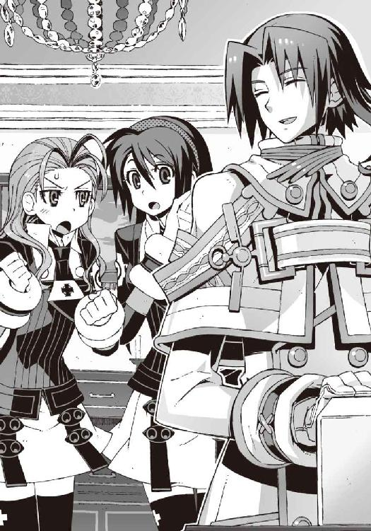
軽く肌が粟立つ感触を覚えながら、僕は引きつった愛想笑いを浮かべた。そして佐伯妹のほうに向き直り、声を潜めて、
「内緒にしててくれたのか、僕の正体のこと」
「お兄様に言えるわけないでしょ、そんなこと！」
佐伯妹がいつもの怒ったような口調で言い返す。
「そ、そうか......」
僕は、刑の執行が延期になった死刑囚の気分で弱々しく息を吐いた。
馴れ初めは忘れてしまったが、佐伯兄はなぜか夏目ともはに好意を抱いているらしく、これまでも会うたびに異様に親切にしてくれていた。この状況でともはの正体が僕の女装だと彼に知られたら、間違いなく僕は殺される。佐伯妹は命の恩人だ。
ともかく彼の勘違いが続いているおかげで、僕たちが生徒会室にいる理由については、不問ということになったらしい。
「あの、それって翡翠が入ってるトランク......ですか？ たしかインストラクタとなって......」
僕はおそるおそる佐伯兄に質問した。そこにある銀色のトランクは、かつて《鐵》を封印していたヤツとよく似た形をしていたのだ。
佐伯兄は静かに首を振り、
「いえ......正確には違います。これはたしかに翡翠の祭壇ですが、この中に機巧魔神が入ってるわけではありません」
「翡翠の......祭壇？」
機巧魔神が入っているわけではない──？
少し意外な気がしたが、冷静に考えれば当然の話だった。そのトランクの大きさでは、機巧魔神の親指一本すら入るかどうか疑わしい。しかし、だったら祭壇というのはなんだ？
「すべての機巧魔神は対になるトランクを持っているのです。そのトランクのことを我々は、便宜上、祭壇と呼んでいます。この祭壇を使って儀式を施した人間が、演操者の資格を得る」
佐伯兄は、トランク表面を無造作に撫でながらそう言った。
「......儀式？」
「機巧魔神に生け贄を捧げる儀式──つまり、副葬処女の封印作業です」
『......儀式だって。なんか本格的だね』
ぼそっ、と操緒が僕の耳元で囁いた。他人事みたいにいうなよな、と僕は顔をしかめた。操緒自身、その儀式とやらによって封印された生け贄の一人なのだから。しかし祭壇とか生け贄とか、たしかに本物の悪魔召喚の儀式みたいだ。
「その祭壇を使って儀式をした人間が、演操者になるんですか？」
僕の質問に、佐伯兄は重々しくうなずき、
「普通はそうなります。若干の例外はありますが」
「......例外？」
はい、と佐伯兄は生真面目な声を出し、
「副葬処女を封印した段階で、ほかの人間がすでに機巧魔神を現世に喚び出している場合です。二人の演操者が、同時に一体の機巧魔神を喚び出すことはできませんから──」
それは納得できる答えだった。だが、
「そのときは......どうなるんですか？」
僕の質問に、佐伯兄は、思い出し笑いのような表情を浮かべて、
「ただの幽霊憑き──として生活することになります」
『ああ......！』
操緒が、ぽん、と手を叩いた。僕は声も出ないほどのショックを受けていた。機巧魔神を喚び出すことができない、ただの幽霊憑き。それはまさに洛高入学前までの僕の姿だったからだ。
僕は、幽霊憑きだったから《鐵》の所有者になれたわけではなかった。その逆だ。鐵と契約を交わしていたから、幽霊憑きになったのだ。今から四年近く前のあの飛行機事故の日に、誰かが僕にすでに儀式を施していた。なにも知らない僕に。操緒の魂を使って──
「あの......だったら封印された副葬処女は、それまでの間どこにいるんですか？」
思い詰めた表情で訊き返す僕を、佐伯兄は少し不思議そうに眺めて、
「わかりません。少なくとも、この世界に存在しないことだけはたしかです。そもそも異空間に封印されている副葬処女に、時間という概念があるのかどうかもよくわかりませんが」
僕はうなずくことしかできなかった。佐伯兄もすべてを理解できているわけではないらしい。
「副葬処女の魂が消滅するか、演操者自身が死ぬか──とにかく前の所有者が演操者としての資格を失った状態で、祭壇を開けること。これが機巧魔神の新たな演操者となる条件です」
「......そうだった......のか」
僕は親指の付け爪をがり、と噛んだ。
機巧魔神と祭壇のトランクは、基本的に対になる存在だ。それを使って、生け贄の封印と、機巧魔神との契約が同時に行われる。だが、僕の場合だけがイレギュラーだったのだ。
なぜなら僕は、普通なら演操者なんかにはなるはずのない人間だったから。
以前、朱浬さんが《鐵》のトランクは盗み出されたものだと言っていた。《鐵》はもともと学生連盟所属の機巧魔神で、だから祭壇も本来は学生連盟が管理していたはずだ。
なぜかそれが強奪されて、僕に儀式を施すために使われた。
そんなことになった理由はわからないが、誰がやったのかはハッキリしている。
夏目直貴だ。あのクソ兄貴が、なんのつもりか、僕にそんな妖しげな術を施しやがったのだ。
がりがり、と爪を噛み続けている僕を、佐伯兄はしばらく怪訝そうに眺めていたが、
「そういえば、ともはさん。どうしてあなたが機巧魔神の存在をご存じなんです......？」
ようやくそれに気づいて訊いてきた。
「う......そ、それは......」
やばい、と僕は笑顔を引きつらせた。さすがに調子に乗りすぎた。
佐伯兄が不思議そうな表情で僕を凝視する。バカ、と呆れ顔で顔を覆う佐伯妹。
僕は必死で言い訳を捜して黙りこみ、そのとき、
「──玲士郎、いるかい？」
コンコン、と開いているドアをノックする音が聞こえてきた。
僕たちが振り返ると、そこには、なぜか男子の制服を着た長身の女生徒が立っていた。
おそろしくハンサムな少年のような少女は、立ち尽くす僕の姿に気づいて、ちらり、と唇を舌先で舐める。僕はわけもなく身の危険を感じて、小さく肩を震わせた。
雪原瑤だった。
○
「雪原先輩？」
佐伯兄が、少し意外そうな声で彼女の名を呼んだ。瑤は悠然と微笑んでそれに答えた。
瑤の現在の所属は学生連盟だが、彼女も元は第一生徒会の出身だ。そのせいか、この二人の雰囲気には、どこか共通した部分があった。芝居がかった気取った態度とか、無駄に見た目がいいこととか。こういうのが第一生徒会の伝統なのかもしれない。性別こそ違うが、同じタイプの美形が二人揃うと、暑苦しさも二倍だった。実に居心地の悪い空間だ。
瑤は無遠慮に生徒会室の中に入ってくると、
「やあ、来客中だったのか......ん、きみは......ほー......これはこれは......」
唇が触れそうな距離まで近づいてきて、僕の顔をじろじろと眺め回した。
僕は思わず後ずさるが、すぐに壁際まで追い詰められてしまう。瑤と僕の身長はほぼ同じ。びっくりするほど近くに、彼女の長い睫毛があって、瞬きの風圧すら感じられそうだ。
「雪原先輩。ともはさんに対する無礼な言動は遠慮していただけませんか？」
ごほん、とわざとらしく咳払いして、佐伯兄が警告した。
瑤は、実に愉快そうな表情を浮かべて彼を振り返り、
「ふーん......ともはさん、か。ＯＫ、自重しよう」
そう言って、意外にあっさり僕を解放した。佐伯兄は彼女に椅子を勧めながら、
「どうしたんです、こんな時間に？」
「ああ、鳳島氷羽子って女の子の情報を教えてもらおうと思ってね」
瑤は、無意味に色っぽい仕草で、椅子の背もたれに腕をかけている。
「一年の鳳島氷羽子？ 鳳島一族の氷使い──ですか」
佐伯兄が生真面目な表情を浮かべた。
第一生徒会は、重火器を装備し、校内の治安維持を担当する武装集団だ。その活動の後ろ盾となっているのは、神聖防衛隊と名乗るローマ・カトリック教会の実戦部隊だった。
法王庁の、合法非合法問わぬ何重ものバックアップによって、第一生徒会は問題行動を起こした校内の悪魔を〝滅殺〟する許可を与えられている。無茶苦茶な話だが、実際に僕や嵩月は、そうやって危うく殺されかけたことがあった。
そんな第一生徒会が、嵩月をも凌ぐ危険人物の氷羽子を監視していないはずがない。
「彼女の契約者──何者だい？ 調べてあるだろ？」
皮肉っぽく片目を閉じて、瑤が訊いた。佐伯兄は訝しげに眉を寄せ、
「鳳島氷羽子が契約者持ち？ そんな話は聞いていませんが」
「......なんだって？」
瑤が驚いて身を乗り出した。
「らしくないな、玲士郎。夏休み中に使い魔を連れた彼女の姿がＧＤに目撃されてる。昨夜も、はる奈が彼女と交戦した。間違いなく彼女は契約者持ちだ」
佐伯兄は冷静に首を振る。
「いえ、そんなはずはありません。彼女は、鳳島一族本家の跡取りですから......彼女の意志で勝手に契約者を選ぶことなどできるはずがありません。もしそんなことをすれば......」
「彼女と彼女の契約者は、鳳島一族全員を敵に回す......か。それはゾッとしないな」
瑤が、ふむ、と腕組みした。そして彼女は、少し悪戯っぽく微笑んで、
「......嵩月奏とは状況が違うわけだ？」
「そうなりますね。夏目智春は、なぜか嵩月組の幹部連中に気に入られてますからね。だから我々は、鳳島氷羽子よりも嵩月奏のほうが、潜在的な危険性が高いと判断したわけですが」
淡々とした佐伯兄の説明を聞きながら、僕は、首筋を刃物で撫でられるような気分を感じていた。僕が嵩月組の恐い人たちに気に入られている、というのも初耳だが、それは少し間違えば、彼ら全員に命を狙われる羽目になっていたかもしれない、ということで──その状況を想像するだけで寿命が半分くらい減りそうだ。
「でもね、鳳島氷羽子が使い魔を持っているというのは事実なんだ」
瑤が、ちっちっ、と短く舌打ちする。
「鳳島一族、一千人の武闘派悪魔を敵に回して彼女をモノにした契約者がいるとしたら、そいつは相当な覚悟の持ち主だよね。よっぽどの命知らずか、バカか、それともなにか理由があるのか......どちらにしても気に入らないな。ヤバい感じがする」
「鳳島氷羽子の契約者......捜索しますか？」
佐伯兄が、表情を硬くした。
「いや、いいよ。ほかの心当たりを捜してみるからさ」
瑤はそう言って立ち上がり、背中を向けたまま佐伯兄に手を振った。
『智春......』
操緒が僕の耳元で小さく言った。僕はうなずき、瑤のあとを追った。不意を衝かれて呆気にとられている佐伯兄妹を置き去りに、生徒会室をあとにする。
瑤が三年生の校舎に戻る直前に、僕は彼女に追いついた。
「雪原さん」
彼女の背中を呼び止めると、
「なんだい、夏目智春？」
振り返った瑤は、実に愉快そうな笑顔で僕の名を呼んだ。
うわ、と僕は激しい疲労感に肩を落とした。
やはり気づいてたのか。なんとなくそんな気がしていたけれども。
「なかなか面白い恰好をしているじゃないか。朱浬も、自分のところの部員を着飾らせて遊ぶなんて、相変わらずいい趣味をしているな......ボクも好きだよ、そういうの」
冗談とも本気ともつかぬ口調で、瑤が言う。
近づいてくる彼女の姿に、本能的な恐怖を感じて僕は一歩後退した。いちおう僕のこの恰好は、朱浬さんの趣味というわけでもない、と思う。たぶん。
「あの......訊きたいことがあるんですけど。その朱浬さんのことで」
「......ボクに？」
瑤は、ふふっ、と微笑んで眉を上げた。僕は硬い表情でうなずいた。
頭の中で会話の展開を何パターンもシミュレーションして──結局うまいやり方を思いつかなかったので、単刀直入に、そのまま話を切り出した。
「あなたが機巧魔神を使わないように、朱浬さんが陰でいろいろと動いてるって聞きました。そのことは──」
「ああ、知ってる」
瑤はあっさりとうなずいた。そして少し冷淡な微笑を浮かべ、
「きみからも、朱浬を説得してくれないか。死んだ人間のことは忘れろってさ」
「......死んだ人間？」
「そう。死人だ」
瑤はそう言って、かすかに自分の左肩を見た。
そのすぐ背後に、うっすらとした少女の影が浮かび上がる。射影体と呼ばれる人工的な幽霊。雪原瑤に憑いている機巧魔神《白銀》の副葬処女──黒崎紫浬、だ。
朱浬さんと同じ顔をした、長い髪の美少女。
だが彼女の姿は、僕の知っているほかの射影体とは少し違っていた。
操緒や姫笹さん、そして哀音や琴里さん。
彼女たちと比べても、さらに存在感が薄い。同じ演操者の僕が見ても、陽炎のようにぼんやり揺らめいて、輪郭がはっきりしない。表情のない端整な顔立ちは、ただ微笑んでいるだけ。
まるで本物の幽霊のようだ。
「きみは機巧魔神の副葬処女が、なぜ幽霊の形をして現れると思う──？」
瑤が謎かけするような口調で訊いてくる。僕は軽く焦りながら、
「それは......彼女たちの本体が仮死状態で機巧魔神の内部に封印されているから......」
「なるほど」
瑤が苦笑して目を伏せた。
「だが、それはボクの白銀には当てはまらないな。白銀の中に、副葬処女はいないからね」
「え？ でも......」
僕は驚いて、瑤の隣に浮かぶ幽霊の少女を見た。だったら彼女はなんなんだ？
「きみも知ってるんだろ。三年前......いや、もうすぐ四年前のロンドン行きの航空機事故──そう、きみたちが遭遇したあれだ。あの事故に巻きこまれて、朱浬の双子の妹である紫浬は、瀕死の重傷を負った」
そこで瑤はかすかに溜息をついた。
「だからボクは、そのとき偶然手に入れた白銀の中に──彼女の魂だけを封印したんだ。彼女の意志を、少しでも長くこの世界に残しておくために」
魂だけを......封印した。
瑤の言葉を反芻しながら、僕は不安定に揺らぎ続けている幽霊の少女を無言で見つめた。
今度は、それほどの驚きはなかった。
それはあり得ないことではない。
機巧魔神は、生け贄の魂によって駆動する機械だ。本当に必要としているのは魂だけ──
だからヤツらが魂だけを封印することができたとしても、なにも不思議なことはない。
不思議ではない、が。
だが、それでは、今の紫浬さんは......！
「......今の紫浬は、純粋に魂だけの存在だ。本物の幽霊なんだよ。彼女を生き返らせることは、不可能だ。彼女の魂が宿るべき肉体は、もうどこにもない」
「そんな......！」
僕は目の前が暗くなるような絶望を覚えて、叫んだ。
しかし瑤は、優しく微笑んで首を振る。
「だが、機巧魔神がなければ、彼女の魂がすでに消滅していたというのも事実なんだ」
ゆらり、と拡散するように揺らいで、瑤の射影体が消滅した。もともと不安定な状態の彼女の魂は、実体化を長く続けられないのだろう。
瑤は哀れむような視線を操緒に向けて、
「それは、ほかの副葬処女も同じなんじゃないか？ 彼女たちは、すでにいなくなった人間だ。そんな彼女たちと、限られた時間とはいえ、ボクたちは一緒にいられた。同じ感情を共有できた──それ以上、なにを望むんだ？」
そして瑤は、きっぱりと言い切った。
「生きている人間が、幽霊のために犠牲になることが許されるはずがない。機巧魔神の力が必要なら、ボクは迷わずに白銀を喚び出す。紫浬も、それを望んでいるはずだ。それが彼女の生きた証だから。誰にもそれは邪魔はさせない──たとえ朱浬が相手でもね」
「............」
僕は黙って瑤の言葉を聞いていた。
なにも反論できなかった。信念のこもった瑤の言葉は重かった。
彼女の考えは、たぶん正しい。
だからといって、朱浬さんのやっていることが間違いだとは思わない。
これは、言葉遊びで片付けられる問題ではないのだ。
どちらの選択肢が正しかったのか、それは結果だけが証明してくれる。だから彼女たちは、違う道を選んだ。時として互いを敵に回す道を。
『相変わらず、無駄にカッコよくてムカつくよね、あの人......』
じゃあね、と背中を向けた瑤の後ろ姿に、操緒が、べえ、と舌を出す。
まったく同感だ、と僕はうなずいた。
他人の命の重さを易々と背負える強さ。それが彼女の魅力の正体だ。
瑤が男女問わずにもてる理由はよくわかる。ただ顔がいいというだけじゃない。彼女は強い。強いから余裕があり、他人を守れる。優しくなれる。
彼女ほど揺るぎなく強い人間を、僕は知らない。
朱浬さんや冬琉会長にも、彼女ほどの強さはないだろう。佐伯兄もだ。おそらく瑤の影響をいちばん強く受けている彼でさえ、こうして比べると、ずいぶん甘っちょろい。そして僕は、彼らのそんな弱い部分が好きだった。
「......操緒。あの人が言ったこと、どう思う？ 本当だと思うか？」
疲れたような息を吐いて、僕は訊いた。操緒は呆れた顔になって、
『副葬処女はもう死んじゃってる、ってアレ？ 本人に訊くかな、そういうことを......まあ、操緒はべつにどっちでもいいと思うけど』
どっちでもいいのか、と僕は苦笑。こいつもある意味、めちゃめちゃ強靱な神経をしてるな。
『でも、ホントはちょっと嬉しかったかな。朱浬さんや智春が、あたしたちのことを生き返らせようとしてくれるのはさ......』
へへ、と愉しそうに笑いながら、操緒が僕に抱きついてくる。
まあいいか、と僕は思って、彼女の好きにさせておいた。どうせ幽霊のやることだ。
それに今の僕たちの姿が誰かに目撃されたとしても、女子生徒が二人でじゃれ合っているようにしか見えないはずだ。知り合いに見られると少し面倒だが、幸い今は授業中で、廊下にはほかの生徒の姿はない──否、なかった。
たしかにその瞬間までは。
「──ともはちゃん！」
なにもないはずの空間を揺らして、一人の少女が現れた。セミロングの髪を左右に束ねて、垂れ耳ウサギのように垂らした小柄な女子生徒。
彼女は危なっかしい動きで着地して、すぐに僕の名を呼んだ。
「ひ、ひかり先輩......!?」
瞬間移動能力でその場に出現したのは、さっき顔を合わせたばかりの、ひかり先輩だった。
顔を上げた彼女を見て、僕は息を呑んだ。
ひかり先輩の表情が、泣き出す寸前のように歪んでいた。恐怖と焦りで、今にも崩れ落ちてしまいそうだ。強く噛みしめた唇から、薄く血が滲んでいる。
「佐伯会長に......伝えなきゃ......」
ひかり先輩は第一生徒会の会長室へと駆け出そうとして、その場で脚をもつれさせて転んだ。
「先輩......！」
僕はあわてて彼女を助け起こそうとして、その僕に、ひかり先輩は強くしがみついてきた。
彼女の全身は激しい恐怖で小刻みに震えていた。そして僕はようやく気づく。ひかり先輩の制服が、べったりと血で汚れている。しかしそれは彼女の血ではない──！
「ともはちゃん......助けて！」
ひかり先輩が悲痛な声を洩らした。彼女は僕の制服の袖を、思いがけない強い力で引き寄せ、
「お願い......助けて......六夏ちゃんが、死んじゃう......！」
僕は彼女の言葉を呆然と聞いた。あの六夏が......死ぬ？ 機巧魔神《翠晶》と二丁拳銃を自在に操り、殺しても死にそうにないあの女が？
しかし、血塗れで泣きじゃくるひかりが嘘をついているとも思えない。
異変を察した瑤が戻ってきてくれるまで、僕は錯乱状態のひかり先輩を、必死であやし続けていた。
○
かつて科學部の部室があった場所には、瓦礫すら残されていなかった。
校舎の床や壁がごっそりとえぐられ、入口のドアは消滅していた。部室内の机やキャビネットも、巨大な指先でこそぎ取ったような痕跡を穿たれ、質量の大半を失っている。
それらの残骸はドロドロに溶かされ、溶岩のような液体になって排水溝に流れこんでいた。
機巧魔神《翠晶》の、物質液化能力だ。
《翠晶》に触れられた固体は、分子間結合力を失い、液状化する。
それは、対象が機巧魔神だろうが人間だろうが同じことだ。デタラメな破壊力と、実戦での応用範囲の広さを併せ持つ凶悪な機巧魔神──
それが第二生徒会会長、倉澤六夏の機巧魔神《翠晶》なのだ。
しかしその演操者である六夏は、校舎の床に倒れ伏し、血だまりの中に身体を沈めていた。
彼女の頭上に浮かんで、姫笹さんが不安げな表情を浮かべている。
ひかり先輩の案内で現場に駆けつけた僕たちは、その惨状を見て絶句した。
「......喋れるかい、六夏？」
慣れた仕草で六夏を抱き上げたのは、瑤だった。
「瑤？ それに佐伯玲士郎も......遅いわよ......校内への侵入者の警戒はあんたたちの担当......」
弱々しい声で憎まれ口を叩こうとして、六夏は苦痛に身体をよじった。
彼女の左の脇腹が、ぱっくりと裂けて、止めどなく鮮血があふれ出している。
血塗れのその傷口は、見ているだけで気が遠くなりそうだ。六夏の苦痛がどれほどのものか想像もつかない。それでも意識を保っている六夏の精神力も、驚嘆に値する。
「六夏ちゃん！ 六夏ちゃん......しっかりして！」
ひかり先輩が、ぼろぼろと涙をこぼしながら六夏にすがりつく。彼女に激しく揺さぶられた六夏が、声にならない悲鳴を上げた。
「機巧魔神を使ったのか......？」
破壊された部室を見回して、瑤は冷静に質問する。開運の館として改装されていた科學部の部室は、機巧魔神によって蹂躙されて、原形をほとんど残していない。
それが六夏の翠色の機巧魔神の仕業なのはわかっている。しかし奇妙なのは、彼女が戦った敵の気配がどこにも残っていないことだった。《翠晶》以外の攻撃の痕跡がないのだ。
「誰にやられた、六夏？」
瑤が困惑した声を出す。六夏は苦しげな息を吐きながら、
「やられたわ......く......あいつら......アニア・フォルチュナと科學部の部長を攫って......」
「あいつら？」
「真日和のバカと、仮面をかぶった女よ！ ピカソの絵みたいな趣味の悪い仮面の......」
六夏が荒々しい声で吐き捨てた。
「え!?」
『ピ、ピカソ仮面!?』
僕と操緒が慌てて六夏の顔をのぞきこんだ。
「知っているのか、夏目智春？」
瑤に訊かれて、僕たちはうなずく。キュビズムの画家の作品みたいな、奇妙な仮面。そんなものを被ってうろついている女が、そう何人もいるとは思えない。
環緒さんを追いかけていたはずのピカソ仮面が、どうしてアニアたちを狙ってくる──？
アニアを狙ってくる者がいるとしたら、それは鳳島蹴策のバカだと思っていたから、六夏に護衛を依頼したのだ。ピカソ仮面の襲撃はまったくの想定外だ。
なぜならあの仮面の女には、機巧魔神の能力が通じない──！
「元演操者があの子を狙ってるなんて聞いてなかったわよ......くそ、油断したわ。機巧魔神が使えないってわかってたら、最初から警告なしで鉛弾をぶちこんでやったのに......」
六夏は憎々しげに呟いて、そのまま意識を失った。やはり出血が多すぎたのだ。
「──沙原くん、保健室から滝原先生を連れてきてくれ。彼女なら、この程度の傷、どうにかしてくれるはずだ。いちおう救急車の手配は玲士郎たちに頼んであるが、到着を待ってたら間に合わないかもしれない」
「は、はい......！」
ひかり先輩が、青ざめた表情のままふらふらと駆け出していく。
「夏目くんは、冬琉にこのことを伝えてくれ。第一生徒会だけでは、校内の警備で手一杯で、誘拐された生徒までは手が回らない。今の時間なら第三生徒会室にいるはずだ」
「わかりました......！」
瑤の的確な指示に心強さを覚えながら、僕は第三生徒会室に向かって走り出した。
そうだった。第三生徒会会長、橘高冬琉──彼女ならなんとかしてくれるはずだ。
なぜなら彼女は部長の幼なじみで、過保護なほどに部長に甘い。その部長が誘拐されたと知って、彼女が黙っているわけがないのだ。
ピカソ仮面と同じ元演操者で、しかも剣の達人である彼女なら──
冬琉会長ならきっとアニアたちを助けてくれる！
そんな希望を抱いて、僕が上履きのまま中庭に飛び出した──その直後、
眩い閃光が校舎の窓から洩れ射し、一瞬遅れて、轟音が大地を揺るがした。
なにが起きたのかわからないまま、僕は中庭の芝生の上に倒れこんだ。耳が痺れて音がよく聞き取れない。だが、大気が震えるこの感覚を僕は知っていた。
『第三......生徒会室が......』
目の前にそびえ立つ校舎を見上げて、操緒が呆然と呟きを洩らす。
校舎の壁に巨大な亀裂が走って、そこから黒煙が噴き出していた。火薬の臭いが鼻を衝いた。砕け散った窓ガラスの破片が、今ごろになってバラバラと雨のように降り注ぐ。
「冬琉会長......！」
僕は掠れた声で彼女の名を呼んだ。
爆破された校舎の天井が、瓦礫となって、第三生徒会室を押し潰していく──
洛高第三生徒会が、この世界から消滅した瞬間だった。
四章
私立洛芦和高校で起きた校舎爆破事件については、意外にも、ほとんど報道されなかった。
洛高の経営を陰で支えている連中──神聖防衛隊や王立科学狂会といった巨大組織が、裏から手回ししたらしい。そういうことができるのなら、ついでに鳴桜邸の件もどうにかしてくれ、と思うが、まあ、彼らにも彼らの事情があるのだろう。
しかし警察が介入してこないということは、彼らに、アニアたちの救出を任せることができないということでもある。つまり、あれだ。結局、僕たちだけでやるしかない、というわけだ。
まあ、いつものことだけど──
夕陽に赤く染まるステンドグラスを眺め、僕は諦めに似た気分で嘆息した。
「──それで六夏の容態は？」
礼拝堂の片隅に置かれた黒板の前に立って、朱浬さんが僕に訊いてきた。
黒板には朱浬さんの手書き文字で、『第一回ニアちゃん救出作戦会議（部長もいるヨ！）』と書かれていた。ふざけているとしか思えないが、本人はいちおう真面目にやっているつもりらしい。しかし第一回とか書かれると、二回目以降もありそうで、すごくヤな感じである。
「えーと、命には別状ないそうです。傷は深かったですけど、うまく急所を外れてたみたいで」
ついさっき、ひかり先輩からメールで教えてもらった情報だった。さすがに失血が多すぎて一時は危険な状態だったらしいが、滝原の処置が良かったらしく、今は安定しているそうだ。
「ただ、さすがに一週間は絶対安静とか......」
「そうか、困ったわね。リハビリだなんだで、しばらく戦力になりそうにないか......」
朱浬さんが、書記の嵩月に命じて、黒板に書いた『六夏』の名前をバツ印で消す。
ちなみに会議の参加者は、僕たちのほかには環緒さんだけ。四人プラス幽霊一体のしょぼい会議だ。そしてそれは、アニア救出部隊の全戦力でもあった。正直、人材不足の感は否めない。
朱浬さんは、不機嫌そうにメガネを弄びながら、
「完全に裏をかかれたわね。まさかニアちゃんを狙ってくるなんて......元演操者が相手だってわかってたら、第二生徒会じゃなくて冬琉会長に護衛を頼んだのに」
「だけど......その冬琉会長も......」
僕は、無力感に支配されながら呟いた。
生徒会室が爆発する瞬間の姿を思い出して、目を伏せる。今までも散々ひどい目に遭ってきたが、あの光景はその中でも最悪だった。この先、一生忘れられそうにない。
うん、と朱浬さんは溜息をつき、
「......彼女は......無事なの？」
「わかりません」と僕は首を振った。
僕が最後に冬琉会長を見たのは、瓦礫の下から彼女が引きずり出されるところまでだった。
そのときの彼女は、頭からひどい出血をしていて、救助担当の第一生徒会の連中が、動かすなと大声で騒いでいたことだけを覚えている。
『見た感じ......もしかしたら六夏会長より重傷かも......』
操緒がしょんぼりとした口調で言った。やはり責任を感じているのだろう。
もともと真日和や仮面の女が狙っていたのは環緒さんだった。六夏も冬琉会長も、今回の件では部外者だ。僕と操緒が彼女たちを巻きこんだのだ。
「......爆弾が相手じゃ、元演操者だろうが剣の達人だろうが無関係だものね」
朱浬さんが再び溜息をつき、嵩月が『冬琉』の名前にバツをつけた。
「鳳島氷羽子はともかく、真日和のバカがここまでやるとはね......さすがに計算外だったわ。こっちの手の内はバレバレかあ......やりにくいなあ」
めずらしく朱浬さんが弱気なことを言う。しかし、そう言いたくなる気持ちもわかる。
生徒会の頭から潰すという真日和たちの作戦は、認めたくないが効果的だった。
第二と第三の生徒会は、事実上すでに無力化されている。残る生徒会は、佐伯兄のところの第一生徒会だけ。単純計算で、今までの三倍の役割をこなさなければならなくなった彼らに、僕たちの援護は期待できそうになかった。それでなくても佐伯兄が機巧魔神を失ったことで、彼らの戦力は弱体化しているのだ。
そして鳴桜邸を爆破されてしまった今の僕たちには、手持ちの武器すらほとんどなかった。
部長がいればどこかから調達してきてくれたのだろうが、その部長も、アニアと一緒に誘拐されてしまっている。もしかして今の科學部は、創設以来最大のピンチ、というやつなのかもしれなかった。
『真日和たちからの要求は......あったんですか？』
操緒が怖ず怖ずと手を挙げて質問した。ええ、と朱浬さんは、一通の封書を取り出した。
「きみたちが洛高から戻る前に届いてたわ。内容は、だいたい予想どおりかな。環緒さんとの人質交換よ」
『......人質交換？』
操緒が、むう、と唇を歪めた。
『ニアちゃんや部長と引き替えに、お姉ちゃんを渡せってことですか？』
そうね、と朱浬さんは肩をすくめ、
「今夜零時に鳴桜邸の跡地で、だそうよ」
「あ、跡地......」
僕は軽く落ちこんだ。今さらながら、鳴桜邸がもはや存在しない、ということを思い出して切なくなる。なにもそんなところを取引現場にしなくても。
「だけどその取引って、環緒さんにはメリットがなにもないですよね......？」
僕は不安な気持ちで環緒さんを見た。アニアや部長は、僕たちの友人だが、環緒さんにとってはそうではない。このまま二人を見捨てたら多少は罪悪感を覚えるだろうが、それだけだ。環緒さんが危険を冒してまで二人を助ける理由にはならないはずだ。
「環緒さんは科學部とは無関係だし、洛高の生徒ってわけでもないし、べつにアニアや部長のことは無視して逃げちゃっても......」
「だけど、その場合は、あたしたちが環緒さんを庇う理由もなくなっちゃうのよね」
朱浬さんが、口元だけの微笑みを浮かべて環緒さんを見た。
「さすがに環緒さんを拘束して、真日和に引き渡したりするつもりはないけど......これ以上の護衛は約束できないわ」
『そっか......真日和たちがお姉ちゃんに手出し出来ないのは、お姉ちゃんがこの教会にいる間だけだものね』
操緒が冷静に状況を確認する。なんだかんだで環緒さんのことは、お姉ちゃんと呼び続けることにしたらしい。細かいことには、あまりこだわらない性格なのだ。
そして細かいことにこだわらないのは、環緒さんも同じなのだった。
「あたしはべつに構わないよ。人質交換ってヤツに応じても」
赤い夕陽を浴びながら、環緒さんはあっさりと言った。
「真日和ってのに捕まったからって、とって喰われるってわけでもないんでしょ。直貴のバカも好きにしろって言ってるみたいだし、メモリの中身くらい欲しけりゃくれてやるわよ」
「環緒さん......」
本人にそんなふうに言われてしまうと、真日和たちの要求に応じない理由もなくなってしまうわけだが。だけど、と僕は妙な引っかかりを感じる。いいのか、それで？
「でも......敵にくれって言われるとあげたくなくなっちゃうわよねえ。人情として」
朱浬さんも僕と同じことを感じているのか、不愉快そうに唇を曲げて、
「てか、データを欲しがってる相手が、鳳島氷羽子ってのが気になるのよ。洛高の生徒会長を敵に回してまで、彼女、なんで環緒さんを狙ってるのかしらね......？」
さあ、と僕は首を振った。たしかに、氷羽子たちの目的がわからないのは不安だ。
『やっぱり、あれかな。加賀篝から奪った〝一巡目の世界〟の遺産となにか関係が......』
操緒が、ぽつり、と指摘した。
嵩月は無言で黒板に『遺産』と書きこみ、その下にアンダーラインを二本引く。
「......だとしたら、むざむざ彼女にデータを渡すのは、ちょっと怖いよね」
朱浬さんは普段と同じ口調でそう言って、ふふ、と微笑んだ。
「というわけで、なるべく環緒さんの身柄を引き渡さずに、ニアちゃんたちを奪還したいと思ってるんだけど......」
「そうですね。でも......」
僕は溜息をつきながら、夕陽に照らされた黒板を見た。
朱浬さんと鐵、そして環緒さん──消されずに残っている名前は、それだけだった。いくらなんでもこの戦力では、真日和たちに対抗できそうにない。おまけに真日和たちはこちらの戦力を熟知している。これでは奇襲も不可能だ。
「あの......」
嵩月がおどおどと呟いて、黒板の隅っこにチョークでもうひとつ名前を書き足した。嵩月奏。
「はい、却下」
朱浬さんは迷わずその上に、容赦なく大きなバツを書く。
「あっ......あー......」
「奏っちゃんは今回はお留守番」
「でも......」
「どうしてもって言うのなら、あたしたちのためにお夜食でも作ってて。あたしは満漢全席が食べたい気分だわ」
「あ......う......」
朱浬さんの言葉を真に受けたのか、嵩月が途方に暮れた表情を浮かべた。
しかし今回は僕も、満漢全席は冗談だ、と教えてやる気にはなれなかった。たしかに戦力が欠けるのは痛手だが、非在化の発作を起こしたばかりの嵩月を危険にさらすわけにはいかない。
嵩月には悪いが、今夜のところは、キッチンでのんびりフカヒレでも煮ててもらおう。
「ただまあ、戦力が足りないのは問題よね......せめて千代原の機巧魔神の修理が終わるまで、なんか時間稼ぎができれば......」
朱浬さんが、追い詰められた受験生のような表情で黒板を睨んでいる。
そんな彼女の横顔を、眩い夕陽が唐突に照らし出した。驚いて振り返った僕たちが見たのは、礼拝堂の扉を開けて立っている少女の姿だった。少年のように髪を短くして、男子の服を着た長身の少女。雪原瑤。
「──お困りかい、諸君？」
彼女は芝居がかった優雅な足取りで、礼拝堂に入ってきた。そんな彼女の腕には、少し歪な形のヌイグルミが抱かれている。
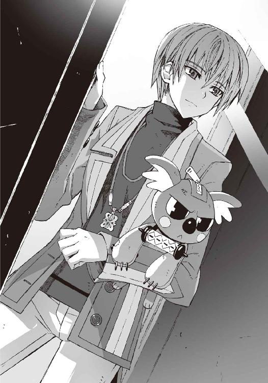
「......瑤と......部長？」
朱浬さんが逆光に目を細めて、不機嫌そうな声を出す。
「あ......部長......」
『無事だったんですね！』
嵩月と操緒が表情を明るくして、歓声を上げ、
『いや、無事じゃないよ！ これはただの機巧偶人だから！ 本体は拉致られたままだから！』
ヌイグルミが必死で首を振る。
「あ......そうか」
僕は軽く落胆した。科學部部長、塔貴也の本体は、あくまでも引きこもり気味の高校生。ヌイグルミは、彼が脳波で操っているだけのリモート人形に過ぎないのだ。真日和たちに誘拐されたのは、もちろん彼の本体のほうである。
『ごめんなさい。こっちの姿のほうが見慣れてるから、つい......』
さりげなく失礼なことを言いながら謝る操緒。
「下水管に詰まっていたのを見つけたんだ。どうやら六夏の機巧魔神の能力に巻きこまれて、排水溝に流されていたらしい」
「ああ......」
僕は納得した。このヌイグルミ、普段はアニアが持ち運んでいる。だから科學部の部室での戦闘に巻きこまれて、下水管に流れついた可能性は高かった。
道理で全身ずぶ濡れになっているわけである。それにちょっと臭う。
「でも......機巧偶人を操る余裕があるってことは、特に危害は加えられてないんですね」
朱浬さんが怪訝顔で部長に確認した。不細工なコアラのヌイグルミはうなずいて、
『うん。アニアくんは今、真日和とゲームで対戦プレイやってる。あと、鳳島氷羽子は料理が上手いね。サンマも脂がのって美味かったよ』
『あのゴス女、自炊するんだ......和食派なんだ』
操緒が妙なところで感心する。
「......監禁されてる場所はわかります？」
朱浬さんの質問に、ヌイグルミは水滴を飛ばしながら首を振った。
『さすがにわからないな。真日和の使い魔でかなりの距離を移動したから、洛高からだいぶ離れてると思うよ。たぶんどこかのマンションだと思うけど、自力での脱出はちょっときつい』
「犯人の数は？ そこにいるのは鳳島氷羽子と真日和だけですか？」
『いや......仮面の女と男がいるよ』
「仮面の......男？」
僕は驚いて腰を浮かせた。もう一人仲間がいた、ということか。いや──
朱浬さんが、ふふっ、と愉しそうに微笑み、
「そいつが氷羽子の契約者で、真日和の雇い主、という可能性が高そうね」
「ああ、ボクもそう思う。ちまちまとこちらの戦力を削るような戦い方をしていたのも、敵が大きな組織ではない証拠だろう──それが敵の全戦力と見て間違いないはずだ」
瑤は余裕の態度で断言する。
「上出来だ──これでだいたいの作戦が決まったよ、朱浬」
「作戦？」
反射的に訊き返して、そして朱浬さんは顔をしかめた。
「......って、どうしてあなたが仕切ってるのよ？」
「これはボクの仕事だからさ。学生連盟から正式に鳳島氷羽子と真日和秀の滅殺許可が出た」
「......滅殺許可!?」
朱浬さんが表情を硬くした。嵩月が息を呑む気配がした。僕は操緒と顔を見合わせ、絶句する。瑤は真日和たちを哀れむように目を伏せて、
「やりすぎたんだ、連中は。悪魔の能力を法律で裁くわけにはいかないからな。わかるだろ？ これは巡礼者商連合も承認済みだ」
そして瑤は、うっすらと微笑んだ。
「ボクの白銀は、殲滅戦向けだからね......氷羽子と真日和はボクが始末する。朱浬は、その間、敵の元演操者を抑えていてくれればいい。夏目智春はアニア嬢と塔貴也を救出しろ」
学生連盟ＧＤの少女が放つ殺気に、その場の空気が凍りついた。
瑤は自分一人で、二体の使い魔を始末すると言っているのだ。まるでそれが当然のことであるように。そして彼女は、実際にそれをやってのけるだろう。
彼女はＧＤ最強と呼ばれている機巧魔神──《白銀》の演操者なのだ。
「でも、救出って......どうやって......？」
アニアたちが人質になっている状況では、瑤の機巧魔神は使えない。ありとあらゆる存在を空間ごと切断する《白銀》の能力は、あまりにも強力すぎるからだ。
彼女が機巧魔神を喚び出す前に、僕たちは、どうにかしてアニアと部長を助け出さなければならない。だけど、そんなことができるのか──？
「きみたちは普通に人質交換に応じてやればいい」
「でも......それじゃあ真日和たちに逃げられるんじゃ......」
「それはない。ボクがその直後に奇襲をかける。逃がしはしないよ」
「奇襲？」
そんな無茶な、と僕は思った。
たしかに瑤は心強い援軍だが、真日和たちにとって予期せぬ伏兵というわけではない。学生連盟ＧＤが自分たちの敵に回ることくらい、彼らも予想しているはずだ。
鋭敏な感覚を持つ使い魔たちが相手では、待ち伏せや設置型の罠は無意味だろう。飛行能力を持つ氷羽子の使い魔がいては、空中からの奇襲も不可能。いくら瑤でも、彼らに気づかれずに接近することができるとは思えない。しかし──
「協力してくれるそうだ。彼女が」
瑤はそう言って、開けっ放しだった礼拝堂の玄関を指さした。
緊張した姿でそこに立っていたのは、垂れ耳ウサギに似た髪型の小柄なシルエット。
僕は驚いて彼女の名を呼んだ。
「ひかり先輩......」
瞬間移動能力を持つ悪魔の少女は、思い詰めたような表情で、小さくうなずいた。
○
久々に訪れた鳴桜邸は、見るも無惨な姿に変わっていた。
どういう爆薬の仕掛け方をしたのか知らないが、建物の正面側は見事に全壊。うずたかく積まれた瓦礫の山に変貌を遂げている。そのくせ建物の奥側の半分ほどは、あちこち中途半端な形で壁や柱が残って、そのせいで余計に廃墟らしさが醸し出されていた。
なぜか庭の桜の木だけがほぼ無傷の姿で残っており、その上にぽっかりと浮かんだ丸い月が、どこか間の抜けた姿をさらしている。
時刻は間もなく午前零時になるところだ。
「さて......そろそろ時間だけど」
張り巡らされた「立入禁止」の黄色いテープをまたいで、朱浬さんが鳴桜邸の敷地に入った。
真日和たちの姿はまだ見えないが、僕はすでに緊張しすぎて気分が悪くなっていた。こんな形で焦らされるのは、本当に精神力を磨り減らす。佐々木小次郎が決闘に勝てないわけだ。
「んー......なんか、ドキドキするわね」
しかし環緒さんは、のんきな口調でそんなことを言って微笑んでいた。
僕はさすがに不安になって、
「いやいや、そんな他人事みたいに......」
本当に危険なのは僕ではなく、狙われている環緒さんのほうなのだ。なのに、この人の余裕はなんなんだ？
「大丈夫、なんとかなるわよ。最悪、あたしのことは見捨てていいからね」
「え？」
思いがけない環緒さんの言葉に、僕は困り顔で彼女を見返した。しかし環緒さんの表情には、自棄になっているような気配はなかった。彼女は、うにうにと唇を波打たせて笑い、
「──真日和ってのにも言われてたでしょ。もともと、きみがあたしを守るために戦う理由はないのよ。あたしを守るのはべつの人間の役目」
「あ......」
そういえば、たしかに真日和はそんなことを言っていた。
最初は、なにを言われているのかわからなかった。だが今は、その言葉の意味がわかる。
環緒さんは〝一巡目の世界〟から来たもう一人の操緒で、だから逆に、僕の知っている操緒とは決定的に別人なのだ。
環緒さんは、僕が生き返らせたいと願っている操緒ではない。ましてや彼女の姉ですらない。
この世界の操緒の魂を削ってまで、僕が環緒さんを守ろうとするのは、なにかが根本的に間違っている。〝一巡目〟の操緒を守るのは、〝一巡目〟の僕のはずなのだ。
『でも......ふられちゃったんだよね？』
操緒がふわふわと空中を漂いながら、哀れむような視線を環緒さんに向けた。
環緒さんは、むっと唇を尖らせて、
「だから違うわよ......いろいろ事情があったのよこっちも。ふったとかふられたとかでいえば、むしろこっちがふってやったみたいな」
『だけど......お姉ちゃんのメモリはもう要らないとか言われて、手切れ金とか渡されて』
「手切れ金じゃないわよ！ 捨てられた愛人みたいに言うな！」
同じ顔をした二人が僕を挟んでいがみ合い、そして朱浬さんがぽつりと、
「本当にそうなのかしら......」
「黒崎さんまで......」
環緒さんが拗ねたように頬を膨らませた。朱浬さんは小さく微笑んで、
「あ、いえ、そうではなくて。彼女たちが環緒さんを執拗に追い回している理由......本当に、フラッシュメモリのデータが欲しいから、なのかしら」
「そういわれても......あたしには、ほかになにも持ち合わせがないよ？ 実は世界間の移動の原理もよくわかってないし」
だろうな、と僕たちは一斉にうなずいた。なんとなくそれは気づいてました。
『んー......お姉ちゃん、そんなんでどうやってこっちの世界に来たの？』
操緒がぞんざいな口調で質問した。僕は、固唾を呑んで環緒さんの反応を見守った。
そんなことを訊いても大丈夫なのだろうか。答えられなかったときに環緒さんの面目が丸つぶれになってしまうのでは──？
しかしそこまで心配する必要はなかった。環緒さんは意外にあっさりした口調で、
「それはもちろん悪魔の力よ。直貴......いえ、一巡目の世界の智春の機巧魔神の能力」
「え」
僕と操緒は今度こそ本気で絶句した。
機巧魔神の能力、と環緒さんは言ったのか。
兄貴の機巧魔神の能力は、世界を移動する能力、だと!?
しかし、僕たちにそれをもう一度訊き返す余裕はなかった。轟然と風を巻き上げて、二体の使い魔が、空から舞い降りてくるのが見えたからだ。
『──来たか......』
僕たちの耳元のイヤフォンから、無線越しの瑤の声が聞こえてくる。
真日和の風獣の背中に、アニアと部長。
氷羽子の不死鳥の背中には、例の仮面の女の姿がある。
部長とアニアはテープで口を塞がれ、両手を拘束されていたが、意外に元気そうだった。
それはまあ、人質だのなんだのいっても、しょせん同じ学校の生徒だし、彼らがアニアたちを拷問する理由もないわけだが──
とはいえ、仮面の女が六夏に負わせた傷のことを考えれば、甘く見ていい相手ではないのも事実だ。彼らは目的のためには手段を選ばない。少なくともその覚悟で行動している。
加賀篝隆也のときと同じだ。たぶん、ああいう思い詰めた連中が、本当に恐ろしい敵なのだ。
「真日和......」
鳴桜邸の瓦礫の上に着地した風獣の背中に、僕は呼びかけた。
真日和はゆっくりと首を振り、
「面倒くさい交渉は抜きッスよ、夏目くん......こっちには、傷つけてもあんまり心が痛まない人質が約一名いるッス」
そう言って真日和は、使い魔から下りると、部長の顔にナイフを突きつけた。
『なるほど......！』
操緒が納得したような声を出す。そんな操緒を非難するように、部長がもごもごとなにかを叫んでいた。まあ、たしかに本人にとっては、その評価には納得できないだろう。
「んー......それで、あたしはどうすればいいの？」
環緒さんが腕組みしたまま真日和に訊いた。
「とりあえず、真ん中まで出てきて欲しいッス」
真日和は、ナイフの先端で、瓦礫の山の中央あたりを指し示した。
「......真ん中？ それで？」
「そしたらこっちも人質を一人解放するッス。それから環緒さんがこっちに到着した時点で、残りの一人も解放するッス。フェアな取引ッス」
「いや......フェアって......」
環緒さんが呆れたように呟いた。操緒もうんざりしたように首を振り、
『人質を拉致っといてフェアもクソもないよ』
「それはいわない約束ッス」
真日和は居心地悪そうな顔でそう言った。
フェアかどうかはともかくとして、狡猾なやり方ではあった。その手順なら、真日和たちの手元には常に一人以上の人質が残っていることになる。僕たちが反撃できるような隙はない。
鳳島氷羽子の不死鳥は、仮面の女を地上に降ろしたあとで、再び空中に舞い上がっていた。奇襲を警戒しているのだろう。
「──言っとくけど、余計な真似はしないでくださいよ。そこから一歩でも動いたら、俺らは即、逃げるッスから」
「逃げるって......」
僕は軽く脱力したが、考えてみれば、それは人質を傷つけると脅すよりも遥かに効果的だった。朱浬さんが飛行パックを装備していない今、真日和の風獣に追いつける者はいない。
真日和から、逃げる、という選択肢を奪わない限り、彼らの優位は動かないのだ。
つまり奇襲のチャンスは一度きり、ということだ。
「ＯＫ、わかったわ」
ものすごいプレッシャーを感じているはずなのだが、環緒さんは、のんびりと肩をすくめてうなずいた。ヒールのある靴で歩きにくそうに、瓦礫の山を登っていく。
それを確認して、真日和もアニアを解放した。
アニアは恨みがましい目つきで真日和を睨み、もごもごと捨て台詞らしきものを吐いてから、もたもたと僕たちのほうへと歩き出した。
ちょうど瓦礫の山の中央あたりで、アニアと環緒さんの位置が交差する──
真日和の風獣のすぐ背後から、芝居がかった声が流れ出したのは、その直後だ。
「ところで......さっきの条件だけど」
「え？」
真日和が愕然とした顔で振り返った。そこに忽然と現れていたのは、雪原瑤だ。
「──一歩も動かなければ、いいんだな？」
意地悪い口調で呟いて、瑤が笑う。たしかに彼女は動いていない。空間を跳び越えて出現しただけだ。
「瞬間移動!? 沙原ッスか──!?」
真日和は咄嗟に、人質である部長を楯にしようとした。
「遅い！」
瑤は右脚を一閃し、真日和の腕からナイフを蹴り飛ばす。
「ＧＤ！」
上空に待機していた氷羽子が叫んで、自らの使い魔に攻撃を命じた。だが、
「──白銀、抜刀！」
奇襲を仕掛けた側である瑤の攻撃のほうが早かった。
彼女の影の中から機巧魔神の巨大な腕が現れて、握っていた長剣を振り下ろす。その刃が描いたのは、魔法陣をまとった虹色の軌跡だ。機巧魔神《白銀》の空間切断能力──
氷羽子の使い魔の氷の翼が、その空間の亀裂に巻きこまれ、胴体の付け根から切り裂かれた。
血飛沫の代わりに、氷の破片が飛び散った。
片翼を失った氷の不死鳥は、為す術もなく地上に落下する。
「──っ！」
背後から瑤に襲いかかろうとしていた仮面の女が、弾かれたように自ら後方に飛んだ。寸前まで彼女が立っていた場所に、散弾が降り注ぎ、土煙を巻き上げた。
朱浬さんが左腕のショットガンで、仮面の女を攻撃したのだ。
機械化された朱浬さんの腕に内蔵されているのは、鉛弾を打ち出す本物の銃だ。たとえ元演操者といえども、その攻撃を無効化するのは不可能だ。
「ひいっ！」
わけがわからないまま奇襲に巻きこまれて、部長が頭を抱えて逃げまどっている。
そんな彼を庇うようにして、銀色の機巧魔神が完全に姿を現した。ＧＤ最強と呼ばれる機巧魔神。雪原瑤の《白銀》だ。そして、
「来い、鐵──！」
アニアたちの近くに駆け寄りながら、僕は自分の機巧魔神を喚び出した。
操緒の姿がかき消え、僕の影をこじ開けるようにして漆黒の魔神が出現する。
「アニア！ 環緒さん！ こっちに──！」
二人を庇うように立ちながら、僕は、墜落した氷の不死鳥に向き直る。
瑤の攻撃で片翼を失った不死鳥は、地上で激しくのたうっていた。今なら《鐵》の攻撃で、確実にとどめが刺せるはず。
「鐵──！」
漆黒の魔神の右腕から、濃密な闇が滲み出た。それを高圧の重力の砲弾に変えて、《鐵》が撃ち放つ。その直前、
月光を背にして、僕の頭上から美しい影が舞い降りてくる。
氷の薙刀を振り上げた、黒髪の美しい少女の影が！
「──愚かなことを。後悔なさいまし、夏目様！」
「しまっ......」
一瞬が永遠に引き伸ばされるような感覚の中で、僕は死の予感を覚えていた。
《鐵》の防御は間に合わなかった。
氷羽子の振り上げた薙刀が、ゆっくりとした軌跡を描いて、僕の心臓目がけて突き出される。
鋭く研ぎ澄まされた切っ先が、胸元に吸いこまれた。その刃が、
「なっ......!?」
氷羽子の驚愕の声とともに、消滅した。
続けざまに打ち出された漆黒の弾丸が、残っていた薙刀の刃も撃ち砕く。
それは環緒さんの攻撃だった。触れるものを消滅させる闇色の弾丸だ。指鉄砲を構えた環緒さんが、氷羽子に狙いをつけている。氷羽子は美貌を口惜しげに歪めながら後退し、その隙に──
《鐵》が咆吼した。
突き出した機巧魔神の右腕から、魔法陣が幾重にも砲身のように重なって伸びた。漆黒の重力球が、その内側を加速する。やがて黒い砲弾と化した重力球は、地上をのたうつ氷羽子の使い魔に叩きこまれ、
「──────────ィィｌ」
耳をつんざくような高周波の絶叫を上げて、使い魔の巨体が吹き飛んだ。残っていたもう一枚の翼が砕け散り、氷の不死鳥の全身が痙攣した。
「──シャーリーズ！」
氷羽子が絶叫する。常に冷静だった氷羽子の瞳に、憎悪が浮かぶ。彼女の手の中に、いびつに歪んだ分厚い薙刀が現れた。彼女の周囲に浮き上がったのは、小石ほどの大きさの氷塊だ。
無数の氷塊が衛星のように空中を舞って、氷羽子の身体を覆い隠し、
「ヤバ......っ！」
環緒さんの表情に焦りが浮いた。
氷塊の壁に邪魔されて、環緒さんの弾丸は、氷羽子に届かない。
「──お覚悟を」
うっすらと笑って、氷羽子が薙刀を構えた。
「くそっ......鐵！」
漆黒の機巧魔神の巨大な拳が、横殴りに彼女に襲いかかる。しかし、そのときには氷羽子の身体は、すでに僕の頭上へと舞っていた。そして、薙刀を振り上げる。
その氷羽子のさらに上空に、もう一人の黒髪の少女の姿が浮かび上がった。灼熱の炎を全身に、羽衣のようにまとった少女の姿が──
「......嵩月奏っ!? いつの間に!?」
異変に気づいた氷羽子が、僕への攻撃を諦めて空中で身体を捻った。そんな彼女の頭上へと、嵩月の炎が降り注いだ。氷羽子を守っていた氷塊が次々に溶け崩れ、薙刀の刃に亀裂が走る。
しかし全身に火の粉を浴びながら、氷羽子の口元には美しい笑みが浮いていた。
「愚かしいですわ、嵩月奏。非在化の進んだその身体で、鳳島と戦うおつもりですか──？」
氷羽子の言葉に、僕の心臓が跳ねた。
着地した嵩月の全身が、月光の下で淡く透けていた。
嵩月に、新たな非在化の発作が起きている。氷羽子と戦うために膨大な魔力を放出し続けているせいだ。今も嵩月の全身には、気が遠くなるほどの痛みが駆け抜けているはずだ。
彼女が氷羽子と戦えば、こうなることはわかっていた。だから僕たちは彼女を教会に残して来たのだ。なのに嵩月は僕たちのあとを追いかけてきて、氷羽子に絶望的な戦いを挑んでいる。
「嵩月......どうして......」
僕は彼女の背中に問いかけた。
しかし嵩月は、なにも答えない。ただ淡い緑に輝く瞳で氷羽子を睨み、
「夏目くんは......傷つけさせない......」
「いいでしょう」
氷羽子は憐憫の眼差しを嵩月に向けた。彼女の手の中に、これまでよりも遥かに強烈な冷気をまとった薙刀が現れた。
「ならばこの手でひと思いに──氷鳳！」
「......焔月！」
嵩月の全身を包む炎が勢いを増し、彼女の手の中に、青白く輝く炎の刃が現れる。
「──よせ、嵩月っ！」
僕は、絶叫した。非在化の進んだ今の嵩月が、そんな濃密な魔力の結晶を生み出して無事でいられるとは思えなかった。
しかし二人の間に割って入ろうとした僕の目の前に、氷羽子の使い魔が現れる。両方の翼を失った氷の不死鳥が、苦痛にのたうちながら《鐵》に突っこんできたのだ。
「どけ......使い魔っ！」
《鐵》の拳が使い魔を殴りつけた。使い魔の氷の身体が砕け散った。しかし使い魔は反撃をやめない。それどころか、徐々にだが、破壊されたはずの翼が再生しつつある。
この使い魔を倒すには、もっと巨大な魔力が必要だった。
《鐵》が最大出力の攻撃を叩きこめば、今の弱った状態の使い魔なら滅ぼせる。
だがそれだけの魔力を放出すれば、《鐵》の体内に封印されている操緒の魂も犠牲になる。操緒が感情を失っていく──
そのとき感じた一瞬の恐怖が、僕の決断を鈍らせた。氷の不死鳥が《鐵》の腕を押さえつけ、二体はその場で絡み合い動けなくなる。その直後──
「ヴィヴィアン──！」
真日和の絶叫が、僕の鼓膜を震わせた。彼が戦っていたのは、瑤の《白銀》だ。
金色の毛並みを持つ真日和の使い魔が、《白銀》の剣撃をまともに喰らって、胴体を両断されていた。空間の亀裂に呑みこまれ、風獣の身体が消滅していく。
しかし風獣は、最後の力を振り絞るようにして、風撃を放った。
その攻撃は瑤ではなく、仮面の女と、彼女と戦っていた朱浬さんを巻きこんで炸裂した。
「ぐっ......!?」
まったく予期せぬ方角からの攻撃に、朱浬さんの身体が吹き飛んだ。満足な受け身もとれないまま、彼女は瓦礫の山に激突して跳ねた。
全身をズタズタに切り裂かれた風獣が地面に倒れたとき、朱浬さんも意識をなくしていた。
そして朱浬さんと同じように風獣の攻撃を受けた仮面の女は、無傷のまま、その場所に立っていた。元演操者は、魔力による直接攻撃をすべて無効化する──
「元演操者の魔法無効化能力か......」
雪原瑤が、仮面の女と対峙した。
さすがに瑤の《白銀》は強かった。すでに氷羽子の不死鳥を撃墜し、真日和の風獣に瀕死の重傷を負わせている。
しかし、仮面の女はその《白銀》を生身で平然と見返していた。二挺のコンバットナイフを、胸の前で十字に構える。
瑤はやれやれと首を振り、
「その能力は、機巧魔神が与える物理的なダメージまでは防げない。ボクの白銀は、はる奈の亜鉛華とは違って近接戦闘型の機巧魔神だ。元演操者が相手でも、ボクはいっこうに構わないよ」
その瑤の言葉が終わる前に、仮面の女が動いた。
疾走してくる女を目がけて、《白銀》が無造作に剣を振り下ろす。《白銀》の空間切断能力は、仮面の女には通じない。だが、その巨大な剣もまた、生身の人間に受け止められるようなものではなかった。
仮面の女は、《白銀》の最初の攻撃をかわして、その隙に瑤を襲うつもりだったのだろうが、瑤はその動きをも読んでいた。《白銀》の攻撃は途中で軌道を変え、咄嗟にそれを防ごうとした仮面の女のコンバットナイフを叩き折る。
「──っ！」
激突の反動で女は吹き飛ばされた。普通なら、そこで戦いは決着していただろう。だが、猫のような身のこなしで空中で体勢を立て直し、仮面の女は音もなくその場に着地する。溜息が出そうなほどの鮮やかな体術だ。そして彼女は、奇妙な姿で身構えた。ナイフ使いというよりは、抜刀する直前の剣士のような膝立ちの構え。
それを見た瑤の表情が凍りついた。
「......その動き......まさか、きみは!?」
愕然と呟く瑤の声には、かすかな恐怖の色が滲んでいた。
仮面の女がゆっくりと立ち上がった。その顔から仮面が落ちた。
木彫りのふざけた仮面の下に、長い前髪で右目を隠した少女の素顔が現れた。その頬に、工業製品のシリアルに似た奇妙な紋章が浮かび上がっている。それはＥＸ−１０６、と読めた。
「馬鹿な......」
瑤が呟いた。ナイフを構えた少女は微笑んで、
「さすがに強いわね、瑤。相変わらずの......抜群の戦闘センス」
そしてゆっくりと《白銀》に向かって歩き出す。
「だけど、あなたに剣を教えたのは私。あなたでは私には勝てないわ」
「なぜだ──冬琉!?」
瑤が彼女の名前を呼んだ。
最強と呼ばれたＧＤの表情に、動揺が波紋のように広がっていく。
動揺していたのは、瑤だけではない。僕や嵩月、それにアニアもひどく混乱していた。
だが、冷静に考えれば手掛かりはあったのだ。
あんなデタラメな戦闘能力を持つ元演操者が、同じ世代にそう何人もいるはずがない。彼女が仮面で顔を隠していたのは、僕たちの顔見知りだったからではなかったのか。
冬琉会長は、仮面の女に化けて六夏を倒した。
そして、そのあと第三生徒会室に移動して、自ら生徒会室を爆破したのだ。
怪我人が健康な人間を装うことはできないが、健康な人間が怪我人のふりをするのは難しくない。ましてや、ムサ苦しい男ばかりの集団にいて、女慣れしていない第一生徒会の救助隊を騙すのは簡単だったはずだ。
それに彼女は、六夏の返り血をたっぷりと浴びていた。それは重傷患者のふりをするのに、実に都合がよかったはずだ。しかしそれでもわからないことがある──
冬琉会長は、なぜ氷羽子たちに協力してこんなことをしているのだ──？
洛高の生徒会関係者で、唯一の常識人だったはずの彼女が......！
「なぜきみが......こんな......」
瑤が悲痛な声で叫んだ。
しかし冬琉会長は──橘高冬琉は答えない。残った一本のナイフを握り直し、無造作に足を踏み出して、
「冬琉──っ！」
瑤の絶叫とともに、《白銀》が剣を振り下ろした。冬琉のナイフが──刃渡り二十センチに満たないナイフが、長さ数メートルもの機械仕掛けの悪魔の剣を、受け流す。
小さな火花を無数の星のように散らして。
バイオリンに似た美しい音色を奏でながら。
「たしかに白銀は強力な機巧魔神よ、瑤。だけど、あまりにも強力すぎるその空間切断能力は、あなたから大切なものを奪ってしまった」
「機巧魔神の攻撃を、生身で受け流すのか──!?」
予想外の冬琉の防御に、瑤の対処が一瞬遅れた。《白銀》の脇に隙が出来る。
「──あなたは修羅場をくぐった経験がない。血反吐を吐き、泥にまみれて積み上げた靱さがない。白銀の強さが、あなたから戦闘経験を──貴重な成長の機会を奪った」
冬琉が右手をゆっくりと伸ばし、その手に握られていたナイフを《白銀》の膝の裏側に差し入れた。その切っ先は、機巧魔神の護法装甲をあっさりと貫いて、深々と突き立った。
膝関節を破壊された《白銀》が、その場にがっくりと倒れこむ。瑤が焦燥に唇を歪め、
「......まだだ、冬琉！ 白銀はまだ......」
「硬すぎる刀は脆く、鋭すぎる刃は欠けやすい──白銀は最強の機巧魔神であるが故に、使い手を育てることができない。その力では、私には勝てない」
冬琉がわずかに後退する。
最後のナイフを《白銀》に突き刺して、彼女はすべての武器を失っている。今ならば簡単に彼女を倒せる。そう判断して、瑤は《白銀》の剣を上段に振り上げた。
その瞬間、《白銀》の胴体は完全に無防備になり、冬琉は瓦礫の下に右手を差し入れる。
そして引き抜いた冬琉の手に握られていたのは、一振りの日本刀──
戦陣用の黒漆太刀。
これが理由か、と僕は思った。人質交換の舞台として、彼女が鳴桜邸の跡地を選んだ理由。
敷地内に散らばる瓦礫の中に、必殺の武器を隠しておくため──
そう。瑤はあまりにも強かった。だから彼女では冬琉に勝てない。
戦場を選び、罠を張り、相手を欺くために仮面を被る。それはすべて弱者の戦術だ。
「──冬櫻、抜刀！」
冬琉が巨大な太刀を抜いた。
刀身を小柄な身体に巻きつけるようにして旋回し、その刃は、自分の倍以上の身長の機巧魔神の胴体を、下段から肩口まで斬り上げ、破壊する──
冬琉の太刀は、機巧魔神を斬り裂く。
「くはッ......！」
短い悲鳴だけを残して、瑤が倒れた。機巧魔神からのダメージの逆流を受けたのだ。
僕は呆然とその姿を見つめた。
瑤が負けた。それも冬琉会長に──!?
「う......嘘......」
呆然と呟いたのは朱浬さんだった。傷ついた身体を引きずるようにして、彼女は破壊された《白銀》へと歩み寄った。深々と切り裂かれた胸部ハッチの傷口に触れ、そして、
「嘘よっ......姉さん──っ！」
ただの人形へと変わってしまった機巧魔神にしがみついて、絶叫する。
「くっそおおおおおっ──！」
僕はなんの意味も成さない雄叫びを上げた。そして《鐵》が咆吼した。傷ついた氷羽子の使い魔を腕力で強引にねじ伏せて、嵩月と戦っている氷羽子本人に襲いかかる。
しかしその前に立ちはだかったのは、冬琉だった。
《鐵》が放った重力球は、彼女の野太刀に切り裂かれて消滅する。
そんな僕の視界の隅で、嵩月が膝を突くのが見えた。
氷羽子の攻撃に耐えきれず、嵩月がまとう炎が頼りなく揺らいだ。嵩月の体力が尽きたのだ。非在化がさらに進行し、今や彼女の四肢を完全に汚染している。それでも無理に立ち上がろうとした嵩月は、バランスを崩して、その場に倒れこんだ。
「嵩月っ！」
僕は嵩月に駆け寄ろうとするが、冬琉に邪魔されて動けない。下手に冬琉に隙を見せれば、《鐵》も瑤の機巧魔神の二の舞だ。
瑤は意識をなくして倒れている。彼女を責めることはできなかった。瑤が弱かったわけではない。冬琉の戦闘能力が異常なのだ。
瑤の機巧魔神にすがりついて、朱浬さんは放心状態だった。
そんな朱浬さんを横で支えているのは、アニアだった。逃げろと言ったのにアニアはそれを拒否して、朱浬さんの耳元で彼女を叱咤し続けている。部長は腰を抜かしたように瓦礫の中に座りこんでいるが、それを責めるのも酷だろう。機巧魔神も悪魔の力も持たない人間が、いきなりこんな状況に放り込まれたら、普通はそうなる。
「もうやめて！」
声を振り絞って叫んでいたのは、環緒さんだった。動けなくなった嵩月を庇って胸に抱き寄せたまま、環緒さんは氷羽子を睨みつけ、
「お願いだから、もうやめてよ！ あたしに用があるなら、どこへでも連れて行けばいいわ。だからこれ以上の戦いはもう──」
「いいえ──あなたは勘違いしています。水無神環緒」
氷羽子はそう言って優艶に微笑んだ。
「この状況こそが鳳島と、我が主の望みだったのですよ！ あなたが絶望して、死の危機に直面する今のこの姿こそが──！」
冷たく透きとおった薙刀を、氷羽子は無造作に振り上げた。その刃が狙っているのは嵩月の首。そしてそれを庇っている環緒さん自身だった。
けれど氷羽子の腕が振り下ろされることはなかった。
彼女の使い魔──氷の不死鳥が、傷ついた翼を大きく広げたからだ。
ボロボロに傷ついた使い魔は、地面をのたうつようにして、氷羽子を無理やり突き飛ばした。そして彼女を庇うように、氷羽子の上に覆い被さった。
氷の羽毛に覆われたその背中が、突如、甲高い音を立てて砕け散る。砲弾のように高速で飛来した漆黒の球体が、使い魔の背中に直撃したのだ。
僕はただ、呆然とその光景を眺めていた。
氷羽子の使い魔を攻撃したあの漆黒の球体は──
「重力球──!?」
僕は、激しく混乱しながら振り返った。
今の攻撃は、同じだった。《鐵》と同じ、機巧魔神の重力制御能力による〝黒の拳撃〟だ。
だがもちろん、それを放ったのは《鐵》ではない。
冬琉の攻撃を凌ぐだけで限界だった僕に、そんな攻撃を放つ余裕はなかった。
だとすれば、今のは《鐵》と同じ能力を持つ機巧魔神の攻撃、なのか？
「──いいえ、違う。そうじゃない」
橘高冬琉は首を振り、なぜか満足そうに微笑んだ。
「今のは完全なる空間制御能力の応用ね。それがあなたの機巧魔神の能力なのでしょう、夏目直貴？」
彼女が見ていたのは、かつて鳴桜邸と呼ばれていた建物の中庭。
冬枯れの桜と満月を背負って──鋼色の機巧魔神を従えた男が立っていた。
○
「まさか......ここまで予定が狂うとはね......」
夏目直貴と呼ばれていた男は、破壊された鳴桜邸を見回して、少し寂しげに苦笑した。
「兄貴......？」
苦悶の呻きに似た声で呟く僕に、直貴は淡く緑に輝く瞳で笑いかけ、
「あと少しですべて終わるところだったんだが、まあいいか。どうやら、きみが歴史を狂わせている張本人だったようだな、橘高冬琉。道理で王立科学狂会の機密がダダ漏れだと思ったよ」
「夏目......直貴......！」
嵩月を膝の上に抱いたまま、環緒さんが兄貴の名前を呼んだ。怒りの浮いた瞳を細め、
「なにしに来たのよ、今ごろ！ 助けに来るなら、もっと早く......」
直貴を非難しようとした彼女の言葉は、途中で失速して掠れて消えた。
長いコートの袖からのぞく彼の指先が、うっすらと白煙を噴き上げている。
その肌は、まるで強い酸を浴びたように焼け爛れていた。
いや、こうしている今でさえ、徐々に焼け爛れつつあるように見えた。
「......直貴、あなた......」
環緒さんが絶句した。
彼女の反応で僕は気づいた。環緒さんも知らなかったのだ。直貴の身体に起きている異変に。彼が、僕たちの前から姿を消した本当の理由に。
「──当事者たちにはどんなに複雑に思えても、傍目にはとても簡単な出来事がある」
沈黙した僕たちに代わって、口を開いたのは冬琉だった。
彼女は独り言のように、淡々と一方的に語り続けた。
「〝一巡目〟の夏目智春は、鋼色の機巧魔神の能力で世界の境界を超えて〝二巡目の世界〟に出現した......それは今からおおよそ四年前の出来事」
「............」
直貴は黙って彼女の言葉を聞いていた。特に否定する理由がなかったのだろう。
四年前に、彼らは〝一巡目の世界〟から、この〝二巡目の世界〟にやってきた。
それは、環緒さんが僕たちに語った内容と同じだった。
「──ひとつの世界に同じ人間は二人要らない。あなたがこの世界に来た時点で〝二巡目〟の夏目智春の存在は、上書きされて消滅するはずだった」
う、と息を呑む僕を見つめて、冬琉が微笑した。
「しかし、そうはならなかった」
「そうだ」
直貴がうなずいた。
「なぜなら、そのとき〝二巡目〟の夏目智春はすでに死んでいたから」
「え？」
僕は一瞬呆気にとられて、そしてどこかで記憶が繋がるのを感じた。
四年前。そう、あの出来事がすべての始まりだったのだ。僕が九死に一生を得た──
「......四年前の......飛行機事故......？」
「ほんの数秒間の差だったんだ」
直貴が懐かしそうに笑った。
「僕がこの世界に出現したのは、〝二巡目〟の夏目智春が絶命した直後だった。あのときは焦ったよ、正直。本当になにもかもイレギュラーだった」
「............」
僕は笑う気になれなかった。なにがおかしいのかわからない。すると、ここにいる僕は一度死んだ人間ということか。幽霊なのは操緒ではなく、僕のほうなのか？
直貴は、ちらりと自分の背後の機巧魔神を振り返り、
「──智春を蘇生させるのは簡単だった。この鋼の能力を使って時間を巻き戻し、適当な救命措置を施してやればいい──だけど、それをやれば、同じ世界に二人の人間が存在することになってしまう。それが世界にどんな影響を及ぼすかわからない」
「そして......それ以上に問題だったのは、あなたが悪魔化したこと......でしょう？」
「まあね」
直貴は焼け爛れた自分の掌を、胸の前に持ち上げて苦笑した。
彼の肌から立ち上る蒸気は、ちょうと温水と冷水が混ざり合うときに発生する霧に似ていた。
〝一巡目〟と〝二巡目〟の世界の影響力の差が、直貴の肉体を傷つけている。ちょうど海水に放りこまれた淡水魚のように。
「......べつに計算外ってわけでもなかったけどね。異世界から来た人間は、特殊能力を持った悪魔に変わる。それは予想されていたことだから。だが、僕の場合は、予想以上にその反動が大きかった」
「なぜなら、あなたはすでに演操者だったから......演操者でありながら、悪魔という矛盾する存在になってしまったあなたは、この〝世界〟というシステムから致命的なバグと見なされて、攻撃を受けている」
「まあ、たぶんそういうことなんだろうな......通常とは違う、この焼けつくような非在化は、僕が魔力を使わなくても、ゆっくりと進行する」
「だからあなたは、ひとつの安全装置を用意した」
「そうだ。僕はバックアップを用意した。死んだ夏目智春を生き返らせる代償として、水無神操緒を機巧魔神の副葬処女にした。そして夏目智春に鐵を与えた。もしも自分が目的を果たせなかったときに、それを彼に引き継がせるために」
「......バックアップ......!?」
直貴の言葉に、僕はようやくすべてが繋がるのを感じた。
入学式の前日に届いた謎トランク。まるで僕のために用意されていたような、科學部という怪しい集団。そして遺跡に残されていた、兄貴からの意味不明のメッセージ。
あれらはすべて──僕を自分のバックアップに仕立て上げるための準備だったのか？
「雪原瑤に白銀を授け、黒崎朱浬の肉体を機巧化するように手配したのもあなた。そしてあなたは洛高に科學部を設立し、万一の場合に、夏目智春を支援できるようにした」
「かなり苦労したけどね......」
直貴が肩をすぼめて嘆息した。
「まあ、協力してくれる人間がいたから、どうにかなった」
「......あなたたち以外にも〝一巡目の世界〟から来た人間がいたから？」
「ああ。でも彼らは、正確に目的の時代に跳べたわけじゃない。何十年──あるいは何百年も前の遠い過去に跳ばされた連中もいる」
「神聖防衛隊や、巡礼者商連合、それに王立科学狂会と悪魔の家系。彼らは皆、そういう人々の子孫なのね。世界の破滅を回避するために過去にさかのぼり、長い歳月の間に本来の目的が歪んで伝わってしまった跳躍者の子孫──たとえば潮泉老人も」
「......そうだよ」
そこでようやく、直貴の顔に訝しむような表情が浮かんだ。
彼も疑問に思ったのだ。なぜ冬琉が、そんなにも詳しく直貴の事情を知っているのか──？
たしかに冬琉は王立科学狂会の会員で、かつては学生連盟のＧＤとして働いていた。だから洛高生としては、裏の事情にもっとも通じている生徒の一人だ。
それにしても──詳しすぎる。
「あなたの目的は、中央渦界域の破壊なのね、夏目直貴？ 膜宇宙の境界を破壊して、並行世界間の移動を可能にしている、あの超弦重力炉を......？」
「......なぜ、そんなことを訊くんだ、橘高冬琉？」
直貴が警戒するような口調で訊いた。
彼の背後で、鋼色の機巧魔神が身構える。しかし冬琉は、そんな直貴の姿を、どこか醒めた眼差しで見ていた。彼女の頬に、炎に似た元演操者の紋章が浮き上がる。
「答え合わせをしておきたかったの。あなたが死ぬ前に」
「──無駄だよ、橘高冬琉」
直貴は、疲れたように首を振った。彼の鋼色の機巧魔神の右腕から、濃密な闇が滲み出した。
《鐵》の重力制御能力と同じ──巨大重力が生み出すシュバルツシルトの闇。
そして鋼色の機巧魔神が左腕に握っていた剣が、魔法陣をまとって発光した。
《白銀》の空間切断能力と同じ──空間の亀裂。銀色の軌跡。
夏目直貴の鋼色の機巧魔神は、《鐵》と《白銀》の二体の能力を同時に使えるのだ。
かつて学生連盟のＧＤたちに〝右手〟〝左手〟と呼ばれた最強の二体の能力を──！
完全なる空間制御──冬琉は、この能力のことをそう呼んでいた。
空間を切り裂き、歪める能力。それはつまり、空間を加工する能力、ということだ。そして空間と地続きである時間をも加工できる、ということになる。
およそこの世界に存在する物質で、この機巧魔神の能力から逃れられるものは存在しない。
たとえ、魔力による直接攻撃を無効化できる元演操者であったとしても──
「この鋼は最終形の......完成された機巧魔神だ。きみの能力でも倒せない」
鋼色の魔神の咆吼に乗せて、直貴が最後の警告を発する。
冬琉は、瞳にかかる前髪を払って、
「ええ。知ってるわ」
哀しげに......ひどく哀しげに微笑んだ。
その瞬間、直貴の背後で、
パン、と間の抜けた音が鳴った。
それは決して小さな音というわけではなかったが、それでも機巧魔神の咆吼にかき消され、そこで起きたことを僕が理解するまでには、ずいぶんな時間が必要だった。
「え？」と僕は呟いた。
直貴の胸に小さな染みが浮かび上がり、それはたちまち彼の胸全体に広がった。
彼の口元から鮮血があふれた。直貴が撃たれたのだ、と僕はそのときやっと気づいた。
廃墟と化した鳴桜邸の瓦礫に埋もれて座っていた男が、小さな拳銃を構えていた。
そこにいる誰もが彼の存在を忘れていた。
その男が背後から直貴を撃ったのだ。科學部部長──塔貴也が。
ぐらり、と直貴の身体が揺れた。
「直......兄！」
「──智春！」
僕と環緒さんが同時に叫んだ。
夏目直貴と呼ばれていた男──〝一巡目の世界〟の夏目智春は、無理やり微笑むように唇を何度か痙攣させたあと、ゆっくりと仰向けに倒れていった。
鋼色の機巧魔神が、動きを止めた。
どんな強力な機巧魔神でも、演操者の意識の死角から放たれた弾丸は防げない。
そしてどんな強力な機巧魔神でも、演操者を失えば、それはただの機械仕掛けの人形なのだ。
「部長──っ！」
激昂する僕の意志に反応して、《鐵》が動いた。
漆黒の機巧魔神の巨大な腕が、塔貴也の身体を押さえつけた。
「あんた、なにを......!?」
部長を問い詰めようとして、僕は気づいた。
鋼色の機巧魔神の胸部ハッチが開いていく。その中央の心臓部に、円柱型の水槽が収められていた。青白い溶液を満たした、その小さな水槽の中に、全裸の女性が浮かんでいる。
艶やかな長い黒髪の女が──
「......嵩月!? どうして......!?」
あまりにも思いがけないその光景に、僕は動揺した。
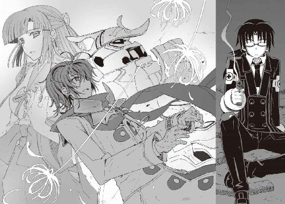
鮮血にまみれて倒れている直貴を、無意識に振り返る。そこには彼の射影体の姿があった。巫女装束を着た黒髪の女の幽霊が、直貴を庇うように浮かんでいる。
嵩月と同じ顔をしたその幽霊は、僕を見て、なにか訴えるように唇を動かした。
その直後。
凄まじい速度で飛来した氷の薙刀が、彼女の本体を封印していた水槽を貫いた。
機巧魔神《鋼》の体内に封印されていた、副葬処女。その肉体が一瞬で凍りつき、砕け散った。
巫女装束の幽霊が、声もなく、消滅する。そして彼女が庇おうとしていた直貴の身体も、急激な非在化によって塵に変わっていく。
「いや......智春......」
環緒さんが、放心したようにその場にくずおれた。彼女の瞳は焦点を結んでいなかった。
「うわああああああああああああああああああ──っ！」
アニアの絶叫が響き渡った。
彼女は、直貴の友人だ。ある意味では、僕よりも遥かに直貴のことを理解していた。その彼女の目の前で、直貴が殺された。
そう、直貴は殺されたのだ。幼い彼女の目の前で。友人だと信じていたもう一人の男に。
「あ......」
地面に倒れたままの嵩月が、立ち上がろうと必死で足掻いている。
その彼女を狙って、氷羽子が薙刀を構えるのが見えた。
「鳳島氷羽子っ──！」
僕は怒号を上げた。鐵が内蔵された無数の歯車を回転させ、超高密度の重力球を生成する。
それは砲弾と化して氷羽子を襲った。
だが、その超重力の砲弾を、受け止めたのは冬琉だった。ありとあらゆるものを呑みこみ粉砕するはずの重力球を、生身の彼女が太刀の一閃で斬り裂き、消滅させる。
僕はどうしようもなく絶望を感じた。かつて兄と呼んだ男を目の前で殺され、目の前で仲間が傷つけられようとしているのに、なにもできない。誰一人、守れない。
氷羽子が嵩月に、薙刀を振り下ろそうとする。
その氷羽子を攻撃したのは、僕ではなく──朱浬さんだった。彼女のショットガンの乱射を避けて、氷羽子が仕方なく嵩月から離れる。
「トモハル、逃げて！ 奏っちゃんと、ニアちゃんを連れて──」
朱浬さんが、いつものミサイル発射姿勢を取りながら、叫んだ。
「え......？」
朱浬さんはどうするんです──と訊き返そうとして、僕は気づいた。朱浬さんの身体はボロボロだった。彼女の愛用品である黒コートのあちこちが裂けて、素肌と、そしてその下の金属製の骨格が剥き出しになっている。生身の部分も傷ついて、彼女の全身は鮮血で濡れていた。
真日和の風獣の最後の攻撃と、その前の冬琉との戦いによる傷だ。
今の朱浬さんに、本来の戦闘力は期待できない。だから彼女は僕に逃げろと言ったのだ。
だが、それで朱浬さんはどうなる──？
そもそもあの傷で、彼女は助かるのか？
「発射......」
そんな傷だらけの姿で、朱浬さんはミサイルをぶっ放そうとした。
だが、その前に、なにかが彼女の胸に突き立った。
とん、と驚くほど軽い音を立てて。
刃渡り五尺を超える太刀が。
彼女の心臓を貫いて、背中まで突き抜けている。冬琉の愛刀──冬櫻が。
「あは......」
朱浬さんの唇から、弱々しい吐息が漏れた。ごめんね。彼女は、そう呟いたように見えた。
真紅に輝いていた彼女の瞳から、光が消える──
そして動きを止めた彼女の全身を、純白の暴風雪が吹き飛ばした。氷羽子の使い魔の息吹だ。瞬間的にマイナス数十度以下まで冷却されて、白く凍てついた朱浬さんの身体が、砕け散る。
「......嘘......だろ......なんでこんな」
怒りすら忘れて、僕はその場に膝を突いた。
氷羽子の使い魔が僕に狙いをつけるのが見えたが、それでも僕はもう動けなかった。
二本の氷柱を短剣のように両腕に握って、氷羽子は、嵩月とアニアを冷ややかに見下ろし、
「そこまでだ、氷羽子──」
そんな彼女を制止したのは、部長だった。彼は全身の埃を払いながら立ち上がり、
「もういい。これ以上の犠牲を出す必要はない......目的は果たされた。僕たちの願いは叶う」
部長の態度は、いつもとまったく同じだった。
不細工なコアラを通して聞こえていた声と同じ。シェルターの中に引きこもっていたころとなにも変わらない口調だった。そのことが僕の絶望を深くする。
部長は、今まで演技をしていたわけではないのだ。
僕たちを裏切ったという意識すらないはずだ。彼はきっと自分に必要なことをしていただけ。
彼にはなにか強固な目的があって、そのためだけに行動している。
それ以外のすべては、彼にとって等しく無意味な出来事のだ。
「失礼いたしました──我が主」
氷柱を消した氷羽子が、ゆっくりと塔貴也に近づいていった。
「主......って......」
僕は、塔貴也の隣に跪く氷羽子の姿を、ぼんやりと眺めた。
鳳島氷羽子は、塔貴也の契約悪魔。
その事実を、少しの時間をかけて認識する。そうか。だから、なのか。
だから暮海崎の地下遺跡で、氷羽子は正確に僕たちの前に現れて、加賀篝から〝遺産〟を奪うことができたのか。あのとき部長の機巧偶人が、僕たちの様子を最初から最後まで観察していたから。だから冬琉は氷羽子に協力していたのか。氷羽子が自分の想い人の契約悪魔だったから。
だが、それはいったいなんのために──？
「なぜです、部長......どうしてこんな仲間を平気で傷つけるような真似を......」
僕は声を震わせた。目の前で兄貴と朱浬さんが殺された。真日和は使い魔を失い、瑤は《白銀》の副葬処女を失った。そして《鋼》の中に封印されていた〝一巡目の世界〟の嵩月も。そこまでして彼が手に入れようとしていたものは、なんなんだ!?
「......嘆く必要はないんだ、夏目くん」
塔貴也は、いつもと同じ頼りない声で言った。
冬琉が、そんな塔貴也に、どこからか運んできた銀色のトランクを手渡した。
「これがなにかわかるかい？」
受け取ったトランクを、塔貴也は僕に見えるように掲げてみせた。
佐伯兄のところで目にした《翡翠》のトランクに似ているが、細部の作りが微妙に違う。
塔貴也のトランクのほうが、ずいぶん古い。
そして薄く錆びたトランクの表面には、短い英文が刻みこまれていた。
"Final Production Run"──最終生産品。
「暮海崎の......遺産......」
そう。塔貴也が氷羽子の契約者なら、それが彼の手元にあってもおかしなことはなにもない。いや、そうでなければむしろおかしいのだ。
「加賀篝は、これがなにか知らずに手に入れようとしていたようだけど、ある意味、たしかにこれは彼の望みを叶えるための道具だった。彼が手に入れても使うことはできなかったが」
そう言って塔貴也は、トランクの留め金に手を掛けた。
「これは......本来この世界に存在しないはずの遺産。夏目直貴の機巧魔神──鋼の祭壇なんだ」
祭壇。そうだ。僕はその言葉を知っている。副葬処女を封印し、そして新たな演操者が機巧魔神と契約するための、触媒──機巧魔神の登録ユニット！
「演操者とは、機巧魔神を制御するためのナノマシンを体内に注入された人間なんだ」
塔貴也は淡々と説明を続けながら、留め金を外した。
ナノマシン？
僕は無表情に塔貴也を見つめた。
ナノマシン。単語の意味は知っている。ウィルスと同じ程度の大きさの微細な機械で、たとえば人間の体内に注入して、病気の治療などに使えるともいわれている。
演操者の体内には、そのナノマシンとやらがある。それがいったいなんだというんだ？
塔貴也が、もうひとつの留め金も外した。
その瞬間、トランクの取っ手が淡く緑色に発光した。
光は彼の指を伝って、手の甲から腕全体──そして彼の全身へと波紋のように広がって、すぐに消えた。それで終わりだった。
「相方となる副葬処女を失った演操者は、そのナノマシンが変質して、周囲の魔力を拒絶する電波妨害的な働きをすることになる──これが元演奏者の魔法無効化能力の正体だ。元演操者の肌に浮かび上がる紋章は、変質したナノマシンの残骸なんだ」
塔貴也はトランクを地面に落とした。そしてぞんざいに蓋を開けた。
なぜか漠然とした不安を感じて、僕は訊き返した。
「なんの話をしてるんですか、部長......？」
「元演操者の魔法無効化能力は、肉体にのみ依存する、ってことだよ」
塔貴也は、新しいオモチャを自慢する子どものような顔で笑った。
彼の隣には、冬琉が立っていた。彼女は、特に恥じらう様子もなく、身につけていた衣服を無造作に脱ぎ捨てていく。上着も、その下のスポーツウェアも。
「魂にはなんの影響もない......つまり元演操者にも、副葬処女になる資格があるということだ」
「冬琉会長......まさか!?」
トランクの中には、ただ暗闇だけが広がっていた。
暗闇よりもさらに暗い、濃密な虚無の闇が。
その闇を突き破るようにして、トランクの中から現れたのは、透明な円柱型のカプセルだった。青い溶液を満たした、水槽のようなガラス管。
引き締まったしなやかな裸身をさらした冬琉が、そのカプセルへと手を伸ばす。
彼女の指先は表面のガラス容器をすり抜けて、カプセル内部へと呑みこまれていく。
冬琉が一瞬だけ振り返って塔貴也を見た。
塔貴也は無邪気に微笑んで、うなずいた。
そして冬琉の全身が、カプセルの中へと──
「ダメだ......冬琉会長！」
彼女がなにをしようとしているのか理解して、僕は叫んだ。
佐伯兄が言っていた。
副葬処女の魂が消滅するか、演操者自身が死ぬか。
前の所有者が演操者としての資格を失った状態で、祭壇を開けること──
それが機巧魔神の新たな演操者となる条件だと。
そのトランクと対になる機巧魔神というのは、もしかして──
「鐵っ！」
漆黒の機巧魔神が、僕の声に反応して猛然と前に進み出た。
冬琉がトランクに呑みこまれる前に、彼女を外に出さなければならない。
彼女を封印させるわけには──副葬処女にするわけにはいかないのだ。
演操者のために魂を磨り減らすだけの生け贄として、彼女を捧げるわけにはいかない。
だが──
「おいで、シャーリーズ」
塔貴也が、彼の使い魔を呼んだ。
再び空中に舞い上がった氷の不死鳥が、鐵の巨体をタックルで吹き飛ばす。
その圧倒的なパワーに僕は戦慄した。氷羽子が操っていたときとは、段違いにパワーが上がっている。本来の契約者が操っているから、という理由もあるのだろうが、それだけではない。
切断されていたはずの不死鳥の氷の翼が、凄まじい魔力をまき散らしながら再生していく。
その圧倒的な魔力の正体を、僕は知っていた。
それはかつて加賀篝隆也の使い魔──不定形獣が持っていたのと同じ能力だ。
すでに契約悪魔を持っている塔貴也が、もし、新たに機巧魔神を手に入れたら──
そのとき彼は、互いに滅ぼし合うはずの二つの力を、一人で手に入れることになる。
使い魔と機巧魔神の両方の力を兼ね備え、無尽蔵の魔力を操る存在になる。すなわち、
「魔神相剋者──かっ！」
《鐵》が、塔貴也の使い魔のパワーに圧倒されていく。
さっきまでとは桁違いのその膨大な魔力は、間違いなく、かつての加賀篝隆也と同じ、魔神相剋者のものだった。
「最初から、あんたはそれが目的だったのか。兄貴を倒して、その機巧魔神を奪うことが！」
塔貴也が加賀篝から奪った〝遺産〟の正体は、夏目直貴の機巧魔神《鋼》の祭壇だった。
《鋼》の祭壇が、遺跡に封印された理由もわかっている。それは、《鋼》があまりにも強力な機巧魔神だからだ。
世界の境界を越えることすら可能なほどの──
しかし、塔貴也が《鋼》の演操者になるためには、もうひとつ条件があった。
演操者が存在する機巧魔神は、契約しても喚び出すことができない。
《鋼》を塔貴也が手に入れるためには、先代の《鋼》の演操者である夏目直貴を殺さなければならなかった。
だから塔貴也は、環緒さんを執拗に狙ったのだ。
水無神環緒が危機に陥れば、必ず夏目直貴が助けに来るから。
それが自由に空間を操って移動する夏目直貴を殺す、唯一のチャンスだったから──
「夏目直貴の鋼は、完成された最後の機巧魔神だ」
塔貴也が、満足げな笑顔で呟いた。
そんな彼のすぐ背後に、一人の少女が姿を現す。
長く伸ばした前髪で右目を隠した、幽霊の少女が。
「完全なる空間制御能力を持つ機械仕掛けの悪魔と、魔神相剋者のパワーがあれば、僕たちは世界を超えて過去に跳べるんだ。僕は──もう一度ゲームをやり直す」
「〝三巡目の世界〟を作る......のか......そのために、朱浬さんや兄貴を......」
塔貴也の使い魔の圧倒的な力に必死で抗いながら、僕は呻いた。
しかし塔貴也は、そんな僕に優しげに笑いかけ、
「......きみも一緒に来るかい、夏目くん？」
「な......!?」僕は絶句した。
「きみの役目は終わりだ。この世界に残っていても、なにもできることはない......だろ？」
塔貴也が悪意のない、けれど残酷な口調で僕に言う。
「きみにもやり直すチャンスをあげるよ。新しい世界の水無神操緒は、機巧魔神の生け贄になんかならない。嵩月奏も非在化しない。黒崎朱浬も、彼女の妹も死なずに済む。アニアくんのお姉さんもだ──その世界にいたオリジナルのきみの存在は上書きされて、きみは自分の記憶と経験を引き継ぐことができる。僕たちはきっと、夏目直貴のような失敗は繰り返さない」
そう語る塔貴也は、人間を誘惑する悪魔のような微笑みを浮かべていた。
僕は忌々しげに彼を睨みつけ、
「......この世界は、どうなるんです？ この世界の朱浬さんたちは......？」
「どうにもならない。仕方ないさ......死んでしまった人間は生き返らない」
塔貴也は冷ややかに首を振った。
「僕たちはお互い、この世界でクイーンを──最愛の人を失った。負けが決まったチェス盤はひっくり返してやり直すしかないんだ」
塔貴也の甘い誘惑の言葉は、疲弊した僕の耳に、ひどく優しく心地よく響いた。
くずおれそうになった僕の手に、誰かの指が触れた。
嵩月奏だった。
傷ついて息も絶え絶えの嵩月が、ボロボロの身体を引きずるようにして僕の隣に立っていた。
彼女のひんやりとした細い指が、強く僕の手を握ってくる。
強い光を失っていない嵩月の瞳に、僕は小さな微笑を返し、
「ようやく......わかった」
漆黒の機巧魔神に、僕は湧き上がる感情を注ぎこむ。
たしかに、なにかがわかった気がした。夏目直貴と名乗っていた男が、この世界でなにをしようとしていたのか。なんのために、接続されてしまった世界を切り離そうとしていたのか。
だから、塔貴也はここで止めなければならない。
この身勝手で無邪気な男を解き放つわけにはいかない。
塔貴也は、自分が望むように歴史を塗り替えようとしている。ただ自分だけが望むように。そして彼はその能力を手に入れた。新たな世界を創り出す魔神相剋者の能力を。
だから、今この場で彼を止めなければならない。神に等しい能力を手に入れてしまったこの魔神相剋者を、新たな世界に解き放つわけにはいかないのだ──！
漆黒の機巧魔神の拳が、かつてない規模の巨大な魔法陣を描いた。
それを見ていた塔貴也が、本当に不思議そうに首を振った。
「どうして同じ過ちを繰り返そうとするのかな......」
僕はそれに構わず、重力球を放った。塔貴也の使い魔が、爆発的なブレスを放って、それに対抗しようとする。だが、塔貴也の使い魔のそのクセはもうわかっている──
最初の一撃は、ただの囮。本命は次の二撃目だ！
「──行け、鐵！」
鐵の左腕が、無防備に立つ塔貴也を目がけて、小規模な、しかし高速な重力球を放つ。
それは幾重もの魔法陣を通過してさらに加速し、銃弾に近い速度で塔貴也を襲った。だが、
「おいで、鋼」
塔貴也が呟いた。
彼の影の色が変わる。光を反射しない、虚無の色へと。
そしてその影をこじ開けるようにして現れたのは、鋼色の巨大な腕だ。
鐵の重力球の砲弾を、それは易々とつかみ取って瞬時に消し去った。
『闇より暗き融炉より出し──』
全身を現した鋼色の魔神が、低く嗄れた声を洩らす。
噴き出す魔力で、大気が震える。
氷の不死鳥と、鋼色の魔神。振り子が加速するように、塔貴也のふたつの下僕の間で、魔力が循環して無制限に増幅されていく。
鋼色の魔神の右手に重力球が出現した。《鐵》のものとは比較にならないほどの、高濃度の完全な闇だ。僕は、本能的な恐怖に駆られて鐵を操った。
《鋼》の重力球に対抗するように、最大出力で黒の拳撃を撃ち放つ。
『──其は、科学の鎚が鍛えし玉鋼』
鋼色の魔神が、重力球を放った。
鐵は必死でそれを押し戻そうとした。緑色の双眸が発光し、全身の腱や歯車が軋む。骨格が悲鳴に似た音を立てて歪む。そして、
「鐵......が......」
嵩月が細い声で呟いた。
漆黒の護法装甲に無数の亀裂が走り、破片が散った。指があり得ない方向にねじ曲がり、腕の関節が砕け散る。鐵が、破壊されていく。
「操緒が......っ」
死ぬ。
その言葉が脳裏をよぎった瞬間、僕の視界が歪んだ。
いや、違う。歪んでいるのは、世界のほうだ。
周囲の景色がねじ曲がり、虹色に輝く光が頭上へと集まっていく。まるで深い闇の底に沈んでいくような感覚。世界そのものが圧縮されて、遠い場所へと飛び去っていくような。
機巧魔神《鋼》の圧倒的なパワーが、空間そのものを歪めているのだ。
「......鋼!?」
「塔貴也様！」
塔貴也や氷羽子が焦る気配が伝わってくる。使い魔が無秩序に冷気をまき散らし、《鋼》の魔力の放出も収まる気配がない。
「部長の......機巧魔神が暴走してる......」
僕は激しい動揺を覚えた。それがどんなに危険な状態か、理屈ではなく本能でわかる。このまま無制限に《鋼》が魔力を吐き出し続ければ、その重力に押し潰されて僕たちは死ぬ。それだけではない。おそらく僕たちのいたこの世界そのものが壊滅する可能性も──
「嵩月！ アニア！」
この強烈な魔力の内部で自由に動けるのは《鐵》だけだった。
すでに塔貴也や氷羽子の姿も、闇に呑まれて見えなくなっていた。僕はかろうじてアニアと嵩月を近くに引き寄せ、重力球のバリアで彼女たちを守る。
「環緒さん！」
そして環緒さんを捕まえようとしたとき、
「智春くん......あれはあたしが止めるわ。あなたはその子たちを守って......」
伸ばした《鐵》の指先から、環緒さんがすっと遠ざかる。
「環緒さん......!?」
「その機巧魔神なら......耐えられるはずよ。直貴はそのためにあなたにそれを託したんだから」
彼女の姿が完全に闇に包まれる寸前、腕を伸ばした環緒さんの前方に、無数の弾丸が出現するのが見えた。触れるものすべてを消滅させる、神無の弾丸。彼女が狙っているのは塔貴也たちの使い魔だった。
たしかに使い魔が一時的にでも大ダメージを受けて活動を停止すれば、魔力を共有している《鋼》の暴走が止まる可能性も高い。
だが、魔神相剋者の使い魔に活動停止レベルのダメージを与えるためには、いったいどれだけの魔力が必要なのか想像もつかない。契約者を持たない環緒さんがそんな魔力を使ったら、確実に彼女は非在化して──消える。
「環緒さん────」
僕は必死で彼女の名を呼んだ。闇の重圧が勢いを増し、傷ついた鐵が苦悶の声を洩らす。その闇の圧力に僕の意識が呑みこまれる刹那──
環緒さんが、どこか舌っ足らずな悪戯っぽい声で、僕に囁いた。
「だいじょうぶ......あなたには操緒がついてるわ」
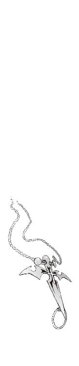
∴ エピローグ
虹を見た。無限に広がる虚無の闇。
息苦しく冷たい永劫の孤独の中で、虹を見た。
闇の深淵に散らばる無数の星々が集まって、それは鮮やかなグラデーションを描く。
空虚の闇に沈みながら、僕はたしかに虹を見続けていた。
そして僕は墜ちていく。誰かの声が。
光が──導く場所へと。
目を開けると、冬の直前の霞んだ青空が見えた。
風が、木々の匂いを運んでくる。
川のせせらぎと、鳥の鳴き声が聞こえる。
「智春......ねえ、智春ってば」
さやさやと葉擦れの音が鳴った。
木漏れ日の隙間から、虹が見える。
その虹を遮るようにして、大きな瞳が、僕の顔をのぞきこんできた。
綺麗に日焼けした童顔の少女が、軽く僕の目の前で手を振って、笑う。
「ねえ......大丈夫？ 智春......？」
「あ......」
焦点の合わない目を擦りながら、僕はのろのろと顔を上げた。
僕の頭上に、ジャージ姿の小柄な少女が、ちょこんと膝を曲げて座っていた。洗濯されたタオルとシャンプーの匂い。茶色く陽に透けた髪が、さらさらと揺れる。
「杏......？」
僕は呆然と彼女の名を呼ぶ。クラスメイトの大原杏は、混乱している僕を見て、クスクスと面白そうに笑っている。
ゆっくりと上体を起こして、僕は呻いた。傷だらけの全身が悲鳴を上げていた。記憶に霞がかかっていて、すぐにはなにも思い出せない。鋼色の機巧魔神はどうなった。いや、それより、
「どうして......杏がこんなところに......？」
「......こんなところって、ロードワークの途中だけど？」
「ロードワーク？」
「そうだよ」
杏は小首を傾げて、ニヤニヤと僕の顔をのぞきこんでくる。
「それより、智春はなにをしてたのかな？ こんな道の真ん中で」
「え？」
沈黙して、僕は周囲を見回した。自分が今どこにいるのか、すぐには理解できなかった。
そこは大きな屋敷の門の前だった。まるで幽霊屋敷のような、古い煉瓦造りの洋館だ。庭には冬枯れの大きな桜の大木。その姿を僕は呆然と眺めた。
その建物の名前を僕は知っていた。
鳴桜邸。
真日和たちに爆破されたはずの、鳴桜邸の姿だった。僕はその前に倒れていたのだ。
「嵩月......そうだ、嵩月は？ それにアニアも......」
「あにゃあ......？」
僕の言葉を聞いて杏は、少し面食らったような表情を浮かべた。アニアが同級生の名前だと知らないような態度だ。それから彼女はふと真顔になって、
「嵩月って、嵩月奏ちゃんのこと？ 智春、あの人と知り合いだっけ？」
「いや......知り合いというか......」
彼女は僕たちのクラスメイトのはずなのだが。
「でも学園のアイドルと会うのに、そんな汚れた恰好で会いに行くのはちょっとどうなのかな......第一、こんなところに穴ぼこあけて怒られてもしらないからね？」
「学園のアイドル？」
なんだそれは、と僕は思った。たしかに嵩月は芸能人にしてもおかしくないような美形だが、そんなあだ名は聞いたことがない。
そして穴ぼこ、という杏の言葉で、僕は気づいた。
僕の倒れていたすぐ背後の道路。
アスファルトの表面をえぐるようにして、地面が人の形に陥没していた。
足先から、頭部までの長さはおそらく四メートルほどだろうか。
それは、巨大な人形が地面に叩きつけられた跡のように見えた。
まるで僕を庇うようにして地面にのめりこんだ、その人形の姿はどこにも見あたらない。
ただその痕跡が地面に刻みつけられているだけだ。
「せんぱーい、なにやってるんですか──！」
その人型のクレーターの向こう岸で、誰かが杏に手を振っていた。
知らない顔の女子だった。杏と同じデザインで色違いのジャージを着て、首からタオルを提げている。
「あ、ごめん。追いついた？」
杏が、その女の子を見上げて叫んだ。そして、
「じゃあ、陸上部の後輩の子が着いたみたいだから、あたし、行くね」
「後輩って......」
僕は再び混乱した。なぜ高校一年生の僕たちに、部活の後輩が存在するんだ？
そして、ふと僕は、杏が着ているジャージの襟の色に気づく。
学年に応じてそれぞれ違う色にカラーリングされているはずの陸上部の練習ジャージ。杏が着ているのは、二年生のジャージだ。
「ちょっと待ってくれ。杏......今はいつだ？」
僕はあわてて杏を呼び止めて訊いた。
杏は本気で呆れたように、
「ちょっと、智春、どうしちゃったの？ いくらクリスマスが近いからって浮かれすぎだよ」
「高校二年生の......クリスマス前......」
ちょうど一年後の世界ということになるのだろうか。塔貴也の機巧魔神の暴走に巻きこまれ、僕は一年後の世界に飛ばされた......のか？
「あ、そうだ、智春」
よっこらせ、とクレーターを乗り越えた杏が、なにか思い出したように僕に言った。
「操緒ちゃんのお見舞い、今度は、あたしにも声を掛けてね。しばらく、会ってないからさ」
「......操緒の......見舞い？」
ぞくり、と僕の背筋に寒気が走った。
操緒が、入院している──？ 彼女が生きている、というのか。この世界では？
杏はにこやかに微笑んで、
「うん、早く治るといいよね......非在化」
そう言い残して去っていく杏の姿を、僕は呆然と見送った。
地面に刻みつけられた人型の痕跡を見下ろし、たったひとつの可能性に思い当たる。
「──操緒、聞こえているか？」
試しに彼女の名を呼んでも、僕に憑いているはずの幽霊の少女は現れなかった。
そうだ。この世界には、幽霊の操緒はいない。
なぜなら、ここでの操緒は幽霊ではなく、生きているから。
非在化が原因で入院している。つまり、ここは彼女が悪魔化した世界なのだ。
そして、そんな世界は僕が知る限り、たったひとつしか存在しない──
一巡目の世界──
ここは、すべての始まりの場所なのだった。
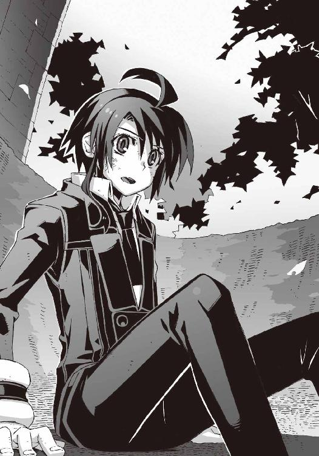
あとがき
そんなわけであとがきです。『アスラクライン』第十巻をお送りします。
この話、なにか特別な事情で急遽変更されたりしない限りは、『科學部カイメツ』という、なにやら思わせぶりなサブタイトルがついていると思います。
最初の予定では今回のサブタイトル、『カガクブカイメツ』とすべてカタカナ表記になっていました。ですが、『アスラクライン』というタイトル自体がそもそも全部カタカナで、この上、サブタイトルも全部カタカナとか、いくらなんでも作者アタマ悪すぎる、という気がしたので、仕方なく一部変更しました。たいした差ではないのですが、今回のサブタイトルは、自分の中ではシリーズ開始前の企画段階から『カガクブカイメツ』で決定されていたので、いまだに少し違和感があります──
などと、冒頭からかなりどうでもいい裏事情で失礼しました......！
すでに本文を読んでくださった方はお気づきだと思いますが、今回のエピソードは、なにを語ってもネタバレになってしまいそうなので、迂闊なことが書けないのです。なのでこのまま最後まで、どうでもいい話をダラダラと続けたいと思います。
そういえば、前回のあとがきで、この巻は「クリスマス篇」などと書いてしまった気もするのですが、諸事情によりクリスマスまで辿り着かずにこんなことに......やべえ。
誰もそんなことは気にしてないと思うのですが、もしも楽しみにしてくれていた方がいたら、正直すみませんでした、としか言いようがありません。その場合、クリスマス篇はいずれ満を持してやり直したいと思います。お詫びにミニスカサンタコスプレとかもさせます。ともはに。
どうでもいい話パート２。
作者の近況、というほどのこともないのですが、掃除機を買いました。俺専用の。吸引力が変わらないただひとつのヤツ。なにやらでかくて恰好いいぜ。
もちろん掃除機は前から持ってたんですが（なんかスウェーデン製のごっついやつ）、いちいち自分の部屋まで運んでくるのが面倒くさいなあ、と前からずっと思ってまして。で、ほら、試験前とか、忙しいときに限って部屋の掃除をしたくなるじゃないですか。あれと同じ心理で、〆切前の作家もやたら部屋の掃除がしたくなるんですよ。ほかの人は知りませんが私はそう。
そこでふと思ったのです。仕事場に掃除機があったら常に部屋がキレイで、掃除を始めてもすぐに終わる。すると〆切前でも原稿がはかどるんじゃないだろうか、と。
もうね、あれ。人間、〆切前で追い詰められて寝不足が続いてると、ロクなことを考えない、という見本ですね。たしかに掃除機を持ち運びする手間は省けたのですが、常に部屋の中にバカでかい掃除機が置かれているというのはむしろ邪魔。余計に部屋が散らかります。というか、今すでにその掃除機が資料本の山に埋もれてるのですが。
というわけで、俺専用掃除機は今イチ使えない、という結論でした。
すみません、さすがにどうでもいい話すぎました。
『アスラクライン』の巻数もついに二桁に到達しました。といっても作者がべつになにか頑張ったというわけではなく、これまで付き合ってくださった読者の皆様のおかげです。本当にありがとうございます！ 智春たちと一緒に作品を支えてくれた方々への感謝の気持ちを伝えるためにも、これからのアスラクラインを、もっと面白くしたいと思っています。
とりあえずは次回の智春たちの逆襲をお楽しみに。
彼らの世界の日常は、最初から継ぎ接ぎだらけの偽りの安定の上に成立していたわけですが、それがこのまますべて崩れてしまうのか、それともまったりした平和な日々を取り戻すことができるのか。そのためになにを犠牲にするのか──そう遠くないうちに答えが出ると思います。
いやべつに次が最終回とかそういうことではなくて、いちおうの折り返し地点なので。
うん、まだまだ面白くなりますよ。いまだに本篇で出番のないあの人のためにも。
さて、ひっそり宣伝なのですが、二〇〇八年六月現在、『電撃文庫MAGAZINE』誌上で、「アスラクライン紙ラジオ〜洛高放送委員会」という企画が連載されています。最近ちょっと不足気味のアスラクラインのぬるい学園ラブコメ成分を補う、投げっぱなし企画です。
このコーナーでは（なんと無謀にも）皆様からの質問やメッセージを募集しています。興味がある方は、ぜひ巻末の編集部の住所まで思いつくままに送ってください。よろしくです。
それでは最後になりましたが、本書の出版にあたりお世話になった皆様、本当にありがとうございました。特にイラストの和狸ナオさんには、今回も原稿の遅れで大変ご迷惑をおかけいたしました。にもかかわらず、いつも素晴らしいイラストをありがとうございます。
また、この本を手にしてくださった読者の皆様にもあらためて究極の感謝を。
次巻で再びお会いできることを祈っています。三雲岳斗でした。
三雲岳斗
大分県出身横浜市在住。最近の悩みはマンションの駐輪場でウチの愛車の隣に、アニメキャラの絵がペイントされた痛バイクが止まってること。しかも某電撃文庫キャラ。絶対俺のバイクだと思われてる！
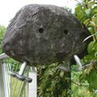
和狸ナオ
１９７６年生誕の千葉県民。くじ運は最低ながら本作の挿絵を描かせて頂き、実はすごく仕事運が良いのでは...?!と人生見直しております。遅咲きな絵描き兼ぬるいゲーマーですが、よろしくどうぞ。
電撃文庫
アスラクライン⑩
科學部カイメツ
三雲岳斗
二〇十二年八月二十四日 配信
発行者 塚田正晃
発行所 株式会社アスキー・メディアワークス
〒一〇二−八五八四 東京都千代田区富士見一−八−十九
(C)2008 GAKUTO MIKUMO／ASCII MEDIA WORKS
本書（電子版）に掲載されているコンテンツ（ソフトウェア／プログラム／データ／情報を含む）の著作権およびその他の権利は、すべて株式会社アスキー・メディアワークスおよび正当な権利を有する第三者に帰属しています。
法律の定めがある場合または権利者の明示的な承諾がある場合を除き、これらのコンテンツを複製・転載、改変・編集、翻案・翻訳、放送・出版、公衆送信（送信可能化を含む）・再配信、販売・頒布、貸与等に使用することはできません。